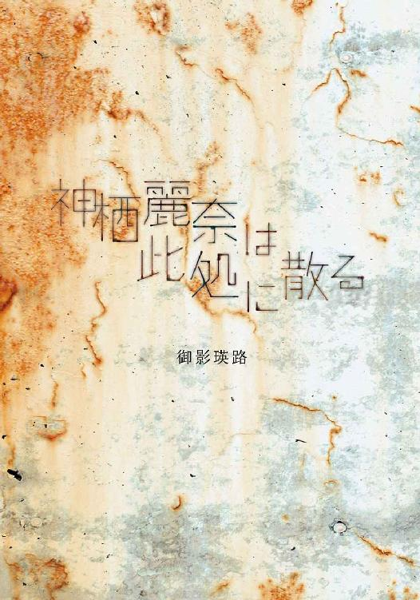
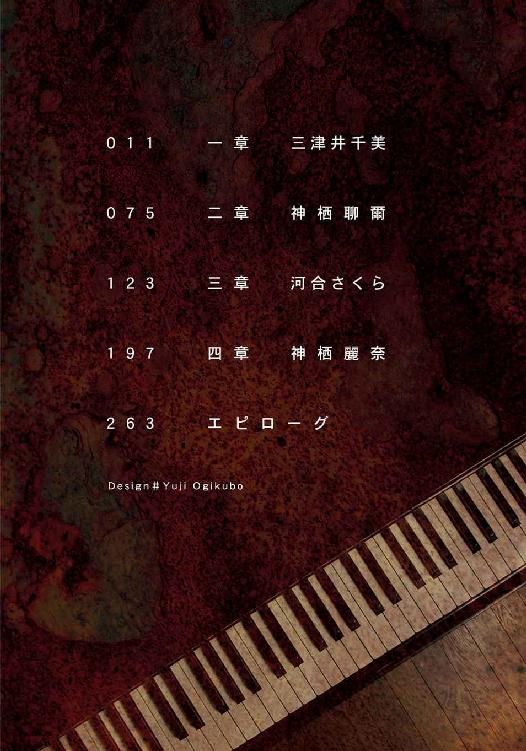
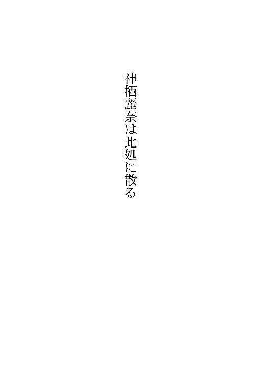
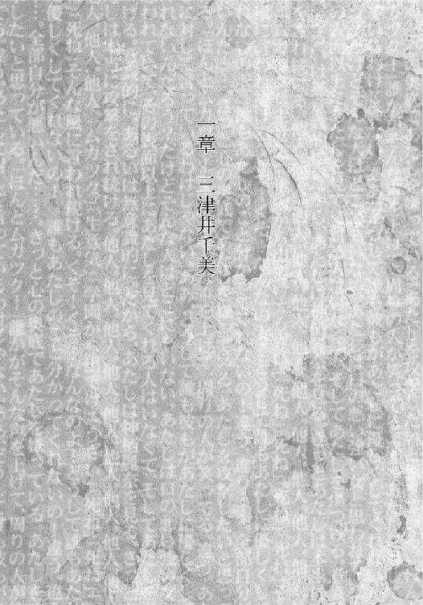
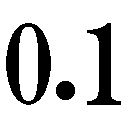
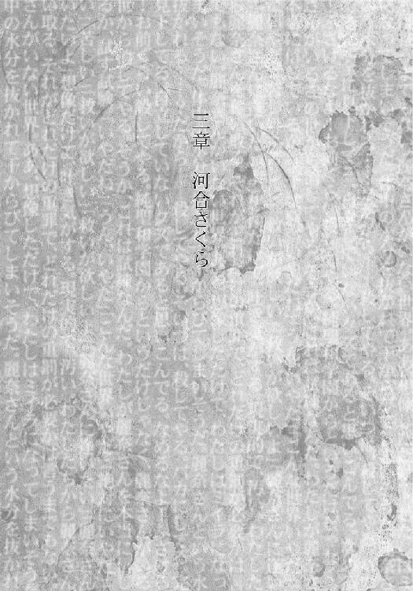
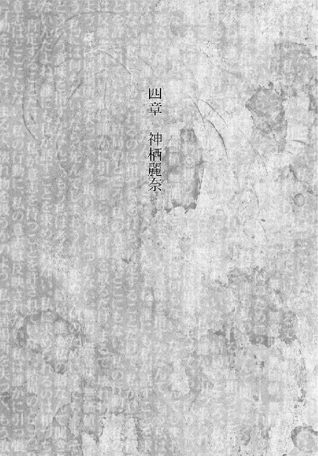
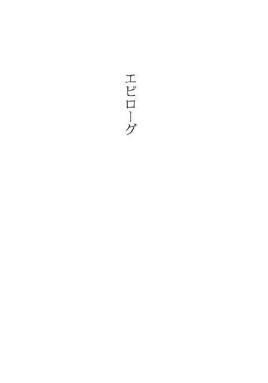

| 神栖麗奈は此処に散る | |
| 御影 瑛路 | |
| (2013) | |


本書（電子版）に掲載されているコンテンツ（ソフトウェア／プログラム／データ／情報を含む）の著作権およびその他の権利は、すべて株式会社ＫＡＤＯＫＡＷＡおよび正当な権利を有する第三者に帰属しています。
法律の定めがある場合または権利者の明示的な承諾がある場合を除き、これらのコンテンツを複製・転載、改変・編集、翻案・翻訳、放送・出版、公衆送信（送信可能化を含む）・再配信、販売・頒布、貸与等に使用することはできません。

わたしに染み渡る彼女、その一歩目は音色だった。
わたしは教材を両手に抱え、ぶつくさ言いながら、放課後、誰もいない廊下を歩いていた。
「まったく担任のやつ、学級委員を便利屋だと思って」
重い。何でこんなもの女生徒に持たせるんだ。......って、そっか、この純聖和学園には男はいない。まったく男ってのはいてもいなくても腹が立つ動物だ。
「誰も『手伝うよ』って言ってくれないし」
まだ入学して一週間だけど、それぐらいしてくれても構わないぐらいは仲良くなったつもりだったのに。やっぱりまだ、純聖和学園という特殊な環境下故に存在する密着した人間関係を、外様であるわたしは溶かし切れてはないのだろうか？
......ただみんなめんどくさいだけか。
わたしは一旦教材を床に置き、壁により掛かる。ちゃんと有効に教育に役立ててくれるんだろうなー、と教材をにらみつけ、軽く蹴る。
──ポロン。
わたしは体をこわばらせる。タイミング良く鳴ったピアノの音が、わたしの行為をとがめているような気にさせたからだ。
はい、八つ当たりしてすみませんでした。
わたしは再び教材を持ち動き出そうとしたけれど、続けてわたしの耳に届いた音色が、わたしの足を止めた。
あ──うまい。
この曲はたぶん、『ショパン』の『英雄ポロネーズ』だ。わたしはピアノに決して詳しいとは言えないけれど、小学生の頃習い事でやっていたので、これぐらいの曲は分かるし、演奏者の技術も分かる。
努力でどうにかならない個性の領域の才能。わたしには当たり前のようになかったセンス。それがある。すごい希有な音色だ。なんだろう？ 普通はすばらしい演奏の場合、そこに演奏者の内面がかいま見えたりする。でも、この演奏は違う。むしろ逆だ。音色に演奏者の内面がまったく見えない。それなのに、心を打つ。透明感......いや、そんなきれいな言葉では物足りない。むしろ......空虚感とさえ言える音色。空々しく、どこか機械的であるのに、そこに何か超然的なものを感じる、そんな音色。喩えるなら、そう──
──まるで......水のよう。
水のように、わたしの体に、しっとりと染みこんでくる。
わたしは自然とピアノの音に導かれて、第二音楽室の前に立っていた。純聖和学園には、その生徒の性質上ピアノに精通している人が多いので、ピアノの置いてある練習室も三つあるのだが、その音色は確かに第二音楽室から聞こえてきた。部活動といった様子もないので、ピアニストになれなかった音楽教師か誰かが弾いてるのだろうか？
わたしは教師用に身構えて、ノックをする。演奏を止められても、聞き惚れてしまったとでも言えばいやな顔はしないだろうと計算していたが、演奏は止まない。......たぶん、ノックの音がピアノの音にかき消されたのだろう。わたしはそう判断して、「失礼します」と普段より大きな声で言って、扉を開けた。
そして──
取り込まれた。
「何か私にご用かしら？」
彼女は、その美しい彼女は、演奏を止めてわたしに微笑んだ。
ああ、何それ？ 何その微笑み？
「......もし？」
硬直しているわたしに、彼女は問いかける。
ああ、何か答えなきゃ。でも、言葉は出てこない。わたしはいまだ目の前の美しい彼女に取り込まれたままで抜け出せずにいる。
取り込まれた。
何が？
わたしが。わたしの概念が。わたしの価値観が。わたしの意義が。わたしの信念が。わたしの主義が。わたしの未来が。
──わたしの持っていた世界が。
強力な竜巻が、わたしという街を次々と粉々にして、中に取り込んでいった。致命的にわたしは崩壊したけれど、薄汚れた街が破壊され、強力で美しい竜巻に取り込まれていく様に、わたしは悦ばしいものすら感じている。
「あ──」
声は出る。でも言葉にならない。
おかしい。確かに彼女は美しい。でも、それが何だって言うんだ。わたしは男嫌いではあるがレズビアンではないし、仮にそうであったとしても、一目見ただけで〝取り込まれる〟なんてことはあり得ない。
でも──現に〝取り込まれている〟自分がいる。
わたしは注意して微笑んでいる彼女を見る。ああ、なんだろうこの感覚。現実と幻想の狭間に放り出されたようなこの感覚。あれ？ わたし彼女に会ったの初めてだっけ？ ......初めてに決まっている。だって昔会ったことがあったにしても、どこかでちらりと見かけたことがあったにしても、わたしは一度見た彼女を忘れるはずがない。
じゃあこの感覚は、どうして──？
──ああ、そうか。
わたしは彼女に会ったことはないし、見かけたことはない。でも、常に思い描いていた。彼女はわたしの理想のビジョンだった。わたしは彼女に会ったことはないし、見かけたことはない。でも、幻想の中の人物である彼女とは、きっとわたしは何度も遭遇していた。
まるで、前世での記憶が蘇ったかのように、わたしは邂逅を懐かしんで──そして涙を流した。涙から水分や塩分以外に、余計な何かが流れていく。わたしはそれがうれしくて、涙の意味が変わるまで、涙を流し続けた。
ハジメマシテ──
わたしのための、彼女。
「......あなた、大丈夫？」
「──大丈夫ですよ」
わたしはやっと言葉を口にする。
「美しい音色ですね」
わたしはもう、普通に言葉を口にできる。わたしはもう、彼女を取り込んだのだ。いや、取り込まれた？ ふん、結局同じこと。彼女は水のようで、簡単にわたしのカラダに染みこんだ。
そうして、神栖麗奈は──
──存在するだけで、わたし、河合さくらを取り込んだ。

１
この世に存在するすべての声は、あたしを攻撃するかまいたちだ。
あたしたちは生まれて死ぬまで孤独で、誰とも分かり合えない。それでもあたしたちはどこからどこまでも他の人間と接しなければならなくて、そこから逃れるには死ぬか、社会的に死ぬかどちらかの選択肢しか用意されていない。
逃げたくとも、この世界には端から端まで人間がひしめいていて、あたしを監視している。
そうやって今日もあたしは、集団生活を強要される。
あたしはこの狭い狭い教室という箱の中に、あたしを攻撃する様々な人間たちと一緒に積み込まれて、ギュウギュウに押し潰される。
今は休み時間。
お嬢様学校といえども、やっぱり女という生き物はうるさいもので、黄色い声があちらこちらで飛び交っている。女性の声というのは、男性の声よりも高いせいか、鋭い。鋭角な刃を持つかまいたち。
笑い声。
きっとあたしに向けられているものではない。
だけど、聞こえる。あたしへの嘲笑に聞こえる。
「あいつの化粧、今日変じゃない？」「いつもふてくされて、見てるこっちは気分が悪いのよね」「よく見ると足太いわよね」「今日授業で間違って答えてなかった？ そもそも英語の発音おかしいのよ」「臭そう」「すぐ男と寝そう」「気持ち悪い」「気持ち悪い」「気持ち悪い」
言ってない。そんなこと言ってない。そんなに言われるほどあたしは普通の人と違わない。
だけど、あたしの想像力は、あたしを攻撃する方向に働いて止まらない。
やめてよ！ 何もあたしの前で喋らないでよ！
「うるさいのよ！」
教室に怒声が響き渡る。
教室が静まる。
......あたしの声で。
みんなが困った顔を、そしてかすかに理不尽に怒鳴られたことへ不満の色を見せる。さすがに純聖和学園の生徒だ。誰も露骨に怒ったりはせずに、さきほどより静かに話し出す。
でも、不満がないわけがない。
きっと心の奥底であたしを嫌っている。あたしを攻撃したいと思っている。
こうやって、あたしは自分を追い込んでいく。自分を異分子にして、誰も寄りつけず、あたしを傷つけないようにする。でもその分理解者を作れず、誰もがあたしに対して何を考えているか分からず、フォローをしてくれる人もおらず、不安は増大する。
「ほんとムカツクー」
誰かがそんな声を上げて、周りの人が笑ってる。
あたしは体を硬直させる。
違う。あたしに対して言っているわけじゃない。お願いだからちゃんと主語を付けて。あたしには「ほんと三津井のやつムカツク」って聞こえる。そう言葉を変換してしまう。
あたしは誰に見られているわけでもないのに、その仕草がバレないように耳を塞ぐ。ああ、どうしてあたしはこんなに傷つきやすいんだろう？ どうして誰も彼もがあたしに優しくしてくれないんだろう？ 誰かに言って欲しい。「傷つきやすいあなたのことを理解しているよ」って。だけどそんな人はどこにもいない。あたしは口の悪い強い女と思われていて、その表面以上にあたしを見てくれる人はいなくて、そしてあたしを傷つける。意識的に、あるいは無意識的に。
だから、あたしは神栖麗奈を見る。
今日は神栖さんは、橋上さんたちのグループの中に混ざって話している。あの人は女子が作るグループに属さない、それなのにあたしみたいに女子の輪から外れない希有な人だ。......いや、あの人を希有程度の言葉で片付けてはいけないけれど。
あたしは知っている。いや、誰でも知っている。あの人は誰かを傷つけない。つまりあたしも傷つけない。
理想を寄せ集めて凝縮したみたいに完璧な、神栖麗奈。
そのあたしたちの〝理想〟は、誰かのグループに属したりしない。誰かに片寄ったりしない。神栖麗奈は常に神栖麗奈として、平等にあたしたちの前に立っている。だから、誰も傷つけない。
神栖麗奈はあたしが手を伸ばしても、すくい上げたりはしない。でも、絶対にその手を払ったりもしない。
だからあたしは安心して、神栖さんを眺める。
あたしの視線に気付いたのか、ふと神栖さんがあたしを見る。他の人なら偶然を装ってとっさに目を逸らすけれども、相手があたしを攻撃しない彼女だから、少しの間だけ目を合わせた。
そして、神栖さんは美しく微笑む。
ああ、美しい。
それだけであたしは、肯定されたような気がする。
でも突然──
そんなあたしの頭の中に、石ころのような異物が入り込む。
石ころだ。頭を振るとごろごろ転がって、脳みそを傷つける。排斥しなければ。何を？ 頭の中に石ころをもたらした人間を。
それは、そいつは──
......え？ どうして？ だって、その人は唯一敵にならない存在で──
いや、それこそが、他の人と何より違う証拠。
でも、そんなこと関係ない。他と違っていたって構わない。問題はそれが頭の中の石ころのように〝害〟になってしまっていることだ。
なんで──？
あたしはまた神栖さんを見る。
彼女は相変わらず美しく微笑んでいる。
２
「ねえ、あなた何様のつもりなの？」
神栖麗奈に対しての違和感を覚えた数日後の昼休み、あたしは廊下でいきなりそんな言葉を浴びせられた。
その言葉を浴びせた相手は、あたしに対しての気遣いなどまったくなく、ただ全身でいらだちを表現してあたしの前に立っている。
攻撃者だ、確実な。
そしてあたしに迫るその攻撃者は、日頃あたしに対しての鬱憤が溜まっているであろうクラスメートではなく、下級生の河合さくらだった。
「はぁ？ あんたいきなり何よ」
過剰反応ではなくあからさまに攻撃してきている相手には、あたしは強く返せる。あたしをこれ以上攻撃しないよう抗戦できる。
あたしは戦う。もちろんあちこち傷つきながら。
しかし、河合さくらはひるまない。
「知ってるのよ。あなたが麗奈さんに対して、汚れた目で見ていること」
「汚れた目？ どういう意味よ？」
「そのままの意味よ。嫉妬か何か分からないけどね、そんな目で麗奈さんを見るのをやめてもらえます？」
「嫉妬？」
確かにあたしは神栖さんをよく見ている。
以前の肯定されたいという理由に加えて、違和感の正体を確かめたいという気持ちが、今まで以上に神栖さんを眺める結果になっている。
だが、嫉妬とはとんでもない誤解だ。
「あんた調子に乗らないでよ。いくら生徒会長とはいえ、あんた下級生でしょ？ 口がすぎると思わない？」
「わたしだって先輩方に対して失礼な言葉は口にしたくないです。でも、許せないものぐらいあるのは仕方がないでしょう！」
「許せないもの？ それがあたしだってこと？」
「そうですよ！ 考えてもみてください。麗奈さんはすばらしい方です。わたしはあの方を尊敬し、わたしからじゃほど遠いあの方の背中を追いかける生き方をしているわけです」
ああ、やっぱり河合さくらはそうなのか。
普段から神栖さんに付きまとっている様を見れば分かるが、河合さくらは神栖麗奈の熱烈な〝信者〟だ。
別にこの学園にとって、神栖麗奈の〝信者〟だという生徒は決して少なくない。いや、むしろ多数派だ。
神栖麗奈のカリスマ性を、喩えは悪いが毒ガスで表現しよう。彼女の毒ガスは㎎吸収すると99・９９９％の確率で人間を死滅することができるような、強力なものだ。街に放ったら街ごと殲滅できるような。しかも感染性が高く、感染した人間が他の人間に触れると、同じく死亡してしまう。
大げさ？ そうかもしれない。でも、彼女の身近にいる人間なら、きっとこの喩えに頷いてくれる。
とにかくそんな神栖麗奈という存在が、この純聖和学園という密室にいるのだ。神栖麗奈は逃げ場のない学園で充満し、浸食する。
すると、どうなるか？
純聖和学園という狭いコミュニティーの中で、神栖麗奈は絶対になる。
そして実際、純聖和学園において、神栖麗奈は絶対の指針であり、法律だった。
「わたしは......いえ、わたしたちは許せないんですよ！ 麗奈さんを蔑む......ああ、言うだけで腹が立つ、とにかくそんな目であなたが麗奈さんを見ることを許せないんですよ！ 麗奈さんを否定するなんて誰にもできない。それなのに、あなた程度の人間ができると思ってるんですか！」
「......なんなのよ、その言い方は！ それに誤解だし。あたしは神栖さんを見下してなんかいない」
「そんな言葉でわたしをごまかせると思っているんですか！」
「でも実際誤解よ！」
「噓吐くな！」
ダメだ。あたしが何を言ってもこの人は信じない。すでにあたしが神栖さんを見下していると思いこんでいる。
そんなことない。あたしだって神栖さんを尊敬している。だってあたしも、この純聖和学園という密室で生活をしている一人なんだから。
だからあたしが神栖さんをそんな目で見ているわけない。
──違和感がマイナスなものでない限り。
「......ほら、思い当たる節があるみたいじゃない」
あたしの懸念が顔に出てしまったのか、河合さくらは確信してあたしを責め立てる。
「......誤解よ！」
「黙れ！ 黙れ！ 黙れ！ 素直に謝って二度と麗奈さんを見ないって誓いなさいよ！」
さすがにカチンと来る。そもそも何様だ、こいつは。あんたは神栖さんの家族でも、それどころか友人でも何でもないだろうが。
「ふん！ 仮にあたしが神栖さんを蔑んでいたからってどうなのよ！ 迷惑を掛けてるわけじゃないじゃない！」
「なんですって？」
「むしろ神栖さんに迷惑を掛けてるのは、ただ見ているだけのあたしじゃなく、むしろ実際に金魚の糞みたいにくっついてるあんたたちでしょう！」
「な、なんですって！」
河合さくらの顔がりんごのように真っ赤に染まる。
──しまった。
この攻撃者は、攻撃することでおののき、攻撃を止めてくれるタイプじゃない。そんなこと分かっているから、適度に攻撃を止めなければならなかったのに、つい反射的に続けてしまった。
そして今あたしは、一番この人にとって、突いてはいけないところを突いてしまった。
もう、ダメだ。この人はあたしを攻撃し続ける。あたしを傷つけ続ける。
それに、それに──
あたしはこの攻撃者の立場を、興奮しすぎて忘れてしまっていた。
「......言い過ぎたわ」
でも、あたしの言葉なんてもう河合さくらには届いていない。河合さくらはどんな謝罪の言葉ももう受け付けない。
「......わたしたちを侮辱したわね」
複数形。
ああ、そう、この攻撃者は──生徒会長なのだ。
「もう絶対に許さない......」
さっきまでのようにわめかれていた方がまだマシだった。今の呪うような低い声は、もうその憎しみを固定させてしまって、揺るぎないものとさせている声だ。
ああ、終わった。
今まではあたしが過剰反応し、曖昧な言動を勝手にあたしへの攻撃だと解釈して過ごしてきた。もちろんあたしは敵を作るタイプだし、本当にあたしへの攻撃もあっただろう。でもあたしが傷ついてきた言動の大半は、あたしが過剰反応をして勝手に傷ついてきただけだった。
でも、これからは違う。
きっとあたしは本当に攻撃をされ続ける。
「ムカツク」「生意気」「学園から出てけ」「うざい」「死ね」「死ね」「死ね」「死ね」
そんな風に言われ続ける。
だって、この目の前の攻撃者は生徒会長なのだ。神栖さんに次いで影響力のある人間なのだ。河合さくらがあたしを「許さない」と公然と口にすれば、あたしを攻撃する者は増殖する。河合さくらはそれだけの立場と人望を持つ人間なのだ。
ましてや神栖麗奈の〝信者〟たちは、画一的価値観を持っている。その中心である河合さくらがあたしを「許さない」とするならば、他の〝信者〟たちも同じ感情を抱くに決まっている。
閉じられた純聖和学園において、河合さくらは敵に回してはならない。
神栖麗奈は誰に対しても平等である。でもそれに付随する人間たちがそうであるわけじゃない。キリストは『右の頰を打たれたら左の頰を出しなさい』と言っているのに、信者たちは戦争を起こす。そんなものだ。河合さくらは神栖麗奈の存在を出しにして、あたしへの攻撃を同意させ、共感させるだけの力を持つ。
河合さくらもそれを自覚しているから、上級生であるあたしにこれだけ強い口調で迫れるのだ。
「......悪かったわ」
だけど、当たり前だけどあたしの謝罪の言葉なんて、もう河合さくらには火に油だ。
「......覚悟しなさいよ。あなたの居場所はもう、この学園にはないってことを思い知らせてあげるから」
そう河合さくらは宣告した。
それは脅しではなく、きっと決定なのだ。
あたしの居場所は、きっと数日後には──なくなる。
家に帰るやいなや、あたしは自分の部屋に閉じこもり、セミダブルのベッドの上に横たわって、枕に顔を押しつけた。
「ああ......」
どうしよう......もう、いやだ。
ただでさえ優しくない出口のない箱の中なのに、あたしはその中でみんなの標的にされ、串刺しにされるんだ。
あたしは攻撃されたくないだけなのに、傷つきたくないだけなのに。
自分を守るために相手を攻撃して、その攻撃に相手が怒って、あたしをみんなで攻撃する。
......ひどい。じゃあ、あたしはどうすれば良かったの？
答えなんて出ない。でも、いつかこうなるような気がしてた。誰かが致命的なまでにあたしを憎んで、本格的に攻撃するような気がしてた。少なくとも北朝鮮が日本に攻撃を仕掛けるよりかは高い確率で。
......いつかこうなるような気がしてた？
だとしたら、それはもう、あたしが今のあたしである時点でアウトだったんじゃないか。
くそ！ くそ！ なんなのよ！ どうして誰もあたしに優しくしてくれないの！ 誰もあたしのこと分かってくれないの！
違う。違う......。全部自分が悪いんだ......。分かってる。分かってる！
そうやって愚にも付かない、しかもどこにもたどり着かない思考を繰り返しながら、枕を中の羽が飛び出さんばかりの力で握りしめる。
ちくちょう！ ちくしょう！
──コンコン。
ドアをノックする音が聞こえる。この音の感じは妹だ。
「なに」
あたしは不機嫌にノックに対して答えると、ドアが開いた。
「あの......」
用件を口にしようとする妹、佳乃は、あたしがベッドの上から不機嫌そうににらみ付けると、言葉を詰まらせる。
「用があるなら早く言いなさいよ、ブス！」
あたしの鬱屈した感情は、いらだちとなって三つ下の妹へ、弱い者へと向けられる。いつものことだ。
「ご、ごめん......」
佳乃は何も悪くないのに謝る。
あたしはうつむいて小さくなる佳乃を見て、ふと思う。きっとこの子はあたしにこうやって言われ続けることで自分に自信を失って、卑屈になってしまうんだろうな。
悪いとは思う。でも、あたしには、まだ佳乃に配慮できるほどの余裕はないんだから仕方がないでしょ？
「それで、何なのよ？」
「あの......お姉ちゃんに、お客さんが来てる......」
「......客？」
河合さくらの姿が脳裏をよぎる。
学校だけでは飽きたらず、家に乗り込んでまであたしを攻撃しに来た？ まさか......。でも、あたしには家に来るまで仲の良い友達なんていない。だから......もうすでに河合さくらが、あたしを攻撃するための準備を済ませて、ここに来たのかもしれない。
いやだ......。お願いやめてよ！ あたしをこれ以上苦しめようとしないでよ！
「......お姉ちゃん、早く行かないと......」
「分かってるわよ！ うるさいわね！」
あたしの罵声に、佳乃はまた体を縮こまらせる。
ああ、そうだよ。佳乃がこんなんだからいけないんだ。こうやってすくみ上がっているだけだから、あたしが暴言を吐くことに抵抗が無くなり、こういう事態を招いたんだ。
あたしは最低の責任転嫁を頭の中でしながら、佳乃を右手で乱暴にはねのけて、玄関へと向かう。
どうしよう？ どうやって対処しよう？ もう攻撃をしても、あたしを護れない。だけどそれ以外の方法なんてあたしは知らない。相手の攻撃を受け流すなんて器用なことができない。あたしは相手が放つ銃弾を避けることで、次が放たれることが恐くて、無理矢理にでも当たってしまうような人間だ。だから相手が銃弾を放つ前に、相手を倒してなんとかしなければならないのに。
あたしは絶望的な気分で、玄関に立っている人を見る。
そしてあたしは、フリーズした。
「──え？」
あたしは目を擦るなんていう、古典的なリアクションを思わずして、もう一度目の前の彼女を見る。
「こんにちは」
そう言って彼女は微笑む。おかしいくらい美しい顔で。
「──神栖、さん？」
「突然ごめんなさい、三津井さん。驚いたでしょう？」
「そんなことは構わないけど......どうして？」
あたしは神栖さんがあたしの家を訪ねた理由を考えてみる。......でも、何一つまっとうな理由は思い浮かばない。
神栖さんは誰もに平等だ。
そして、もちろんあたしは、その均一化された一人で、神栖さんにとっての例外じゃない。だから家を訪ねてきたりするはずがない。
でも彼女は現に、目の前で微笑んでいる。
「それは上がらせていただいてからでいいかしら？ 私はここで構わないのだけど、三津井さんが立ちっぱなしじゃ疲れるだろうし、玄関じゃ話が家族に聞こえてしまうでしょう？」
「え、ええ......」
頷くことしかできない。神栖さんの口調はまったくもって優しいけど、あたしに四の五の言わせない。
「............」
何をこんなにうろたえることがある。冷静になって考えれば、クラスメートが突然訪ねてきただけだ。
でも──
──神栖麗奈を知っている人なら、いや、神栖麗奈を見たことがある人ならば、誰だってこう考える。
神栖麗奈が家を訪ねてきたのには、果てしないほどの理由がある。きっと靖国神社の意味よりずっと深い意味が。
あたしの部屋に神栖さんを案内する。彼女の動作はいちいち調和がとれていて、この距離で彼女を見ると、私の心臓の鼓動は律動性を失って、ランダムになってしまう。その黒いきれいな長い髪を宝石商に売ったら、一本二億円ぐらいで買うんじゃないか、とそんなばかげたことを考えながら、あたしは自分の部屋のドアを開ける。
神栖さんは「素敵な部屋ね」と、まったく嫌みのない口調で微笑んで、実際のところ部屋のコーディネートには自信を持っているあたしは気をよくした。
なんだろう？ こんなお世辞だけで彼女は、あたしの心を激しく揺さぶる。
あたしは神栖さんに、お気に入りの赤いソファーへ座るように促した。神栖さんは素直に従って腰掛ける。その仕草もどこか美しい。しばらくあたしの部屋のことについて話していると、相変わらず留守の親の代わりに佳乃が紅茶を運んできて、そして神栖さんを見てその美貌に驚き、それに神栖さんは微笑みで返して佳乃の頰を赤らませた。
佳乃が退室し、紅茶を一口含んだ後、神栖さんは微笑んでこう口にした。
「三津井さん、最近私を変わった目で見るようになりましたよね？」
あたしは、バクンと大きい音を立てて飛び跳ねる心臓を押さえて、神栖さんを凝視する。でも、神栖さんの柔和な表情からは、あたしでは何も読み取れない。
『知ってるのよ。あなたが麗奈さんに対して、汚れた目で見ていること』
あたしは考える。
もし河合さくらの見解が、彼女だけの被害妄想ではなくて、誰もが感じることであったら。
そうしたら、きっと神栖さんだって、河合さくらと同じようにあたしを不快に思う。
神栖麗奈の、その完璧なまでに装飾された笑顔の仮面の下に、あたしへの攻撃性があるのだとしたら？
ああ、いや、きっとそうなんだ。
神栖さんは、あたしの家を訪ねた。
なぜ？ 簡単。
あたしを攻撃するため。
「あ、ごめんなさい。別にそのことを責めているわけじゃないんですよ」
あたしの様子から内面がある程度伝わってしまったらしく、神栖さんはそう口にする。
表面だけのセリフかもしれない。そう思うけれど、それを口にしているのが〝神栖麗奈〟という事実は、あたしを安心させてしまう。
「ただ、どうしてそんな目で私を見るのかは、ちょっと気になります」
「......それを聞きにわざわざうちに？」
「それもあります」
「学校では......？」
そう尋ねると、神栖さんは苦笑する。
「さくらさんを知っているでしょう？ 彼女は私と三津井さんが話しているのを見ると、きっと不快に思うでしょうから」
そうか、当然だ。河合さくらは神栖さんに付きまとっているのだから、今日の出来事は神栖さんに伝わっている。
「神栖さんの言いたいことは分かったけど......でも、たぶんだけど、神栖さんを変な目で見るのはあたしだけじゃないはず。わざわざ気になるほどのこと？」
「確かに私を変な目で見る人はたくさんいます。でもそれは他者から見ると〝変〟と感じるかもしれないけれど、私にとっては日常的に受けている視線だったりします。例えば三津井さんの妹さんのさっきの態度も、私にとっては日常的なものです」
そうかもしれない。例えば河合さくらの神栖麗奈を見る視線も、他の人から見れば異常だ。でも、そんな視線でも常に受けていれば日常的なものとなり、異常ではなくなる。
「......つまり、あたしの神栖さんを見る目は、それをふまえても普通じゃない」
「そう、なりますかね」
「......ぶっちゃけた話、神栖さんはあたしの視線を不快だと思っているの？」
神栖さんは相変わらず柔和な表情で、首を横に振る。
「だから、そういうわけじゃないですよ。私がここに来た理由は、むしろ三津井さんが考えていることとは逆です」
「......あたしが考えていること？」
「私は三津井さんを〝攻撃〟したりなんてしません」
「え──？」
──〝攻撃〟？
確かにあたしは常日頃から攻撃を受けていると感じている。でも、その大半は漂っている言葉をあたしが勝手に攻撃へと変換しているだけだ。
だから、他人がそのことに気付くわけがない。
わけがないのに──
──神栖さんは、当たり前のように〝攻撃〟と口にした。
「さくらさんがあなたを攻撃しようとしていることは知っています。私が懸念したのは、あなたがそのことで、他のすべての人もあなたを攻撃すると見なしてしまうんじゃないか、ということなんです」
......あ、そうか。
あたしは何を早とちりしていたんだろう。そうだ、あたしが〝攻撃〟だと思いこんでいたのは昨日までのことで、これからは事実として〝攻撃〟される。そのことを神栖さんは知っているのだから、別に〝攻撃〟という単語が出てきてもおかしくない。
だから、とっくのとうに、神栖さんはあたしが傷ついていたことに気付いていた気がする、という感覚は、きっとただの妄想だ。
......ただの、妄想だ。
「そうやって他人を見てしまうことは悲しいし、苦しいことだと思います。万が一さくらさんに乗じて、あなたを攻撃する人がいたとしても、それはただの一時期の悪い流行に過ぎません。それは永遠に続くことじゃないし、気にすることじゃない。私はそれを言いに来たんです」
「......でも、実際にみんながあたしを否定していたら、それが分かっていても傷つくよ」
「じゃあ、約束します」
「......なにを？」
「私だけはあなたの味方でいます」
え──？
あたしはひどく混乱する。
だって相手は神栖麗奈だ。誰にも平等である神栖麗奈だ。
それが、よりにもよってあたしの味方をする──？
「私一人がどう言ってもしょうがないのかもしれませんけど......」
「ううん！ そう言ってくれるのはうれしい──」
──でも、どうして、あたしを？
その言葉を付け足すことはできない。
「それは良かった。......あ、そうだ、まだ聞いてませんでしたね」
「えと、なにを？」
「三津井さんの変わった視線の意味です」
「べ、別に──」
口ごもりながら考える。
あたしが持っている違和感。それは神栖さんが異様に美しいとか、聡明だとか、そういった好意の類ではない。好意の視線ならば、神栖さんは普段から余るほど浴びている。だから好意のものであれば、神栖さんが〝変〟だと感じないはずだ。
だからたぶん、あたしの視線の中には悪意が含まれているのだ。
それを感じ取ったから、河合さくらはあたしに突っかかってきているのだ。
「──たいしたこと、じゃないと思う。よく分からないし」
だから、その言葉を形にできてもできなくとも、結局神栖さんには答えられない。
「分からない......そうですか」
そう言って、神栖さんは微笑む。あたしへの質問なんて、なかったみたいに。
「それじゃあ、私はそろそろ帰りますね」
「うん......」
あたしたちは立ち上がって、玄関に行った。靴を履くというなんでもない仕草も、なぜか神栖さんが行うと洗練されていて美しい。
そして、これだけ話しても、違和感は消えない。
いや、むしろ──
「それでは、三津井さん」
「うん、明日学校で」
神栖さんは軽く手を上げて、そして玄関の向こう側に消える。
「............」
向こう側。そう、あたしと神栖さんは対岸にそれぞれ立っていて、関係しない。そんな気がする。
あたしは思う。
もしあたしの神栖さんを見る視線に、本当に悪意が含まれているとして、そうしたら河合さくらでさえ気付いたそれを、当事者であり、聡明なあの神栖麗奈が気付かないことはあり得るのだろうか？
そしてそれをふまえて『私だけはあなたの味方でいます』と、言い切るということはどういうことだろうか？
あたしが攻撃者であることに気付き、それでも尚攻撃を加えないと、味方でいると、どうして宣言できるのだろうか？
少なくともあたしはできない。いやきっと......あたしたちはできない。
「ねえ、佳乃」
あたしはひそかに神栖さんの様子をちらちら見ていた妹に尋ねる。
「な、なに、お姉ちゃん？」
佳乃はそのことをとがめられると思ったのか、すくみながら言う。
「別に怒ってるんじゃないわ。ちょっと佳乃に今の人のことを聞こうと思っただけよ」
「あ......うん」
「佳乃は、あの人を見てどう思った？」
佳乃は、あたしがどういう回答を求めているのかが分からなくて、「えと......」なんて呟いている。
「率直な意見でいいの」
「う、うん......。......きれいな人だと思った」
「......ま、そうね」
順当な意見だ。
無難な意見以外を恐れて言えない佳乃は、これぐらいの意見しか言えないだろう。
しかし、予想に反して、佳乃は言葉を続ける。
「なんかきれいすぎて、わたしと同じ人間じゃないみたい」
その言葉であたしは──
──アルミニウムを嚙みしめたような嫌悪感を持つ、違和感の正体に気付いた。
３
河合さくらの侵攻は想像以上に早かった。
あの宣言の二日後、すでに周りはすべて敵だった。
昼休みの教室、あたしをざく切りにする攻撃の数々が飛び交うそこにあたしは投げ出され、鎧も盾も装備せずに初期装備の布の服でめった打ちにされる。
群れを成す人間は強い。当たり前。
現実には何人ものザコ戦闘員を苦もなく倒してしまうヒーローのような人間はほとんどいない。その上それが暴力的な攻撃でなく、精神的な攻撃ならば、もうただ集団で繰り出される攻撃を受け入れることしかできない。
シカト、あたしに聞こえる声量での悪口、嘲笑、呪いを込めた睥睨──
陰湿ないじめ、というよりもこれはもう、あたしを排除するための法則だ。誰もがあたしを否定し、それが当然になる流れを形成して、あたしを追いつめる。そういう流れを摑むのが、とりわけ子供や女子はうまい。そして最も恐いのが、他でもないあたし自身もその流れを摑んでしまって、あたし自身を否定してしまうことだ。
それが今、この純聖和学園で行われている、河合さくらが仕掛けた法則。
まな板の上でざく切りにされるあたし。
ザクザクザクザク。
昨日までのあたしならば、きっともう攻撃することを忘れて、ただその攻撃を受け入れて切り刻まれていただろう。
でも──
あたしは神栖さんを見る。
彼女はあたしが見ていることに気付くと、微笑む。
味方。
決して手を差しのべない味方。
そう、あたしには目的がある。
それがギリギリのところであたしを保つ。木っ端微塵になりそうなあたしを、強い目撃意識が接着剤のようにつなぎ止める。
実行しよう。
あたしの実験を。
群れを成す人間は強い。
でも、それはその群れ自体が強いのであって、個々の人間が強いわけではない。
だから、ひとたび集団から離れてしまえば、河合さくらのように強いものばかりとは限らない。
あたしは羊。喰われる者であって狼じゃない。でもそれでも、同じ羊同士であるならば、集団から離れた弱い羊ぐらいは、あたしであっても攻撃できる。
「ふふふ......」
あたしのナイフは紙も切れない錆びたペーパーナイフだ。だけど武器も持っていないその弱い羊には、扱い慣れているペーパーナイフだって十分な武器になる。
廊下に出る。あたしを指さし「あの先輩ほんと気味悪いよね」と言う下級生。それに同調する下級生の友達。ああ、こいつ見たことある。神栖麗奈の親衛隊と化している生徒会の一員だ。確か名前は『冬木』といったか？
さて──
──羊を見つけた。
「ねえ、あなた、あたしをバカにしてるでしょ？」
トイレの壁に羊を押しつける。もう昼休みは終わっていて授業が始まっている。トイレの近くの特別教室で授業を行っているクラスもない。
「な、なんですか！ やめてください！」
予想通りだ。
本来彼女は狩る側ではなく狩られる側。
相手があたしということもあり、毅然とした態度を取ろうと思っているけれど、いかんせんその目は怯えていて加虐心を誘う。
こういう人間を捜すのが、あたしは得意だ。
だって毎日、佳乃と顔を合わせているんですもの。
「あたしに聞こえるように陰口を叩いて楽しいの？」
「......やめて！ 放して！」
質問に答えず、顔を青ざめさせて暴れる。でもその抵抗も、あたしに激昂されるのが恐いのか弱い。
「わ、わたしに危害を加えたら、も、もっと三津井先輩は悪口を言われるように──」
ああ、ほら、狩られる側の特徴だ。すぐ他人の力を当てにする。自分一人での解決の糸口を見つけない。
「別にあたしはいいのよ。これ以上攻撃されたって何も変わらないもの」
だからその希望をすぐに潰す。
「そ、そんないきがっても──キャ！」
あたしは平手で冬木さんの頰を叩く。そこまで強い力じゃない。錆びたペーパーナイフであるあたしの攻撃で、怪我なんてするわけもない。
でも、あたしが『本当に暴力を用いる』という事実は、彼女を完璧に叩き落とした。
「まずは謝罪だろう？」
真っ青になっている羊はコクコク頷いて「ごめんなさいごめんなさい」と言う。これでもうあたしに刃向かうことはできない。想像以上に楽だった。
「あのね、あたしは別にあなたに暴力を振るって、鬱憤を晴らそうとしているわけじゃないの」
冬木さんは聞いているのか聞いていないのか、コクコク頷いている。
「むしろあなたの夢を叶えてあげようとしているのよ」
「......ゆ、め？」
「そう、あなた生徒会の一員でしょ？」
「......は、はい......書記です」
「生徒会は実質神栖麗奈のファンクラブでしょう？ 河合さくらを筆頭に」
冬木さんは頷くような否定するような微妙な首の動かし方をする。
「そうでしょ！」
「は、はい......確かにみんな麗奈さんを尊敬しています......」
ふん、とあたしは鼻で息をして、冬木さんのあごを摑む。冬木さんは触れられたことで、「ひ！」と思わず声を漏らして、さらに怯えた。
「あなたももちろんその一人なんでしょ？」
「は、はい、そうです......」
あたしはニヤリと口の端を歪めて、こう言う。
「だったら、神栖さんを独占したいと思うでしょう？」
冬木さんは目を見開く。
「なによ、その反応？」
「あ、あの、麗奈さんはなんていうか、そういう対象とかでなくて、恋人とかそういうのになって欲しいとかじゃなくて......」
冬木さんの言いたいことは何となく分かる。高嶺の花の中の高嶺の花である神栖麗奈を得ることはきっと不可能で、どんな努力も徒労で終わってしまう。身近に置くには偉大すぎてもてあましてしまう。仮に何かの間違いで神栖麗奈とそういう関係になったとしても、その人は今のあたし以上に、他の連中から排除の法則を浴びる。攻撃を浴び続ける。きっと死に追いやられるほど。
それだけ神栖麗奈を得ることは難しいことなのだ。
それに、神栖麗奈は関係を深める対象ではなく、鑑賞し感動する存在なのだ。
近くに置いてずっと見ていたくなる気持ちはあるけれども、その状態を保存するのにかかる手間を考えれば、遠くから眺める方がずっといいものなのだ。分不相応な大きさの家でゾウを飼うよりは、動物園で眺めた方がいい。
だから冬木さんの気持ちは、きっと噓ではない。
でも──
「独占、したいと、思う、でしょう？」
──そんなの関係ない。
あたしはあごを摑んでいる力を少しだけ強くして、言葉を区切って冬木さんをにらみ付ける。
「──う」
明らかに嫌だと内心思っている。だけど、それを口にさせないだけの脅迫は、もうすでにしている。
「まさかまったくそんな気持ちがない、とは言わないでしょ？」
「──うぅ」
そう、冬木さんも、近くに置いてずっと見ていたくなる気持ちはある。
冬木さんのように温室育ちの人間は、大抵噓を吐くのが苦手だ。だから冬木さんは真実を織り交ぜられたその質問に、恐怖も合わさって否定できない。
「ふふ......あたしが手伝ってあげる」
あたしは冬木さんのあごを摑んでいる手を放し、口を歪ませる。
「......何の、ですか？」
「何の？ 決まっているじゃない──」
怯えている冬木さんにあたしは言い放つ。
「──愛の告白よ」
残念。
そんな絶望めいた顔をしても、あたしは予定を変えない。
でも、知ってる。あなたは絶対に逃げ出さない。
それはあたしが恐いからじゃない。本当はずっと欲しかったんでしょ？ 神栖麗奈に告白する言い訳を、万一神栖麗奈を得たときの免罪符を、
──あなたを不幸にする魔性の美術品を。
放課後、あたしは神栖さんを、告白の場所としてはベタだけど体育館裏に呼び出した。呼び出す際に神栖さんの周りにいた人たちは、敵意をむき出しにしてあたしをにらみ付けてた。
もちろんあたしはそういった周りの態度に傷つくけれど、でも今はそれよりも、目的の方にあたしの意識の大半が傾いているから、幸いそこに構う余裕がない。......きっと家に帰って、今できた浅い傷口を、無理矢理こじ開けて重傷にしてしまうんだろうけど。
危険人物と見なされているあたしの呼び出しに、神栖さんの周りの人間は「従う必要ない」と言ったけれど、あたしの味方であると（とりあえず）言ってくれている神栖さんは、周りの言葉に首を振って付いてきてくれた。
ああ、なんとか実験は実行できそうだ。
「三津井さん」
神栖さんが歩きながらあたしに話しかける。
「一昨日のことについて改めて話がしたいとか、そういった用件ですか？」
「......違うよ」
「......そうですか、私はてっきりそうかと思いました。私に相談して何とか状況を改善したいのかと」
「相談したら何とかなるもの？ だって、あたしは何も暴力を受けているわけでも、陰湿な嫌がらせを受けているわけでもない。ただあたしは嫌われているだけ。仮に表面的に今より改善されたとしても、内面の敵意は消えない」
「そうでしょうか？ 表面的なことが改善されれば、意図的に作られた敵意は時間が立てば消えますよ。作り出された流れに、みんなが乗っかってしまっているだけですから」
「............」
そうかもしれない。うわべだけの感情は、周りのムードが変わればそう継続しない気がする。
......でも、あたしへの敵意は、果たしてうわべだけなのだろうか？ あたしは確かに今までも敵を作っていて、単にその敵意はまとまりを持っていなかっただけだったのではないだろうか？ こんなにも早くみんながまとまってしまった。それは少なからずあたしに、河合さくらの件以外の原因があったからに違いない。
「それに──」
答えられないあたしを見て、神栖さんは言葉を続ける。
「──その内面の敵意さえも、私なら何とかなります」
そうやって、なんでもないことのように、彼女は言い放つ。
そしてそれは、ただの事実なのだ。
──彼女はそれだけの力を持っているのだ。
まだその話を続けたかったけれど、その前に体育館裏に到着した。そこにはすでに冬木さんが立っていて、彼女に気付いた神栖さんがあたしの様子をちらっと窺った。神栖さんは何も言わないが、きっともう状況を把握した。
今にも尻込みして逃げ出しそうな冬木さんを、あたしはにらみ付けてその場に縛り付ける。神栖さんはそのことに気付いたみたいだが、予想通り何も言わない。
「ごめんなさい......あの、こんなところに」
「ううん、別に構わないわ」
親しげに神栖さんは返す。さすがに生徒会の一員だけあって、それなりに顔は見知っているみたいだ。
「あの......麗奈さん」
「うん？」
神栖さんは優しい声と表情でそう尋ねる。
その神栖さんを見て、冬木さんはずいぶんと躊躇って、ずいぶんと言葉を溜めて、こう口にした。
「........................好きです」
きっともっと言葉を考えていたはずだ。もっときれいに修飾された言葉も考えていたはずだ。理由とか動機とかきっかけとか言い訳とか、そんなものもいっぱい頭の中にあったはずだ。
でも、神栖さんを目の前にして出てくる言葉は、それだけだったんだ、きっと。
「......好きです」
もう一度口にする。
それは彼女の精一杯の言葉だ。本気の言葉だ。いくらあたしに脅されて行った告白であったって、そこにある気持ちは紛れもない本物だ。
それに神栖さんは──
「......ありがとう。でも、ごめんね」
──そう言って、悲しそうに微笑んだ。
「う......」
冬木さんはうつむく。
「......どうも......すみませんでした」
ぎりぎり聞き取れるような声量で冬木さんはそう呟いて、顔を上げないままあたしたちの前から走り去った。
そんな冬木さんを見ている神栖さんを、あたしは尻目で見る。
──ああ、やっぱり。
「三津井さん」
神栖さんは、視線をあたしへと変えて、口を開く。
「......なに？」
「どうして無理矢理告白なんてさせたんですか？」
「ああ、やっぱり分かるんだ」
「分かります。冬木さんは......自ら告白するような人じゃない」
「勇気がなさそうなコだから、後押ししてあげたのよ」
「そうやって彼女を利用して、私の何を見ていたんですか？」
さすが神栖麗奈だ。あたしの思惑なんて簡単に分かっちゃうんだね、あはは。
「それに──」
「──その変わった目は何ですか？」
そうだよね。それも分かってしまうよね？
「神栖さん、あなたはあたしの味方でいてくれるんでしょう？」
「ええ」
「あたしがこんな目であなたを見ていても」
「......ええ」
「やっぱりね。あたしは、あなたがあたしの味方になってくれると言ってくれたときに、気付いたの。そして今、実験を通して確信した」
「神栖麗奈、あなたには──魂がない」
そこまで言っても、神栖さんは表情をほとんど変えなかった。
きっと──変え方を知らなかった。
「......魂がない？ それはどういうことですか？」
「分かってるくせに......。神栖さん、あなたはただのきれいな入れ物なのよ。そこに中身がない。あたしたちの言動にイレギュラーに返せない」
あたしのその言葉に、神栖麗奈は困ったように微笑む。
「冬木さんは確かにあたしが無理矢理告白させた。でも、その気持ちは間違いなく本物だった」
「はい、それは分かります」
「でも、神栖さんは軽くあしらった」
「軽くあしらった？ 確かに私は冬木さんの意に添えませんでしたが、それでも、誠意を以て返答したつもりです。それとも、優しい言葉でお茶を濁した方が良かったと、三津井さんは思うんですか？」
「違うよ。そういうことじゃない」
「それじゃあ？」
「本気で分からないみたいね。冬木さんは本気だった。その気持ちに対して、あなたは少しでも罪悪感を感じてるの？」
「感じています」
「表面的には、でしょ？ だってもう彼女が去った後、神栖さんの悲しげな表情は消えてた」
神栖さんはその言葉に関しては、感じるところがあったのか、何も言わなかった。
「精一杯の感情を込めた告白に、あなたはその言われた瞬間しか感情を持たなかったのよ。あたしへと視線を変えた瞬間に、冬木さんへの興味もまた、簡単に消えたのよ」
「それは......考えすぎではないですか？」
「考えすぎ？ ううん、違う。あなたはね、他人なんて心底どうでもいいのよ。あたしがあなたを嫌っていようが、冬木さんや河合さくらがあなたを異様に好んでいようが、あなたにとってはどうでもいいのよ。だってそうでしょう？ そうでないと、誰に対しても平等でいられない」
「......私は誰に対しても平等であるつもりはありません」
「噓ね。だってあなたは完璧だもの。あなたに対して、誰であっても同じリアクションをするわ。きれい、そして理想。みんなそう感じてあなたを見ている」
「大げさですよ」
「大げさなもんですか。あなたは完璧で、どうしようもなく完璧で、それを維持するために魂という中身を捨てたのよ。魂があるからみんな肉体も精神も腐っていくことを、あなたは知っているのよ。あなたは誰の心にもギリギリ踏み込まないで、我慢しきれず相手が踏み込んできたら食らいついて、あなたという完璧を浸食させて、そして増殖していく。そうやって完璧を維持する」
「......三津井さんは発想を飛躍させすぎていますよ。確かに私は他人に対して無関心である側面もあるかもしれません。でも、それは、それだけの話です」
「違うわ」
「三津井さん......」
「だって、実際にあなたはもう、それだけの力を持ってしまっている。この学園の生徒で、あなたの手下でない人間が、あたし以外にどれだけいると言うの？」
「それが考えすぎだって言っているんです。それとも、あなたはこの学園の生徒はみんな、私が『自殺しろ』と命令すればすると思うんですか？」
「思うわ」
「............」
あたしは断言して、さすがに神栖さんは言葉を失った。それはきっとあたしの気を疑っているわけではなく、諭す言葉が見つからなくなったからだ。
だって『自殺』の命令なんて、少なくとも河合さくらならあっさりと聞く。そんなこと、神栖さんは知っている。
「神栖さん、あなたがこの純聖和学園で何をするかは知らない。何をする気もないのかもしれない。ただ、あたしは悟った。あなたは普通じゃない。正常じゃない。そしてそのことを誰よりも自覚している。だから──」
「──あなたはきっと人間じゃない」
４
思えば目立ちすぎる行動だったかもしれない。
冬木さんをどこかに連れて行ったことを見ている人はいるし、神栖さんを体育館裏に呼び出したときには明らかに周囲の目があったし、そして何より冬木さん自身が生徒会の一員だった。
だからこの状況は、想像の範囲内の出来事だった。
ただ、あたしがこんな事態になることを、神栖麗奈の違和感に囚われていたあたしには考える余裕がなかっただけの話だ。
「あなた、相当ふざけているみたいね」
河合さくらはそう言って、手に持つ警棒をあたしの鼻の先に突きつけた。あたしは皮肉にも冬木さんが告白したのと同じ場所、つまり体育館裏に連れてこられていた。
あたしはその河合さくらの行動に反抗できない。ここに連れてこられる際に使用されたスタンガンの痛みが、あたしの攻撃性を奪っていたからだ。
あたしを取り囲む数名の生徒たちが、みんなしてあたしを敵意で見つめている。そこには冬木さんはいない。やっぱり彼女は加害者側にはいられないんだなぁ、と思って、佳乃にこれからも嚙みつかれそうもない、なんて最低なことを考えた。
「本当にそれで殴る気なの？ そんなことをしたら、さすがに退学にもなりかねないわよ」
あたしは精一杯反論する。錆びたペーパーナイフはとっくに折れてしまって、もう攻撃にもなっていないけれど。
「教師にでも見つかればね」
河合さくらはそう言って、口を歪ませる。
「でも、その希望は薄いと思うけど？」
「そうね、見張りに人員を割いてるみたいだしね。でも......あたしが告げ口したら？」
「それはさせなければいいだけの話じゃない？」
河合さくらの横にいる女が、歪んだ顔でデジタルカメラをポケットから取り出す。
「......何よそのカメラ」
「三津井先輩。あなたのお祖父さんって、三津井グループでも結構な重役なんですってね。その娘さんと結婚したあなたのお父さんは、お祖父さんに取り入るのに必死で、それに愛想を尽かしたあなたのお母さんと不仲で家を出てしまったらしいじゃない？」
「どこでそんなことを......」
「お家柄のせいで離婚もできないような家庭。そんなお家柄の年頃の娘さんの、あられもない姿を収めた写真の需要は、いくらでもあると思わない？」
「......本気なの？」
「何を今更言ってるの」
そんな......噓だ。そんな凄惨なことなんて、テレビや本などの虚構でしかありえないものだと思ってた。どこかで戦争があって、そこでどれだけの人が死んでいても、それはあたしの世界には関与しない遠くの出来事でしかない。あたしに向けられる攻撃はせいぜい悪口だとか、嫌がらせだとか、そんなものでしかないはずで、そんなものでもあたしは致死量のダメージを受けていたのに......。
でも、目の前のやつらは、すでにスタンガンであたしを攻撃して、今警棒とナイフとデジタルカメラを持っている。
河合さくらは、あたしをにらみ付けて尋ねる。
「ねえ、どこがいい？」
「......どこ？」
「初めに警棒で殴られる場所を聞いてるんだよ！」
いきなり河合さくらは怒声を上げて、あたしの腹を蹴る。
「く、ぅ......」
痛い。
すごい痛い。
信じられないぐらい痛い。
これが、暴力。
あたしは箱の中にいて、そこでギュウギュウに詰め込まれている人間に苦痛を感じて、そしてそんな箱を恨んでいた。
でも本当はその箱に守られていた。箱の外に出たらきっと、あたしは今みたいな暴力に一瞬で屈して、そして死んでしまう。
じゃあ、あたしの居場所はどこ？
きっとどこにもない。あたしみたいな弱い人間は、きっとどこにいたって、攻撃を受け続けて死んでしまう。
もう、どうでもいい。どうでも、いい。
「頭」
「は？」
「だから、警棒で殴る場所だよ。頭を殴れば？」
それは挑発に聞こえたらしい。河合さくらは怒りで顔を真っ赤にした。ああ、こいつ本当に頭に警棒を振り下ろすつもりだ。死んじゃったらさすがにごまかせないのに。
そして河合さくらは警棒を振り上げて──
「なにをやっているんです？」
──そのまま静止させた。
あたしは、あたしの命を救ってくれた、美しい彼女を見る。
「神栖、さん......」
河合さくらは警棒を一旦下げて、困ったような顔で神栖さんを見る。
「麗奈さん」
「ずいぶんと不穏な空気ですね。そんなもので人を殴れば、ただですみませんよ」
「いいんですよ、この人はどうなっても！ この人はわたしたちをバカにしてるんです！ それ以上に麗奈さんをバカにしてるんです！ 絶対に許せない！」
真っ赤になって神栖さんに叫ぶ河合さくら。でも、神栖さんは冷静なまま、そんな河合さくらを見つめて言う。
「もし私のために暴力を振るっているのであれば、やめてください。私は三津井さんを怒ってませんから」
「それは......麗奈さんは優しいから」
「やめてあげてください」
いささか口調を強くしてもう一度言う。
河合さくらは神栖さんを見つめて、それからあたしをちらりと見て、そして神栖さんにまた視線を戻す。
「............はい」
河合さくらはしかられた子供みたいに消沈する。
それを聞いた河合さくらの仲間たちは、顔を見合わせる。消沈した表情のまま河合さくらは立ち去って、それに仲間たちは何も言わずにぞろぞろと付いていった。
あーあ、主体性のないやつら。死ねばいいのに。
そうしてあたしたちは、奇しくも昨日のように同じ場所で二人きりになった。
「ねえ、どうしてあたしを助けたの......？ だって、あたしは昨日、神栖さんに『人間じゃない』なんて言ってしまったのに」
無駄な質問だった。
その証拠に、神栖さんは微笑んで答える。
「言ったでしょう？ 私はあなたの味方であると。それに私が人間でないとしても、あまりに残酷なことは遠慮したいですし」
「......あはは」
すごいな、完璧だ。
本当にこの人は、誰にも興味がないんだ。あたしの神栖さんの評価になんて、まったく興味がないんだ。
「......ねえ、それってあたしが昨日言ったことを認めたって思っていいの？」
その質問には、神栖さんは微笑んで答えない。
ああ......その微笑み、本当にきれいだなぁ。
「人間じゃない。魂がない、か......」
あたしは、その美しさに思わず漏らす。
「羨ましいな」
あたしの漏らした言葉に、少しだけ驚いたような顔をして、神栖さんはあたしを見る。
「羨ましい？」
「うん、羨ましい。あたしは魂なんて──いらない」
ふと、河合さくらの言葉を思い出す。
『嫉妬か何か分からないけどね、そんな目で麗奈さんを見るのをやめてもらえます？』
ああ、なんだ。結局のところ、河合さくらも正しかったんだ。
あたしは羨ましかった。
誰かの言葉に傷つかない神栖麗奈が羨ましくて、嫉妬してた。
「あたしは──もう立ち直れない」
もうあたしはダメだ。河合さくらの所行は未遂に終わった。でも、それはこれだけのことを行うだけの負のエネルギーを、発散することなく終わってしまったということだ。
あたしはこれからも、河合さくらを中心とするやつらの敵意を浴び続けて、それに傷ついて、いちいち傷ついて、そして追いつめられていく。
今は六月。卒業まで半年以上ある。それまであたしはずっとずっとやつらの攻撃を受け続けるんだ。
そして卒業して今の攻撃が終わっても、また新たな攻撃が始まる。攻撃は終わらない。相手が変わるだけだ。
これからもずっと、あたしがあたしであるうちは、誰かがそっぽに投げた槍に自分から当たりに行って傷つく。そしてそれにあたしは攻撃してしまって、そのそっぽに槍を投げていた相手は、本当にあたしに槍を投げるようになる。
そうやって、あたしは終わっている。
それが人間である証拠なら、それが魂があるということなら──
──こんな腐りきっている魂なんて......いらない。
「あたしは......神栖さんみたいに、なりたい」
それはあたしの真実の願いだった。
そしてそのあたしの心の底からの呟きに、願いに、神栖麗奈は──
「じゃあ、手助けしてあげましょうか？」
そう言って──笑った。
「え──？」
「そう難しいことじゃありませんよ。魂を消すことぐらい」
違う。
あたしが驚いたのは、その会話の内容じゃない。
神栖麗奈が──笑った？
彼女はいつも微笑んでいた。でも、それは愉快さやそういう意味で微笑んでいたのではなく、むしろニュートラルの表情が微笑みだったのだ。
もしかして初めてかもしれない。彼女の素直な感情を見たのは。
その笑顔はもちろん美しい。美しいんだけど......どこか奇妙で、アンバランスで、あたしの心の奥底を不快にくすぐる何かがあった。その正体はよく分からないけれど。
でも、あたしはそのことは一旦忘れることにして、彼女の言葉の意味を尋ねることにした。
「魂を消すことが、容易？」
「あなたの用いている意味での、魂を消すということならば簡単ですよ。誰かに興味を持たなければいい。そんなことは簡単なんですよ」
「そんなわけ......ない」
でも、神栖さんが冗談を言っているようには、まったく見えない。
そして彼女は──それを実行してしまえそうな雰囲気を持っている。
「例えば五感をすべてなくしてしまえば、何も感じ取れないあなたは、誰かに興味を持ちようがないでしょう？」
「それはそうだけど......でも、それはあまりに乱暴すぎる比喩だと思う」
「ええ、でも、そういうことでしょう？」
神栖さんは笑って、そして言葉を続ける。
「私がそこに導いてあげますよ」
そうやってあたしは、神栖さんに誰もいない音楽室に連れてこられた。神栖さんは日頃からピアノの練習をすることがあるらしく、音楽室の鍵を預かっているらしい。鍵を預かるなんて、教師にも人望が厚い彼女でなくてはできない芸当だ。
彼女は「集中して辺りを見ていてください」と言って、どこかへ消えた。
あたしは壁のベートーベンたちの視線を一身に受けながら、その意味を考える。集中しろ？ 一体神栖さんは何をするつもりなんだろう？ 魂を消すなんて、そんな芸当〝人間〟にできるわけないのに。
それとも神栖麗奈は、比喩的な意味だけでなく、本当に人間ではないのだろうか？
昨日は他人に関心がないことをごまかしていたが、今日はもうそれを認めているみたいだった。そして〝笑った〟。
その意味。彼女があたしだけに真実の顔を見せた意味。
それは──もしかして、すごく重たい意味があるんじゃないだろうか？
ねえ、どうしてあたしはこんなところに一人でいる？
それはもちろん、神栖さんにここに連れてこられたから。
ねえ、もし神栖麗奈のあたしが見つけてしまった側面が、彼女にとって絶対に見つかってはいけないものだったとしたら？ 初めから彼女は、あたしが抱いた違和感の意味に気付いて、あたしの家を訪ねたのだとしたら？ 彼女があたしの味方でいると言ったのは、あたしを監視するための口実だったとしたら？ 彼女が何かの野望を抱いて、河合さくらたちを従えていたら？ 彼女が人間でなかったら？
そうしたらあたしは、たぶん──
──魂を、消される。
ベートーベンやモーツアルトやヘンデルや山田耕筰があたしを見て、笑っている気がする。学校の七不思議では必ず眼球が動き出すあいつらは、もしかして魂を与えられているのだろうか？ そうすると彼らはあたしたちが「変な髪型」とか「恐い」とか言う度に傷ついて、その報復として目を動かして脅かすのだろうか？
ああ、お願い見ないで。
あたしはあなたたちよりずっと、傷つきやすいんだ。肉体を持っている分。
もしかして神栖麗奈はこいつらを操って、あたしの魂をどこかへ連れ去ろうとしているのだろうか？ そうかもしれない。そんなことも彼女には可能な気がする。
突然──窓の向こうから複数の叫び声が聞こえた。
思わず何事かと窓の側に行き、窓の向こうを見る。もうちょっと考えて行動するべきだった。
そうすれば神栖さんの「集中して辺りを見ていてください」という言葉が、今のこの叫び声を指していることには、簡単に気づけたはずだ。あたしは今のこの時点で、彼女の策略通りに動いてしまって、もうただ終わりへの十三階段を歩いてしまっていたのだ。
あたしは窓を開けた。
そうして──魂を消された。
「──あは......」
なるほどね。
そういうことだったんだ。
「あはは......」
神栖麗奈はあたしの魂をごっそりと引っこ抜いて、自分の手元に持って行った。
きっと彼女がこの学園にいたのは、それが目的だったんだ。彼女はこれからあたし以外の魂も収集し、本来の姿に戻る。
そうでしょ？
あたしは目の前の人間に問いかける。
──逆さの彼女は、笑顔で返した。
他人。他人。他人。他人。他人。他人。他人。他人。他人。他人。他人。他人。
ねえ、あなたたちに何か存在している意味はあるの？ あなたたちの言葉に意味はあるの？ ただ神栖麗奈によって奪われていくだけのあなたたちに。ないに決まってる。あなたたちに意味なんてない。あなたたちもただ狭い箱の中で苦しんで、傷ついて、攻撃を適当にまき散らしているだけの他人。神栖麗奈の手下。下僕。奴隷。あたしたちはみな共通のとりとめのない存在。価値のない人間。
そんな価値のない人間の言葉は、あたしに届かない。
神栖麗奈はどこまでも正しい。有効性のある言葉は彼女の口以外からは発せられなくて、つまり彼女にとって周囲はどこまでも無意味だったんだ。
ああ、そうだ。
そういうことだ。
そういうことなんでしょう？
さぁ──神栖麗奈は堕ちていく。
「あははははははははは」
ドサリ。
そんな音がして、叫び声はますます大きく上がって──
──あたしの感情はすり切れて、消えた。
５
六月だ。
今日も当然のように我が物顔で雨が降っていて、あたしは傘の下で一人、この雨はどこに向かうのだろうとずっと考えていた。桜の木が立ち並ぶコンクリートの上で、人型に描かれた白線を眺めながら。
桜の木はもうとっくに花を落とし、青々とした葉を付けている。でも、誰も見ない。桜は四月のためだけに存在し、そのために埋められている。華やかなとき以外忘れ去られて、そこに何の意味もなくあるのだ。
桜は雨に濡れて、泣いていた。
純聖和学園は、確かにヒビが入って崩れようとしていた。
神栖麗奈は確かに飛び降りた。何人もの人がその様子を目撃していたし、その血のカーペットが広がっていたコンクリートの上で、確かに人が死んでいた。そしてそれは、間違いなく神栖麗奈の肉体だった。
神栖麗奈が死んだ。
絶対の指針が、法律が、消えてなくなった。
純聖和学園は混乱の渦に呑み込まれ、ぐちゃぐちゃになって、今まさに崩壊を迎えようとしている。
そしてそれをきっと、神栖麗奈は自覚的に行ったのだ。
神栖麗奈の目的の前には、すべてのことは些細で、どうでもいい問題なのだ。
事件は終わったのではない。これから始まるのだ。これから神栖麗奈の本当の目的が明らかになっていく。あたしはその中でどうなるかは知らない。ただ、あたしがどんなに足掻いても、その足掻きすらきっと、すでに神栖麗奈による計算でしかない。運命でしかない。
賽は投げられて、出る目はすでに決まっている。
だから何もしない。
他の些細なことは、もうどうでもいい。
魂を持って行かれたあたしには、もうどうでもいい。
そういえばやはりどうでもいいことだけど、最後に神栖麗奈と話したのがあたしだということだけで、逆恨みしてくる連中が後を絶たない。
あたしへの嫌悪や敵意はもうバカみたいにむき出しなので、教師でさえもそれに気付き始めている。まったくもって無駄なことだ。そんなものもうどうでもいい。あなたたちのようなただの人間が投げてくる槍が、魂を抜かれ透明なあたしに当たるわけがない。あーあ、こんな連中、死ねばいいのに。
あたしは再開された授業のノートをばっちり取る。受験勉強、そういえば最近いいかげんだったな、ちゃんとやらないと。もう考えることはめんどうくさいので、決められたレールに沿って進もう。
そうして真面目に授業を受けて放課後になると、どうでもいい連中の象徴たるべき人がやってきた。
「あんたのせいで、麗奈さんは死んだのよ！」
河合さくらはあたしの教室にやってきて、そんなことを叫ぶ。
やれやれ、うるさいなぁ。今まで無視していたけど、しょうがないから相手をしてやるか。
「そうだったら、どうしたって言うの？」
「......なんですって？」
河合さくらは顔を真っ赤に染めて、あたしに詰め寄る。まったくワンパターンだ。
「うふふ......」
「な、何がおかしいのよ！」
「今のあなたに何ができるって言うの？ 虎の威を借る狐であるあなたが、神栖麗奈の威光を失って何ができると言うの？」
「ふざけないで！ まだわたしに同意してくれる仲間はいるわ！」
「神栖さんに見捨てられたあなたに？」
「......どういう意味よ」
「分からないの？ あなたそれでも神栖さんのファン代表？ 結局のところ、うわべの美しさしか見てなかったんじゃないの？」
そしてあたしは、確信をもって言う。
「神栖麗奈は死んでなんかいやしないのよ」
「な──！」
あーあ、本当に分かってなかったんだ。惨め。
「いくらなんでもそんなわけないでしょう！ でたらめ言わないで！」
「でたらめ？ うふふ......おもしろいことを言うわね」
「そうでしょう！ じゃあ、あの死体は何なのよ！」
「知らないわ、そんなの。けど、あの人は誰かのために死んだりしない。そして他人なんてどうでもいいあの人は苦しんで死んだりしない。それなら？ 答えは明白じゃない」
河合さくらの赤い顔は、徐々に色を失って、むしろ青くなっていく。
「あなた──狂ってる」
「狂ってるのはあたしじゃない」
「あたしが狂ってるって言うの！」
「そうとも言えるわ。狂ってるのは──あたしたちよ」
河合さくらの顔は、さらに色を失っていく。
「あの人が充満した学園に所属していたあたしたちは、もう手遅れなのよ。......あなたもいずれ気付くわ。神栖麗奈は死んでなんかいやしない。しばらくの間、あたしたちを遠くから見ているだけ。もしかしたら、そのうちまた近くにやってくるかもしれないわ。微笑みでも浮かべながら」
「て、適当なことばかり言って......あんたなんか、殺してやる！」
「殺してみなさいよ。でも、あたし痛いのは嫌だから、抵抗させてもらうわよ。宣告されたからにはこれから刃物でも持ち歩くことにするわ」
「く──！ あんた何よ！ 何なのよ！」
「あたし？ あなたと同じよ。純聖和学園の生徒。人間。そして──神栖麗奈の手下」
結局、河合さくらはあたしに捨て台詞を吐いて去り、それから二度とあたしに突っかかってくることはなかった。
放課後になっても雨はやまない。
人型に描かれた白線の上に、桜の葉が落ちていた。散っても尚美しいと言われる花びらと違って、それはあたしの何の感情も揺るがさない。
雨は終わりそうもない。
──神栖麗奈は此処で散った。
でも、あたしは考える。確かに神栖麗奈はここで体を投げ捨てたけれど、それを捨てたのは果たしてあのときだったのか？ もっと過去だったのかもしれないし、未来なのかもしれない。
あたしには分からない。散ったその彼女が、彼女自身であるのか、それともきらびやかな花びらだけであるのかも分からない。
ただ確信がある。
「また逢えるよね？」
雨に消えてしまう声で呟く。
でも──
「──ええ」
幻覚であるはずの声が聞こえて、あたしは顔を上げる。
もちろん誰もいない。
顔を上げた先には桜の木だけがあった。
「あはは......」
あたしは桜に向かって、笑いかける。
葉の生い茂る花のない桜の木は、どこか神栖麗奈の笑顔に似ていた。
１
「私は数日後に死にます」
僕の妹、神栖麗奈は、テラスでダージリンの紅茶を味わいながら、僕に言った。
「ん？」
聞き逃したわけではなく、僕はその意味が分からずに聞き返す。だって、「明日は雨が降りそうですね」と言うみたいに、何気なく言うようなことではない。
「ですから、私は数日後に死にます」
僕はそれは何かしらの暗喩があるのかと深読みしてみるが、少なくとも今この時点で、突然のこの発言に対しての別の意味は見つけられない。
「死ぬ？」
「はい」
「麗奈が？」
「そうです」
「冗談にしては──」
おもしろくない。そして、そんなおもしろくない冗談を麗奈は言わない。
「......それは本当なのか？」
「本当です」
何の躊躇いもなく麗奈は肯定する。
「さて──」
これはどういうことだろう？ 奇異な言動で僕を困らせたい？ 麗奈が？ そんなわけがない。だとしたらこの発言は、ただの事実なのだ。
麗奈が死ぬ。事実ならばひどく狼狽するべきことだ。でも誰がいきなり「私は死にます」と宣言されて、実感を持ち、死を想像できるだろう？ 少なくとも僕はできない。いや、僕だからできないのかもしれないけれど。
「......麗奈は僕が知らない不治の病に冒されていたりしないよな？ はは......純愛小説じゃあるまいし」
「そうですね、違います」
「......とりあえず麗奈が死ぬか死なないかは置いておこう。麗奈はどうして僕にこんなことを言った？」
「それが事実だからです。そして聊爾さんは家族だからです」
「ふ」
僕は鼻先で笑う。家族？
麗奈は僕を『兄さん』でも『お兄ちゃん』でもなく、どこか他人行儀に『聊爾さん』と呼ぶ。きっと他意はないのだろうが、しかし僕はしばしばその呼称に、血縁関係を否定されているような居心地の悪さを感じている。
きっとそう思うのは、僕側に問題があるからなんだろうけど。
家族、ね。麗奈はともかく、僕は麗奈のことをそう思ったことはない。
僕から見て、いやきっと僕ら家族から見て、彼女は家族ではなく美しい美術品だった。
「何かおかしなことを、言いましたか？」
「いや」
そう言って麗奈は、自らの死の話をしているにも拘わらず、微笑んでいる。ああ、やっぱり、微笑んでいる。
僕らが、彼女を美術品として扱った──代償だ。
はっきりとした時期は分からない。けれど十歳前後のいつからか、麗奈からは感情が消えていた。いや、少なくとも僕には感情の変化が見受けられなくなった。麗奈は喜怒哀楽がなく、僕の知る限り常に微笑んでいた。だから僕が麗奈を頭の中で描くときには、微笑み以外の表情は一切出てこない。
僕らは麗奈を見ると、どうしてもこう考えてしまうのだ。
──麗奈の微笑みを崩してはならない。
麗奈は人間だ。でも僕らはそれを彼女と接するとき忘れてしまって、触れたら壊れてしまう脆い美術品のように扱った。麗奈は微笑みを浮かべてなければならないし、それを僕らが崩してはならない。
そんな僕らの考えを、麗奈は敏感に感じ取ってしまって、常に微笑む役割に押しやられてしまったのだ。
また、麗奈にはその役割を全うするだけの能力があった。頭のいい麗奈は、誰かにとがめられることもないほどに完璧になった。容姿、品格、成績、性格、特技......とにかくどの側面から見ても、麗奈は完璧だった。不気味なくらいに。
それをおかしいとはきっと僕ら家族は全員思ったけれど、でも誰もそれを口にしなかった。だって、じゃあ麗奈にどうなってもらいたいかと言うと、僕らは結局今の形を望んでいたのだ。それに完璧であって何の問題がある？
だから僕らは、さっきのように麗奈がテラスで紅茶を口にしている様を見て、美術品を見るかのごとく、ため息を漏らすことしかできない。
......話を戻す。
「麗奈が死ぬ。そしてその時期が数日後だと分かっているのなら、それは自ら死に飛び込むということだね？ 死の時期をあらかじめ設定しておけば、数日後に確かに死ぬ」
「つまり『自殺』ですか？」
「いや、違う」
「では？」
「麗奈が自殺をしようとしてるならば、それを僕に伝えたりしないはずだ。そうだろう？」
麗奈は僕の言葉に微笑む。
「自殺を伝えられた僕は、間違いなくそれを実行するのを止める。本気で自殺を実行するのならば僕に伝える必要はない。それでも僕の制止を振り切って自殺してしまったら、僕に罪の意識を与えてしまうかもしれない。そんな愚挙を目の前の頭のいい妹はしない。止めて欲しくてこんなことを言うような弱さも持っていない。それに何より......僕は麗奈に自殺の告白をされるほど、麗奈に信用されていない」
「それは誤解ですよ」
「どうだかね」
僕は苦笑を浮かべながら冷めかけの紅茶をすする。
「だから『麗奈は数日後に殺される』が答えだ」
「しかし、先ほど自ら死に飛び込むと言ったはずでは？」
「麗奈は『数日後に死にます』と言った。つまり数日後に殺されると自覚している。現在麗奈は監禁されているわけではない。脅迫されているにしろなりふり構わなければ逃げられるはずだ。しかしそれをしない。それは自ら死に飛び込むと形容していい。それに自殺ならば『数日後』という曖昧な時間設定にする必要はないしね」
麗奈は「なるほど」と納得したような顔をして頷く。僕が考えるようなことを麗奈が考えられないとは思えないので、それはただのポーズかもしれない。
「麗奈が命を狙われる理由は、少なくとも他の一般人に比べれば多い。僕のうちはそれなりに金持ちだし、麗奈の容姿は命を狙われるに値するほどのものだ。殺人に発展する要因はいくらでもあるさ」
「そうかもしれませんね」
麗奈は僕の決して愉快ではない事実に、相変わらず微笑みを浮かべてそう答える。完璧だ。完璧な仮面だ。
麗奈はその美しい仮面の下で、何か別のことを考えているんだろうか？ そうなのかもしれない。でも、それを誰にも察知させることがないならば、その思考は存在しないものと同じだ。
「さて──」
僕は本題に入る。
「麗奈は結局、僕に何をして欲しいんだ？」
麗奈は僕に微笑んで答える。
「ただ知って欲しかっただけです」
「ちょっと待てよ。僕に、妹が殺されるのを分かっていて、ただ黙って指をくわえてろって言うのか？」
そうは言うが、僕は実際のところ、麗奈が殺されるだなんていう実感はまるでなかった。麗奈があまりに淡々と話すせいかもしれないし、そもそもそんなこと起こり得ないと心のどこかで思っているからかもしれない。
そして、僕が麗奈と同じく、他人に対して関心がないせいかもしれない。
「......そうですね、それは確かに聊爾さんに対して非情かもしれません」
「そうだろ？」
だから僕らのやり取りはお互い本心がどこにあるか分からず、どこか空虚で、表面をなぞるだけの演技めいたものだった。
「それならば、時が来たら私の部屋に来てください」
「......麗奈の部屋？」
そういえば同じ屋根の下に住んでいるにも拘わらず、僕が麗奈の部屋に最後に入ったのはいつだったか、もう思い出せない。
「......時、って？」
「そのときになれば分かりますよ」
これを言っているのが、麗奈以外の人間だったら鼻で笑っているところだ。でも、言っているのは麗奈で、その表情はいつも通りの微笑みだった。
「聊爾さん、安心してください」
どんな顔をしていいのか分からずにいる僕に麗奈は言う。
「私は死にます」
「でも──それは比喩です」
だけど、麗奈は死んだ。
この日から数日後、正確には三日後、麗奈は純聖和学園の屋上から飛び降り、自殺した。
遺書は残っていなかったけれど、それはまだ部活動が行われている放課後のことだったので、目撃者はいくらでもいた。麗奈が頭から飛び降りて、死んだ。何十人もの目撃者が噓を吐いていなければ、それが事実だ。
だけど、頭から飛び降りた事実のせいで、麗奈の美しい顔が半分以上欠けていたという事実のせいで、僕は麗奈の遺体を見ていない。
僕は思う。
人間は誰しも死ぬ。そう、人間は誰しも死ぬ。
僕はどうしても考える。じゃあ──本当に麗奈は死ぬのか？ あの完璧に調和された存在が、果たして他の俗物と同じように死ぬのか？
当たり前の事実を、僕の脳髄は『いいえ』と判断する。そんなわけないのに。
でも、麗奈は確かに、あのとき言った。
僕なんかより数倍頭が切れて、先を読める麗奈は微笑んで、こう言った。
『それは比喩です』
そうして僕は思う。
愚にも付かないバカげた妄想。だけどどうしても否定ができない確信。相対する思弁。
麗奈との会話の中か、それともそれ以外のどこかで仕掛けられたトロイの木馬が僕にこう囁く。
──神栖麗奈は本当に死んだんだろうか？
２
「知らない靴......」
帰宅した僕はそう呟き、家族の誰のものでもない革靴を眺めた。
「あ、お帰りなさい、聊爾さん」
そう言って僕の元へ小走りで来たのは、母ではなく、二十年この家の家政婦をしている坂入さんだ。
「ただいま、坂入さん」
僕は家政婦の坂入さんに挨拶をして、靴を脱ぐ。
二十年。僕の生きている時間と同じ期間。つまりそれは、まだ二十代だった坂入さんの初の仕事が、僕のおもりだったことを示している。母に、主婦としての骨が折れる仕事を押しつけられてきた坂入さんは、僕のもう一人の母親である。
同時に、麗奈の母親でも。
そういえば、僕は麗奈の葬式の席で、泣いている坂入さんを見てこんなことを思った。
──もしかしたら、麗奈の死を一番受け入れて悲しんだのはこの人かもしれない。
麗奈は僕ら家族にとっても、特別な人間だった。でも、坂入さんはどうなのだろうか？ 麗奈のオムツを替えたり、部屋のゴミを捨てたり、麗奈の人間らしい部分を最も見てきた坂入さんなら、麗奈を僕らと同じような人間であると思っていたかもしれない。
だから、当然、麗奈の死が悲しい。
そんな僕の思考を、坂入さんの言葉が止める。
「そういえば、麗奈さんのお友達だった方が来ていますよ」
僕はその言葉に、視線を落として、もう一度知らない革靴を見る。
葬式の席で泣いているのは何も坂入さんだけではなかった。父はともかく、母も泣いていたし、そして葬式に集まった純聖和学園の生徒は嗚咽を漏らして泣いている人も少なくなかった。そのとき流した涙の量で、その日の夕方に雨を降らすことができるぐらい。
きっと、その場で泣いていないのは、僕だけだった。
「麗奈の仏壇が置いてある部屋にいるの？」
「そうですよ」
ふーん、と相づちを打ちながら、そのまま二階に上がり、部屋に戻ろうとした。しかし、坂入さんがその僕を止める。
「聊爾さん、挨拶されてはどうですか？」
「え？ どうしてさ」
「もちろんわたくしはすでに挨拶をしましたが、家族のものが誰も挨拶をしないのは無礼だと考えますので」
「......なんで僕が？ 母さんは？」
と、口に出して後悔する。麗奈を失ってまだ五日。その悲しみに母はふさぎ込んでいるのだ。それが娘を失った悲しみか、最高の美術品を失った悲しみかは知らないけれど。
とにかく、これだから様々なものに守られて年を取ったお嬢様は困る。
でも、母のそんな状態も長く続かないだろう。一ヶ月もすれば母は日常の生活に戻る。ひたすらに悲しんでいる中でも、食事はするし、排泄はするし、趣味である社交ダンス教室があれば行くだろう。そのうち悲しみを忘れる。感情なんて日常に追われて封鎖される。それが僕らの社会。
だから、初めから感情なんて役に立たない。
それにしても、仮に死んだのが僕であったら、両親はこんなに悲しむのだろうか？ ......愚にも付かない疑問だ。答えは分かり切っている。
悲しむわけがない。
「......ま、いいや、仏壇のある和室にいるんでしょ？」
「はい」
「挨拶ぐらいはするよ。お茶とかはもう出したんでしょ？」
「それはもちろん」
「さすがだね」
そう言って、僕は無駄に長い廊下を歩いて、和室に行く。
僕がふすまを開けたとき、その少女は麗奈の遺影を眺めていた。
彼女は悲しみでも絶望でもないものをその瞳に宿していた。ああ、こういう人か。まぁ、女子校とはいえ麗奈ならばあり得るだろう。
少女は──ただその麗奈の写真に見惚れていた。
よくある反応だ。葬式の席でも、父の仕事の関係から義理で来た人は、沈痛な顔をしなければならないのに、写真を見た途端その演技を一瞬忘れてしまい、見惚れてしまっていた。
「あ......」
少女は僕が現れ、その写真を見る視線に気付いたことに慌てた。僕は分からないふりをして「こんにちは」と言う。彼女も同じ言葉を返す。
「麗奈さんの、お兄さんですか？」
「ま、そうだね」
それだけで、彼女の瞳に敬愛とも呼べるものが宿る。やれやれ、麗奈の効果はすごいな。結構かわいいコだし、隙あらば寝てしまおうか？
「君の名前は？」
「わたしですか？ 河合さくらです」
そう言うと彼女、河合さんは僕をじっと見る。
「......あの、お兄さんは、わたしの名前を聞いたことありませんか？」
「え？」
「わたし、今生徒会長をやっているんです、麗奈さんの後を受け継いで。......だから、麗奈さんがお兄さんにわたしの話をしたことあるのかなぁ......って思って」
「いや、ないなぁ」
「そうですか......」
河合さんはあからさまに落胆する。ああ、そうか。麗奈にとって自分は、家族にわざわざ話すべき人でもないと思われていた、と判断したのか。
「麗奈は他の人の話は一切しなかったからね」
「そう、なんですか？」
「うん」
そうやってフォローすると、河合さんは表情を明るくさせる。まったく単純だ。
実際麗奈は他人の話はほとんどしなかった。自分が学校でどう言われているだとか、どういう風に見られているだとか、そんな話は聞いたことがない。
......そうだ、この際だから、目の前の少女に聞いてみよう。まぁ、大体好意的なことを言うことは、彼女の様子から予測できるけれど。
「麗奈は学校ではどんな感じだったの？」
「すばらしい方でした」
河合さんは即答する。
「......どうすばらしいの？」
「説明できません。その行動すべてがすばらしくって......。とにかくわたしの、いえ、わたしたちの指針で、目標で、理想でした」
「............」
好意的な意見であろうとは思った。でも、想像以上に河合さんは過激だった。麗奈のことを語る河合さんの目は陶酔していて、どこか虚ろでさえある。これではまるで──〝信者〟だ。
でもそれも、麗奈相手なら仕方がないと思う。家族でさえも人間であると思えない麗奈は、他の人間から見たらそれだけの存在になり得る。ましてや、純聖和学園の中。女子校で、裕福で、しかも寮生も多いという、ただでさえ価値観が画一化されそうなあの学校で、麗奈はどれだけの大きな存在になっていたのだろう？
ふと、僕は麗奈との会話を思い出した。
そして、背筋に凍るものを感じた。
「......ねえ、河合さん」
「なんですか？」
「河合さんは、麗奈が飛び降りるところは見ていないんだよね？」
言って後悔する。河合さんは麗奈の〝信者〟だ。その信者に向かって、麗奈の死んだ様を見たかと尋ねるのは、結構非道な言葉かもしれない。
でも、その心配は杞憂だったのか、彼女は平然と「見ていないです」と答えた。なんだそこまで狂信的ではないのかなと安心し、僕は次の質問をする。
「......じゃあ、麗奈は自殺をしたんだと思う？」
僕が麗奈との会話の中で、推理した結果は殺人だった。僕の推理は間違っていたのだろう。確かに僕の他人への関心の薄さを理解していれば、僕が大して自殺によって傷つかないことを想定できただろうし、最終的に麗奈が意図的に『殺人』へとミスリードさせたのだとしたら、その誤解は納得がいく。
でも、だとしたら麗奈は、どうしてあんな話をしたのだろうか？
僕は思う。僕の推理が間違っていなかったとしたら？ 自殺というのは間違いで、本当は殺されたのだとしたら？
そして、それだけの心配をするだけの理由が、純聖和学園にはありそうだ。大きく肥大した神栖麗奈という像が、彼女を無視して動き出していた？
ああ、バカだ。こんな推理はただの妄想だ。そんなわけがない。だって、そうだったとしたら──
「麗奈さんは自殺なんてしていません」
河合さんは、そう言い放って、僕の思考を止める。
「......え？」
「ですから、麗奈さんは自殺なんてしていませんよ」
「そ、そんなわけないだろう！ だって、そうだったとしたら、麗奈が飛び降りるところを見た何十人もの目撃者が噓を吐いていたことになる！」
そう、僕の推理が当たっていたのだとしたら、その問題がある。
しかし、河合さんは事も無げに言う。
「それが不可能だと思いますか？」
「......不可能？」
「何十人もの純聖和学園の生徒が、麗奈さんの死について噓を吐く。それが本当に不可能だと思いますか？」
息を呑む。
僕は純聖和学園の様子なんて知らない。それでも想像の中で、麗奈が純聖和学園の生徒にとって特別になっていると容易に想像できた。だから今、殺人を疑った。
だけど現実が、その想像を超えていたのだとしたら？
「お兄さん。わたしたちにとって麗奈さんは絶対なんですよ。分かります？ 絶対です。常識、良識、法律、そんなもの麗奈さんが関わる場合、どうでもいいものに変わります」
純聖和学園は閉鎖された異常空間だ。ましてや女性は順応性が高く、自分たちの狭いコミュニティーを作り上げるのが得意だ。
そんな中で神栖麗奈が存在する意味。
「純聖和学園では、麗奈さんがルールでした」
ああ、そうだな。そうなるな。
「純聖和学園の何十人の生徒が噓の証言をする？ もう分かりますよね？ そんなものは、そこに麗奈さんの意志があるならば、容易に起こります」
「......ちょっと待て。麗奈の意志がある？ 麗奈自ら殺しをさせたって言うのか？ いや、それでは自殺の後押しをしたということに──」
「......何を言っているんですか、お兄さん？」
「......ん？」
「誰が麗奈さんが殺されたなんて言いました？」
「は？」
河合さんは唇を歪ませる。僕はその時点で、彼女の〝信者〟の程度が、狂信に値するものであることを悟る。
そして彼女は口を開く。
「麗奈さんは死んでなんかいません」
ひどい妄想だ。麗奈の死を認めたくないばかりに、河合さんはついに、そんな安易な結論を出してしまったのだ。
だけど──
──その結論を出したのは、果たして彼女一人だったか？
『──神栖麗奈は本当に死んだんだろうか？』
それはただの偶然だろうか？
麗奈という超越した存在が、僕らに同じことを思わせてしまうのだろうか？
それとも──それが事実だからなのだろうか？
とにかく僕は河合さんの見解を聞いてみることにする。
「......河合さん、君の言っていることはめちゃくちゃだ。だとしたら、灰になって墓の下に眠っているのは誰だというんだ？」
「知りません。......じゃあ、お兄さんは遺体を見たんですか？」
「......見ていない」
「ほら」
「......いや、そんな言葉には騙されない。よしんば純聖和学園の生徒が、麗奈の意志ならば噓を吐くとしても、検死をした警察官たちはごまかせない」
「そうでもないと思います」
「......なんだって？」
「純聖和学園の生徒の中には、親が政治家の方も警察関係者の方も多いですから、圧力はかけられると思います」
「......そんな簡単に娘の言うことを聞くものか」
「お金だってあります。それから......そうですね、若いカラダもあります。これだけの材料があれば、検死をする警察官の一人や二人、ごまかせるんじゃないですか？」
「......じゃあ死体は？ まさか麗奈に似た人間を用意するとか言わないよな。麗奈の意志があったとは言ってもそこまで──」
「しますよ。言ったでしょう？ わたしたちにとって麗奈さんは、常識、良識、法律を超えた、〝絶対〟です」
断言される。
......騙されてはいけない。確かにあの麗奈ならば、自分の死を作り上げることは、まったく不可能というわけではないかもしれない。
でも、それは、それだけの話だ。
あくまで確率がまったくの０というわけではないだけの話だ。残っている可能性は、数学ならはしょってもいい小数で、結局のところ確率はおよそ０であることには間違いない。
でも、僕は確かに、前に考えた。
──どうして麗奈は、わざわざ純聖和学園で自殺をしなければならなかったのか？
「君の麗奈が死んでいないという理由付けは無茶苦茶だけど分かった。でも、その理由はまず間違いなく、麗奈が死んでいないと考えてから作った理由だ。そうだろう？」
「そうですね」
「どうして君は、麗奈が死んでいないなんてことを思った？ 麗奈に『私は死なない』とでも告げられたとでも言うのか？」
「............」
河合さんは少し言葉に詰まるが、続ける。
「違います。わたしは単にそのことに気付いただけです」
やっぱりそうだ。河合さんは自分の妄想に、適当な理屈を組み上げたに過ぎない。
しかし、河合さんが続けた言葉に、僕は追いつめられる。
「わたしの敵であったはずの人も、麗奈さんの手下であり、麗奈さんが死んでいないことを分かっていました。皮肉にも彼女に指摘され、わたしも自分なりに考えをまとめた上で、麗奈さんが死んでいない事実に気付いたんです」
「............」
この結論を出したのが、僕や河合さん以外にも存在する？
「ああ！ もういい！」
いらだちを抑えきれずに僕は叫ぶ。
「......すみません。確かに肉親の方に話す内容ではありませんでしたね」
河合さんは残念そうにうなだれる。
「ああ、もう十分だ。お前に言われるまでもなく分かっていた。確信していた」
「......え？」
僕はついに認める。
「神栖麗奈は生きている」
麗奈が生きている確率は０だ。麗奈の異端性を考慮しても尚、０と考えても差し支えない確率だ。
だけどそもそも、麗奈が生きていたこと自体が、それ以上の奇蹟だった。奇蹟の上にさらに奇蹟が成り立とうが、驚くべきことではない。だってどちらも確率として０なのだ。ありえないことなのだ。これ以上何が起ころうと、どちらにしてもありえないことであって、驚くべきことではない。これ以上の奇蹟を重ねても、今までと同じただの奇蹟にすぎない。
『それは比喩です』
麗奈は自らを死ぬと喩えた。それは、それしか形容し得なかったからだ。そして今の状況は、それにふさわしい。
結局、僕らは今も麗奈の手の内なのだ。
麗奈は社会的に死ぬことで、自らの存在を消すことで、何かを成そうとしている。僕なんかにはそれが何であるかなど分かりようがない。
ただ、これだけは分かる。
これが麗奈のスケジュール通りにすすんでいるのであれば──その手は、僕の頭上で予定調和的に動いているのだ。
３
三ヶ月付き合っていた恋人と別れた。彼女は「どうして？」と涙ぐみながら理由を尋ねてきたが、僕は答えなかった。今までも恋人に別れを告げたとき、正直に理由を話して、納得してもらったことがないからだ。
別れた理由？
物足りなかった。
僕のものになってくれなかった。
だって彼女は、僕を真実の意味で見てくれてはいなかった。
そう言うと大体みんな、「そんなことない」と言うか「あなたのせいでしょ！」と逆ギレするかどちらかだ。だから僕は今回はほとんど何も言わずに別れることにした。でも最近、彼女たちのその指摘があながち間違っていないのだろうな、と気付いた。何しろ僕は他人に関心がないのだ。それは彼女たちも例外でない。それならば、どう考えても起因は僕にある。
そのことに気付いたのは、きっと僕が少し大人になったからだと思う。
あーあ、外見も内面も好みだったのになぁ。僕なんかのことを好きでいてくれたし、僕が嫌がることはしない人だったのに、どうしてこうなるんだろうなぁ？
......まあいいや、ヤれたから。
僕はそうやって思考を停止し、大学の校門を出て、しばらく歩いたところでタクシーを見つけ、手を上げて乗り込む。運転手に「純聖和学園までお願いします」と告げ、僕は携帯電話を取り出し、最も新しく登録した名前を呼び出す。
『河合さくら』
コール音が三回したところで、相手が出る。
「もしもし」
「もしもし、お兄さんですか？」
僕は運転手にあと何分ぐらいで純聖和学園に着くかを尋ね、河合さんにそれを伝える。河合さんは校門前で待っていてくれるらしい。
用件を話し終え、電話を切る。
「兄さん、カノジョに逢いに行くんですか？」
運転手の軽口に答える。
「いえ、カノジョとは今別れてきました」
そう軽く答えて気付く。
もう僕は元恋人に対して興味を失っている。
傷付いてもいないし、罪悪感もない。
「ふふふ......」
なんだ結局──
──どうでもよかったのか。
河合さんは言葉通り、校門の前に立っていた。
「わざわざごめんね」
もう時刻は六時近い。僕は河合さんは一度家に帰っていただろうと推測して、そう言った。
「いえ、近いですから」
「あ、もしかして寮生？」
「はい」
僕はそんな会話をしながら、純聖和学園の校門を見上げる。ふむ、さすが日本有数のお嬢様学校、門に威圧感がある。あ、それに監視カメラまで付いてるよ。
「......僕、入って大丈夫なのかな？」
「生徒会の顧問の教師には『神栖麗奈さんの肉親の方が来る』と伝えました。もしそれが他の教諭に伝わっていなかったとしても、わたしといれば大丈夫でしょう。他の教諭に尋ねられても、説明すればまず大丈夫ですよ」
僕は河合さんが生徒会長である事実を思い出し、頷く。
「じゃあ案内してくれるかな？ 麗奈が死んだ場所へ」
「お兄さん」
「あ、そうか、訂正するよ。麗奈が〝散った〟場所へ」
僕はそうして、純聖和学園に入る。
男子お断りの女子校。秘密の花園。あまりに低俗な喩えだけど、それは言い得ている。確かにここで、麗奈は誰にも秘密に、花を植えていたんだ。そしてその花のつぼみは、もうそろそろ開く。
僕は、その正体を、見つけなければならない。
なぜなら、それがおそらく、麗奈が散る三日前に僕へあんな話をした理由だろうから。
レンガ色の校舎の外観は整然とした美しさがあったが、結局のところ中身は、僕が通っていた高校よりもワンランク豪華な雰囲気こそあるものの、同じようなものだった。まぁ、僕の学校も純聖和学園ほどではないにしろ、決して学費の安い学校ではなかったし、修学旅行は海外で行うような学校だったので、そう感じるのかもしれない。
ただ明らかに違うものがある。それは建物ではなく、生徒の質だ。はっきり言って（外見の）偏差値が高いし、河合さんは他の生徒とすれ違う際に軽く会釈をするところも、何か違う。すれ違う生徒たちは僕を物珍しそうに見るものの、隣にいるのが河合さんであるせいか、それともむやみに騒がない人ばかりなのか、何も言わなかった。
屋上は小綺麗なテーブルと椅子があり、まるでオープンカフェのようになっていた。ただし、麗奈の件があったせいか今は誰もいない。そういった屋上の性質上生徒の出入りが多いためか、柵は割と高めに設定されていて、破損でもしない限り、間違っても事故では落ちそうもなかった。
僕は柵越しに地上を見下ろして、人型の白線を探し、見つける。
「......ここから麗奈は落ちたのか」
「落ちたとされています」
しっかり訂正される。
「十分な高さだな」
高さは建物四階分、プラス柵の高さ約二メートル半、計約二十メートル。
「けど、落ちどころ次第では助かる可能性もある、自殺には少し物足りない高さだ。しかも少し逸れれば近くの木に引っかかる」
河合さんは、僕の言葉の意図が分からないらしく、首を傾げている。
自殺。麗奈がそれを本当にしようとするならば、ここでは死なないだろう。もっと死ぬのに確実で、さらに後腐れない場所でやるはずだ。飛び降りるのに勇気がいる、難易度の高いここを選ぶ理由がない。
それとも誰かに引き留めてもらいたくてこんな場所を選んだのか？ 純聖和学園に何か特別な想いでもあったのか？ ......いや、麗奈がそういった人間であるとは思えない。
だから、やはりここで散ったことに、何かの意味があるのだ。
『それは比喩です』
そしてそれはきっと──
──自らを死んだと思わせる手段。
僕は辺りを見回し、そして白線を再び見下ろす。
「......でも、おそらく死体はあったんだろうな」
僕は白線を見下ろしたまま言う。
「わたしは見ていないのでなんとも言えません」
「だけど、仮に麗奈が『落ちた』と証言する人が噓を吐いていたにしても、死体はあったと考える方が自然だ」
「どうしてですか？」
「一応尋ねるけど、あの白線のある道って、ほとんど誰も通らないってわけじゃないだろう？」
「そうですね。そこまで多くは通りませんが、ほとんどとまでは」
「だろう？ もし死体なんてなく、すべてが噓で塗り固められているのであったら、あそこを通る人が死体なんてなかったことに気付いてしまう。それは噓を吐くために用意した人たちだけではどうしようもない」
「ここから見下ろして、誰もいないときに飛び降りた......ではなく、飛び降りたとしたのかもしれませんよ？」
「なるほど。でも、ここは他の校舎から見渡せる場所でもある。ほら、窓がいくつもここから見えるだろう？ これでは『落ちた』という人とは逆に、誰も落ちてなんていなかった、と言う人が出ないとも限らない」
「実際にいるけれど、口に出さないだけかもしれませんよ？」
「〝絶対〟である、神栖麗奈の死についてのことなのにか？」
河合さんはさすがに閉口するかと思った。しかし、河合さんはすぐにこうレスポンスした。
「確かに、何らかの死体、もしくはそれに似たものがあったと考えるのが自然ですね」
「............」
あっさりと認める。
なんだろう、この感じ？ 雲にバットを振っている感じだ。まったく会話に感触がない。河合さんは僕の意見を、軽く受け止めることしかしない。
おかしいじゃないか。河合さんだって、麗奈の死について興味がないわけがない。それなのにどうしてこんな態度なんだ？ どうでもいいわけない──
──いや、どうでもいいのかもしれない。
河合さんは麗奈が生きていると考えているわけじゃないんだ。河合さんは麗奈が生きていると確信しているのだ。
麗奈の死。彼女にとってそれは、もうただの噓でしかない。
だから僕の見解なんかに興味がない。僕がどう言おうと、河合さんの答えは決まっていて変わらない。
僕の意見なんて、どうでもいい。
──どうでもいい。
「......ねえ、河合さん。河合さんは麗奈が生きていると確信しているんだよね？」
「ええ」
やはり即答する。
「僕はここで麗奈が生きているという証拠を見つけに来たわけだ。でも、君にとっては、僕が証拠を見つけてもそうでなくても、麗奈が生きているという答えは変わらないわけだ」
「そうなります」
「それなら、君はどうして今日案内してくれた？ 僕に親切にしてくれた？」
河合さんは事も無げに答える。
「だってお兄さんは、麗奈さんのお兄さんじゃないですか」
ああ──
結局そういうことか。
理由はそれだけか。
麗奈の付属品か。
必要なのは麗奈の付属品としての僕か。
僕を、見ていない。
こいつは僕を見ていない。
こいつも僕を見ていない。
「......なあ、仮に麗奈が自分が死んだと思わせるために、誰かを殺した、あるいは殺させたのだとしても、君は麗奈をそのまま尊敬するのか？」
言葉に詰まるであろう質問に、河合さんは──
「当たり前ですよ」
──当然のように即答した。
「ねえ、言いませんでしたっけ？ わたしたちにとって、麗奈さんは絶対で──」
「聞いたよ！」
河合さんは僕がいらだっているのを感じて、押し黙る。
河合さんは僕を怪訝そうに見る。
いや、僕を見ているわけじゃない。神栖麗奈の兄を見ている。僕をすり抜けて僕の向こう側を見ている。僕の後ろにいる神栖麗奈を見ている。
気に入らない。
気に、入らない。
「もう屋上はいい」
僕は河合さんの顔を見ずに、ドアへと歩いていく。
「......お兄さん？」
少し狼狽した声を背後に聞いて、屋上を出る。河合さんは戸惑いながらも、僕に合わせて付いてくる。僕は無言のまま階段を降り、スリッパから靴へと履き替え、校舎を出る。そして人型の白線の前へ向かう。
「──まったく......」
何をこの程度でいらいらしているんだ、僕は。いつものことじゃないか。麗奈が隣にいて、誰も彼もが僕を無視し麗奈を見て、通り過ぎていく。そんなのいつものことだ。父さんも母さんも坂入さんも他の家政婦も学校の先生も友人も恋人も誰も彼もが僕を見ない。僕の後ろにいる神栖麗奈しか見えない。絶対的に美しい神栖麗奈しか見えない。大いなる光の中で僕のような微光は霞んで見えない。ああ、そんなのいつものことじゃないか。何をいらだっている。いつもと何も変わっていやしない。変わったことと言えば──
言えば──
「──────」
「......さっきからどうしたんですか、お兄さん？ わたし何か失礼なことをしたでしょうか？」
「──麗奈はもう、いない」
「......は？」
「もう、麗奈はもう、いないのに、誰も、僕を見ない？」
「......お兄さん？」
人型の白線の前に着く。
マジックショー。この内側に入れば存在を消せます。ワン、ツー、スリー。そうやって麗奈は消えた。消えたのに、少なくとも社会的にも僕の前にも河合さんの前からも消えたのに、僕らはいつまでも神栖麗奈を見ている。
僕は知った。
なぜ僕が、麗奈が生きていると信じていたのか？
もちろん麗奈との例の会話にもその原因がある。でも、それだけじゃない。大きな原因は、本当の原因は、僕の周囲が何も変わらなかったからだ。誰も彼もが相変わらず麗奈を見て、それを止めない。誰も彼もが相変わらず僕を見ない。そうやって僕は実感として麗奈を失った感覚を持てない。
誰も彼もが空洞を見て、それを麗奈だとほざいて、生きている僕を無視する。
誰もが僕を置き去りにして、一人にさせる。
一人にさせる？
「──────」
ああ、僕らはそっくりだったんだなぁ、麗奈。
さすが、兄妹だよ。僕らは似たもの同士だ。
僕は孤独だった。麗奈のせいで僕のことは誰も見てくれなかった。明らかに価値が上である人間が側にいた僕には、誰も価値を見つけてはくれなかったのだ。
だけど、麗奈も孤独だった。僕らは麗奈を見なかった。僕らは麗奈の価値しか見ていなかった。
その結果僕と麗奈は、僕らを見てくれない周囲に対する興味を失い、それに伴う感情も失った。
だから、僕らは薄っぺらい表層の感情だけで、相手と交流する。
似たもの同士。
だけど僕は足掻いた。何人も恋人を作り、友人に付き合い、クソみたいな大学にも通い、誰かが理解をしてくれるのを待っている、今も。
でも麗奈はそうしなかった。誰かが関わる余地のない完璧な人格を作り上げ、僕らから距離を置いた。
どうして麗奈はいなくなった？
簡単な話だ。
麗奈は、さらに僕らから距離を置いただけの話だったのだ。
そうして──麗奈は散った。
「河合さん」
「......はい？」
「君はこの白線の中を歩けるか？」
「......どうしてもやれと言うのなら、できます、けど？」
別に何のことはない。そこに地雷が埋まっているわけではない。ただ、その白線の上で、人が死んでいただけの話だ。血の跡が残されているわけではないし、もし白線がなければ誰もが平気でここを歩くだろう。
だけど、今は、どうしても生理的嫌悪感をぬぐえない。
麗奈はそういった白線を引いていた。踏み越えて欲しくないラインを引いていた。それはただの目印であり、踏み越えることはこの人型の白線のように簡単にできるのだけど、そうして欲しくないというサインを送っていた。
麗奈は誰からも慕われていた。でも、誰からも愛されていなかった。
そして、それを望んでいた、きっと。
だけど、目の前の河合さくらという人物は、明らかにその白線を踏み越えている。麗奈が用意をしていたであろう立ち入り禁止の白線を、明らかに踏み越えている。しかも、大勢の仲間を連れて。大勢の足で踏み荒らして、麗奈のサンクチュアリは足跡だらけだ。
──麗奈はそれを許さない気がする。
「僕に麗奈の目的は分からない。でも、麗奈が散った原因は分かった」
突然の言葉に、さすがに河合さんは目を見開かせる。
「それは......？」
「原因は──」
僕はもう一度、考える。
──どうして麗奈は、わざわざ純聖和学園で自殺をしなければならなかったのか？
「──君たちだ」
４
最悪には続きがある。
例えば受験に失敗する。一度目の最悪。でも、最悪は続いている。
受験に失敗し、自分の能力に見切りを付ける。自分に絶望する。ネガティブになる。魅力を失い恋人に振られる。誰も自分を好きにならないと思う。実際そうなり始める。自分にも他人にも絶望する。世の中に絶望する。消えたいと思う。死のうと思う。自殺することにする。迫り来る電車に衝突し、死亡。はい、バッドエンド。物語はここで終わり。
でも、それでも最悪は終わっていない。最悪はまだ続く。
散らばった肉片をかき集めた駅員は、嫌悪感に耐えきれず職を辞めるかもしれない。そうして収入がなくなり、家族と不和になり、一家離散になるかもしれない。その場にいた客は、血や内臓の飛び散る様を目撃し、トラウマになるかもしれない。大好きだった焼き肉を一生食べられなくなるかもしれない。自殺をした自分の家族は、損害賠償を支払うことができずに借金をするかもしれない。たちの悪い借金取りのドアを叩く音に耐えきれず、首をくくるかもしれない。そしてその人たちの最悪が、またどこかに連鎖をする。
そうやって最悪は、どこまでも連鎖する。
だって現実は、物語と違って、終わりがないのだ。
終わりがないという最悪なのだ。
だから、麗奈が散ったことも、そこで終わりではないのだ。
その麗奈の生み出した最悪は、また最悪を生んだ。
『時が来たら私の部屋に来てください』
はっきり言って、〝そのとき〟が僕には分からなかった。麗奈が死んだときが〝そのとき〟かと思って麗奈の部屋に入ったし、それ以後も数回入った。
でもやはり何も分からず、僕は退散する羽目になった。
だけど、今、確信している。
──〝そのとき〟は、今だ。
河合さくらたちが飛び降り、死亡した、今だ。
僕は麗奈の部屋のドアを開ける。茜色の光が窓から差し込み、簡素でどこか無機質な部屋全体を照らしている。
ああ、間違いない、やはり今だ。
僕はその無機質な部屋で、最も無機質さを際だたせているものを見て、口を開く。
「麗奈」
「お久しぶりです、聊爾さん」
美しい彼女は微笑む。
麗奈は窓際に寄りかかって立っている。茜色に照らされた彼女は、崇高な絵画のように、美しさだけでなくそこに深遠な意味さえあるのではないかと思わせた。ああ、こうやって麗奈を見ることが、麗奈を今の遠い場所に追いやってしまったことを、僕は自覚したはずなのに、やはりその考えは止められない。
「生きていた、のか」
でも、驚きはしなかった。
どうして麗奈が死んでいると考えてしまったのか気付いてしまった後も、僕は彼女が死んでいると思えなかったからだ。
確かに現実的観点からすれば、誰かが灰になって、その灰が麗奈以外のものであるとは考えにくい。
でも、相手はあくまで麗奈だった。
麗奈が僕らから距離を置きたい理由は分かった。
でも、どうしても、麗奈が自殺をする理由が分からなかった。そしてそれは、僕の中で彼女が生きている可能性を消さなかった。
「生きている。それもまた比喩かもしれませんけど」
麗奈はそう言って微笑む。
その言葉に含まれた意味は、今の僕ならば、分かる。
僕は一旦一呼吸をして、そして尋ねる。
「なぁ、河合さんたちは、麗奈がやったのか？」
麗奈は微笑んで答えない。
「わずらわしかったのか？」
「そんなことはないですよ」
どうなのだろうか？ それは本音なのだろうか？ それとも、ずっと仮面をかぶり続けてきた麗奈は、もう本音と建て前の区別も付かないのだろうか？
ただ確かめるまでもなく知っている。河合さんたちの投身自殺に麗奈は関わっている。直接的にしろ、間接的にしろ。そして、どちらであっても、それは麗奈の意図なのだ。
僕は今、麗奈の中にある感情をはかり知ることはできない。そもそも僕が麗奈を理解していたことなど、今まで一度たりともない。麗奈の目的は、僕みたいな凡庸な人間には分からない。
僕の分かりうる真実はこれだけ。
──麗奈は、河合さんたちを、殺した。
そしてこの僕は？ きっと河合さんたちと同様に、すでに麗奈のマリオネットであるこの僕は、どうなる？
そして、僕が操り糸を仕掛けられたときがあるのだとしたら、あのときに違いなかった。
「教えてくれ麗奈。麗奈はどうして最後、僕にあんな話をしたんだ？」
「......話した方がいいでしょうか？」
「もちろん」
麗奈は僕の顔を覗き込む。
「少しだけ、聊爾さんの瞳の色、変わりましたね」
「......そうか？」
「ええ。......だから、話すことにします。わたしは、聊爾さんに気付いてもらいたかったんですよ」
「何に？」
「自分に。自分の価値に」
「僕の、価値？」
意味が分からない。いや、言葉の意味は分かる。しかし、麗奈がどうしてそんなものを構わなければならなかったのかが分からない。
「いや、僕は自分の価値なんて知ってる。僕は何にもなれず、誰かの役に立つこともない、路傍の石だ」
確信を以て言う。しかし麗奈は首を振る。
「比較対象が常に私であったことは、きっと聊爾さんにとって不幸なことだったのでしょう。私にはあまりに分かりやすい価値が付随していて、聊爾さんはそんな私と比較することで、自分を卑下してしまったのでしょう」
「麗奈と比べたら、誰だってそうなる」
「それなら私と比べなければ良かった話でしょう？」
僕は一瞬口ごもるが、すぐに反論する。
「そんなことができるならしていたさ。でも現実に麗奈が隣にいたんだからしょうがないだろう？ 僕はいつだって麗奈と比較される立場にいて、だけど常にダブルスコアで差を付けられていた、誰の目から見ても。だから誰も彼も僕に興味を失った。誰も僕を見なくなった。そうして僕も他人に興味を失った。それは仕方のないことだったのさ、麗奈がいた以上」
「これからも？」
「ああ、これから、も──」
麗奈がいなくなった、これからも？
「......待ってくれよ、論点がずれてる。僕が聞きたかったのは、僕自身のことではなく、麗奈が僕にあんな話をした理由だ」
「いえ、ずれてなんていません。なら、私があの話をしたことで、聊爾さんはどうしました？」
「どうした？ まず、僕はその意味を考えた。そして麗奈の死を疑った」
「あの会話以外にも死を疑う理由があることに気付き、その理由を考えた？」
「............ああ」
「そして、誰も彼もが、私が消えたにも拘わらず、相も変わらず私を見ていることに気がついた。そうして自分が、どうして私の死を疑っていたかを悟った」
僕はあまりに的を射た麗奈の言葉に絶句する。
「そして、今気付きかけている。自分が今感じている孤独は、私がいなくなった今は、もう感じる必要がないということを」
「違う。だって......相変わらず、みんなは麗奈を見ている」
「でも、見ているものは空洞です」
「............」
「そしてその空洞を、誰よりも強くにらみ付けている。それは他でもない聊爾さんです」
「......なんだって？」
思わぬ指摘に、僕は麗奈を見つめる。でも麗奈は元々、僕の視線なんかに取り合わない。
麗奈は微笑んでいる。
「私があの話をしなければ、きっと聊爾さんはいつまでも私を見て、その視線を外そうとはしなかったでしょう」
僕はずっとこう思っていた。
誰もが僕を見ない。僕を見るはずの視線は、麗奈にブラックホールのように吸い寄せられて消える。だから、誰も僕を知らない。僕はただ、そこにいるだけ。
でも、麗奈は、僕もそうであると言っている。
他でもない僕自身も、麗奈に吸い寄せられていると言っている。
僕自身も、僕を見ていないと言っている。
「............」
──神栖麗奈は本当に死んだんだろうか？
僕はそう考えた。
そしてその理由は、例の会話と周囲の無変化であると気付いた。
でも、本当にそれだけだったのか？
たぶん違う。僕は、きっと──恐れていたのだ。
麗奈が消えても、何も変わらない周囲を──いや、周囲は何も変わらないと感じてしまうかもしれない自分を、僕は恐れていたのだ。
麗奈がいれば、周囲が変わらないのは当然だ。今まで通りだ。麗奈がいなくなっても、誰もが僕を見ないのは当然だ。
だから、麗奈は生きている。
僕はそうやって、自分を見ずに、いた。
「──そろそろ、私は行きますね」
麗奈は僕がそんな答えにたどり着いたことを悟ったのか、そう言って微笑む。
「麗奈はこれからどこへ......？」
しかし麗奈は、その問いには微笑んで答えない。
でも僕は知っていた。僕はもう二度と麗奈に逢えない。
僕の孤独は、きっとこれから薄れていく。
でも、麗奈はきっと、これからもずっと孤独なのだ。
「──麗奈」
僕は彼女を見つめる。でも、やはり彼女は僕の視線に取り合わない。彼女はずっと遠くを見て、でもきっと何処も見ていない。
──そして此処で散る。
僕はまばたきをして、そして目を開くと、麗奈はもういなかった。
どうやって？ そんなの知らない。麗奈は消えた。麗奈は散った。麗奈はもういない。
茜色の部屋の中に、麗奈はもういない。
そうして僕は、やっと自分を見ることができる。
僕はやっと、他人と向かい合うことができる。
だから、僕は今までずっと、我慢をしていたことをした。
僕は──麗奈のために涙を流した。

１
わたしが今までどれくらい足場のない陸地に立たされていたかと思うと、心底ゾッとする。やじろべえのようにグラグラとわたしは揺れていて、どちらに傾いても、あるいはどこかに落ちても、わたしはおかしくない状況だった。
日本には八百万の神がいる。
でもそれってつまり、一人の神を決定することができなかったってことでしょう？ 隣にいる人間が信じている神は別物で、その隣にいる神はまた別物で、つまり誰もが大切に抱えなければならないものが違っているってことだ。
普遍的な神はない。
つまり、神様はいない。
そこそこ客観的視点を持てる人間は、その現状を見て思う。何かを信じること、それは愚かなことだと。
そうやって信じるものは現実的なものとなる。それはお金。愛やら友情やらそんな目に見えないものよりももっと確実なお金。無機質で等価値ですぐに裏切りサイフの中で手あかにまみれて日本銀行で毎日ガシャコンガシャコンと人間の手で作られるお金を、何よりも信じる。
どこか不潔。
でもわたしは、お金が何よりも自分を救ってくれるものであることを知っていて、使い方次第で愛や友情も買えることを知っていて、結局のところお金を全面的に信じている。そしてすぐに手から離れ、また新たにやってくる使い古された紙幣を愛しく思い、そんな自分が穢れていると思い、絶望する。
そんなわたしは、結局のところ信じるもののない、足場のない世界にいた。
もっと美しく、きれいなものをわたしは信じたい。
でも、そんなものどこを捜してもなくて、無理矢理何かを信じようとしても自分を騙しきれなくて、どこかに落ちるのではないかと震えるしかなかった。
だけど、その時期は終わった。
──ポロン。
わたしの地盤を固め、支配しているものを思い描くとき、わたしの脳髄には『英雄ポロネーズ』が流れる。その透明で空虚で空々しくて機械的で、しかし超然的なその音は、わたしを確固とした世界へと誘う。
イメージをするならば、水があることすら忘れそうになる、透明な湖のよう。
わたしが信じるもの。
──神栖麗奈。
だからわたしは、彼女を否定する人間を絶対に許さない。
幸いにも麗奈さんは誰にとっても美しい、すばらしい存在であるから、そんな人間はいなかった。いるはずないと思った。
しかし──
麗奈さんを否定する人間、三津井千美が現れた。
敵。わたしの敵。麗奈さんを信じるわたしたちの敵。
許せない。
そんな人は、絶対に許せない。
麗奈さんを否定すること。それはわたしの地盤を壊すこと。わたしをまたグラグラのやじろべえのように戻すこと。許せない。何の権限があって、そんなことをするんだ。「ねえ、あなた何様のつもりなの？」、わたしはそう思ったし、実際彼女にそう言った。
でも、それでも彼女はわたしの忠告に耳を貸さず、敵であることをやめなかった。わたしに、麗奈さんを信じるわたしたちに、完全に敵対するといった態度だった。
ああ、いい度胸だ。だったら迎え撃ってやる。
わたしは、わたしと同じく麗奈さんを信じるもので結成されている生徒会のメンバーに、三津井千美の存在を伝えた。それだけで、彼女を純聖和学園から排除する準備が整う。麗奈さんを信じるものは学園の全体にいて、麗奈さんを否定する人は、やはりわたしと同じく敵であるのだ。
そうして、わたしは満足してしまった。
相手に対する完璧な攻撃を仕掛けたことで、もう満足してしまった。
わたしは忘れていたのだ。
窮鼠猫を嚙む。
そう──攻撃をしたことで安心し、防御を忘れていた。
血。
わたしが帰宅すると、寮の同居人である冬木杏奈がシャワールームで血を流していた。
しばらく呆然とした。排水溝に流れていく赤い液体を眺めて、カミソリの刃を見つけ、シャワーに打たれている杏奈の白い裸体を眺めて、一文字に傷つけられた左の手首を眺め、そこから流れる血を再び見つめ、そしてやっと「杏奈！」と叫んで、彼女の体を抱きかかえた。
つめたっ！
杏奈が打たれているシャワー、冷水だ。
でも、杏奈が冷たいのは、たぶんそれだけが理由じゃない。流れる赤い血。白い肌。青い唇。
ああ、どうしよう？ ま、まず止血をしないと......。で、でも、その前にこんなに冷えてる体を温めないと。それに救急車呼ばないと。ああ、何から手を付けたらいい？ そもそもどうしてこんなことになってる？
わたしは大きく息を吐いて、やっとシャワーの水を止めることを思い付く。
「......さくら」
杏奈が口を開く。
「杏奈、どうして？」
「......ごめんね、さくらに迷惑かけて」
杏奈はわたしの問いには答えず、そんなことを言う。そんなこと気にする必要ないのに。
わたしは首を振って、「ちょっと待ってて」と杏奈に言って、部屋を飛び出す。とりあえずわたし一人じゃ手に余る。他の人の手助けが必要だ。わたしは隣の部屋の春日井優子と橘江美を呼んできて、医者志望で医療に詳しい優子には止血をしてもらい、江美には救急車や寮長に連絡を取ってもらった。わたしは杏奈の濡れた体をタオルで拭き、それが終わると下着だけを着せ毛布で杏奈を包んだ。
「みんな、ごめん......」
杏奈はわたしたちがそうやっている間、ずっと謝っていた。
意外にも血はすぐに止まった。安堵する。「傷はそんなに深くないよ」と、優子がわたしに耳打ちをした。
「ごめん......ごめん......迷惑かけて」
杏奈はボロボロと泣いて、わたしは何度も首を振った。
ねえ、杏奈？ どうしてそんなに謝るの？ 杏奈は何かに傷付いて、それで衝動的に手首を切っちゃっただけじゃないの？ それをどうしてそんなに──
「──────」
わたしはふと思う。
優子によると傷は深くないらしい。しかし、わたしが杏奈を発見したとき、血はダラダラと流れていた。
たぶん、わたしが杏奈を発見したとき、杏奈が手首を切ってすぐだったのだ。
いや......杏奈はこんなに謝ってる。だから、こう考えた方がいい。
杏奈はわたしが帰宅した瞬間に、手首を切った。
わたしは一年以上杏奈と同じ部屋で過ごしている。だから杏奈のことをよく知ってるつもりだ。杏奈が家族のことで思い悩んでいることも、手首を切ってしまうほど弱いことも、死ぬことができないほど弱いことも知ってる。
自傷行為はただの自殺未遂とは少し違う。手首の傷は誰かに見てもらうために作られる。それはメッセージなのだ。わたしはこんなにも苦しんでいますよ、っていう強力なメッセージ。じゃあ、杏奈は誰にそのメッセージを見せたかったのか？
簡単だ。
わたし、だ。
杏奈は弱い。
自分の力を信じない。自分を過小評価する。だからすぐに誰かを頼ってしまう。そうしなければ何も解決しないと思っている。
杏奈は苦しんでいる自分を、わたしに見て欲しかったのだ。
そして、救って欲しかったのだ。
「ごめんね......ごめんね......」
そんなことをうめく杏奈を、わたしは抱きしめる。
「さくら......？」
「大丈夫、大丈夫だよ」
わたしたちには、救いがある。
わたしたちには、麗奈さんがいる。
しばらくして救急車が来て（もちろんその間に杏奈に服を着せて）、わたしは杏奈と共に救急車の中に乗り込んだ。病院に着く間、ずっと杏奈の手を握っていた。病院に着く頃には、握る前より少しだけ、その手は温かくなっていた。
すでに血は止まっている程度の傷だから、輸血をするほどでもないだろう。治療に掛かっている時間はそんなに長くなかった。わたしは杏奈の側で、彼女が医者に「そんなことしちゃダメだよ」と注意されたり、消毒されたり、包帯が巻かれたりするのを見ていた。ちなみに、連絡をしたのかしなかったのかは知らないが、杏奈の親は来なかった。
病院から出ると、わたしは杏奈を連れて普段から利用している紅茶のおいしい喫茶店に行った。帰りが少し遅くなってしまうが、こんな事態があった後に、少し病院からの帰宅が遅くても、寮長は追及したりしないだろう。
わたしはダージリンを、杏奈はアップルティーを注文し、それぞれの紅茶がわたしたちの前に置かれるまで、ずっと黙っていた。
わたしはその間、杏奈の左手首に巻かれた包帯をちらりちらりと見ていた。
いくら深くはないと言っても、あの量の血が出た傷だ。きっと、一生消えない。
杏奈はどれくらい自覚してるのだろう？
それが、取り返しがつかない傷であることを。
そんなところにある傷。誰だってそれが、どういういきさつで付いたものか分かってしまう。その傷を発見した人は、杏奈に対しそういった先入観を持って見てしまう。
......いや、そんなのまだ大した弊害じゃない。
一番、その傷を見てはいけない人は──杏奈自身だ。
どんな幸せな境遇であっても、その境遇の中に、杏奈はこの手首の傷を抱えているのだ。そして見る度にきっと、傷を付けたときの状況が蘇り、幸せな自分が不安になる。抱えている家族の問題や、実際傷つけるに至った理由に、何度も直面する。
ため息を吐くと一つ幸せが逃げるらしい。それは納得できる。だって、人は不幸だと思うことで、状況に関係なく不幸になるのだ。自分が不幸だと思い込むと、何もかも原因が不幸になる。事故に遭った。不幸だからだ。恋人に振られた。不幸だからだ。宝くじが外れた。不幸だからだ。転んだ。不幸だからだ。他にいくつかの要因があっても、それだけで片付けられてしまう。本来気にしなくてもいいことが、不幸だと感じてしまう。それを天命だと思っている以上、状況は一生改善することなく、不幸の底に落ち続ける。
そう言った意味で、杏奈の手首の傷は、ため息とは比にならない不幸の印であり、不幸を呼び寄せる呪いだった。
紅茶がわたしたちの前に置かれる。それをきっかけに、わたしは口を開いた。
「杏奈、何があったの？」
杏奈はしばらく考えて、なぜか首を振る。
「なにも、ないよ」
「そんなわけないじゃない」
「ううん。わたし、さくらに言ったことあるよね？ わたしは生きていくのがつらいの。どうしようもなくつらいの。その気持ちが飽和しちゃっただけ」
噓──ではなさそうだった。杏奈の表情から、それがくみ取れた。
でも──
「それでも、きっかけがなきゃ、杏奈に手首は切れない」
わたしはそこに確信を持っていた。だって、それがなければ、杏奈はわたしに自傷を見せる必要なんてなかったんだ。
杏奈は図星を指されて、うつむいた。
「ねえ、杏奈、ちゃんと言って？」
杏奈はそれでも、わたしがダージリンを飲み干すほどの時間躊躇い、口を開かなかった。しかし、結局杏奈は無意識的には言うつもりでいるのだ。それは迷いではなくやはりただの躊躇いでしかない。さすがに少しだけイライラした。
しかし、そのイライラも、次の瞬間消え去った。
「もう、わたし、麗奈さんの側にいられない」
「え？」
思いもよらぬ言葉だったので、わたしは思わずティーカップを空中で静止させた。
「麗奈さんは、わたしを、拒絶した」
どういうこと──？
麗奈さんが、杏奈を拒絶？
そんなことあり得るわけない。麗奈さんが特定の誰かを拒絶するわけがない。そんなことがあり得るとしたら、たぶん──
「もしかして杏奈......麗奈さんに告白を──」
「......した」
杏奈は涙目になって答えた。
そうなる。麗奈さんが拒絶をするとしたら、その位置にまで入ってくる相手しかいない。
「どうしてそんなことを！ 麗奈さんはそういう対象ではないでしょ？ 独占したい気持ちは分かるけど、わざわざわたしたちを裏切って、拒絶されるリスクを冒してまで──」
そこまで言って分かった。
杏奈が自発的にそんなことをするわけがない。そんなことをできるコじゃない。手首を切る結果になるほどのリスクを、しかもほとんど成功しないと理解している上で、冒すようなコじゃない。
じゃあ？
じゃあどうして、杏奈は麗奈さんに告白した。
「──────」
──ああ、簡単じゃないか。
「......杏奈、誰に脅されたの？」
杏奈は涙目になった瞳を、大きく見開かせた。
「そそのかされた、とかじゃないよね？ もしみんなが『告白する』って盛り上がっていたとしても、杏奈はそれに乗っからずに一歩引いて様子を窺うタイプだもんね」
「............」
「一体、杏奈を脅したのは誰？」
「............」
杏奈は答えない。きっと、『言うな』って脅されているんだ。いや、実際に脅していなくても、杏奈は勝手に逆恨みを恐れるかもしれない。
それとも、優しい杏奈はその人が自分のせいで傷つけられるのも、いやなのかもしれない。
だって、わたしは杏奈にそんなことをした人を許さない。
わたしたちから麗奈さんを奪い取る。それがどれだけの重罪で、どれだけの重罰が必要かは言うまでもない。
麗奈さんがいない世界。
ああ、想像しただけで、わたしはミイラになってしまいそうだ。体中の水分を抜かれて干からびてしまいそうだ。
麗奈さんという水分を抜かれる......？
ああ......実際、杏奈は自分の赤い水を抜いた。
それだけのことを、そいつは杏奈にした。
だから──殺してやる。
そいつは、殺してやる。
「ねえ、杏奈、誰よ？」
「............」
「黙ってたら分からないでしょ？ 杏奈、そいつは、杏奈に手首を切らせるようなことをしたんだよ？」
「......でも」
「でもじゃないよ！」
「......だって」
「......いい、勝手に推測する」
考えてみれば、そんなに容疑者は多くない。まず、〝わたしたち〟の誰かではない。〝わたしたち〟は麗奈さんを失う痛みを理解しているし、もし万が一杏奈の告白がうまくいった場合のことを考えると、杏奈を苦しめたいにしてもそんな手段は選ばない。......そもそも、杏奈に敵は少ない。杏奈を嫌っている人は、わたしの知る限りいない。
そうするとおそらく、そいつは杏奈個人ではなく、〝わたしたち〟に敵対する人間だ。
──〝わたしたち〟に敵対する人間？
いる。おあつらえ向きなのが、いる。
「──三津井千美」
その名前を口にしたときの、杏奈の表情でそれが正解だと確信する。
うん、あいつか。
あいつか、あの麗奈さんをバカにしているクズか。あんなクズが、麗奈さんを侮辱するだけでは飽きたらず、弱い杏奈を傷つけるのか。
殺してやる。
本当に、殺してやる！
わたしは三津井千美を純聖和学園から抹殺することを決意した。
三津井千美が杏奈を追いつめたのは間違いないようだ。杏奈をどこかへ連れて行くのを目撃をした人が何人か（そいつらはどうして杏奈を助けようとしなかったのか甚だ疑問だけど）いたことからも明らかだ。
わたしは武器をインターネット通販で買い集め、三津井千美の情報を調べ上げた。ここの生徒は大体そうだけれど、三津井千美も色々と面白い家柄だった。この情報は十分彼女を苦しめる武器になる。
そうして優子や江美、他にも杏奈に対しての三津井千美の行動を許せないと思う何人かを仲間に引き込んで、抹殺を実行する。敵は容赦なく叩く。世の中を渡っていくためには、誰を味方に付け、誰を敵に回すかが重要だ。特にまだ単独で力を持てないわたしたちの年齢では。敵は、容赦なく叩かなければ、わたしたちが苦しむことになる。でも、やっぱり杏奈自身は抹殺に参加をしなかった。だから杏奈はあんなに苦しまなくてはならないのだ、かわいそうに。
放課後になった。
わたしたちは、麗奈さんがいないことを確かめ、三津井千美の教室へとぞろぞろと入っていく。不穏な気配に残っている上級生たちは何事かと見るが、わたしたちが絡んでいる相手が三津井千美だということもあって、誰もが遠巻きに見ているだけだった。
「なによ？ あんたら大勢で何の用よ？」
そんなほざきには答えず、脇腹にスタンガンを浴びせる。
「ぅあ！」
三津井千美はしゃがみ込む。
「どうしたんですかぁ？ いきなり変な声を出して？」
わたしは脇腹を手で押さえている三津井千美を見下ろし、言う。
「先輩、ちょっと付いてきてくださいよ」
三津井千美はわたしを見上げた。その顔には、ふふ、恐怖が見える。
「......どこへ？」
「黙って付いてきなよ」
さすがの三津井千美も逆らうことも逃げることもしなかった。わたしはそれにいささか満足し、体育館裏へと歩いていく。
体育館裏に着くと、わたしはここへの入り口を見ているよう仲間に指示し、内面にある恐怖が隠しきれていない（それでも毅然としているように見えるのは立派だけど）三津井千美をにらみ付ける。
「聞いたわよ」
「......なにを」
「とぼける気？ あなた、冬木杏奈に何をしたか分かっているでしょう？」
三津井千美は何も反論せず、顔をしかめてわたしから目を逸らす。
「あなた、相当ふざけているみたいね」
わたしはその言葉を口火に、例の情報と武器と言葉で三津井千美を追いつめる。さすがの彼女も威勢を失った。それでもわたしの怒りは収まらない。わたしは三津井千美の腹を蹴る。足りない。まだ発散したりない。こいつは麗奈さんをバカにし、〝わたしたち〟をバカにし、杏奈を追いつめた。許せない。〝わたしたち〟そのものを踏みにじったこいつは、絶対に許せない。
それなのに、
「頭」
「は？」
「だから、警棒で殴る場所だよ。頭を殴れば？」
こいつは、この期に及んで、こんな挑発を言ってきた。
頭の中身が完全にショートした。頭の配線が何本か焼き切れた。こいつ、ふざけるなよ。わたしなんかが本気で殴ってくるわけがないと、所詮麗奈さんにすがっている金魚の糞であると見くびって、バカにしてる。完全に見下してる。自立していないクズであると思いこんでる。なめるなよ！ ふざけるなよ！ お前ぐらい殺してやる。純聖和学園からというだけじゃなく、麗奈さんがいるこの世から消してやる。
わたしは、警棒を振り上げた。
「なにをやっているんです？」
そして麗奈さんの声が聞こえた。
わたしは警棒を一旦下げる。三津井千美も驚いているみたいだ。少なくとも彼女が麗奈さんを呼んだわけではない。
「麗奈さん」
「ずいぶんと不穏な空気ですね。そんなもので人を殴れば、ただですみませんよ」
「いいんですよ、この人はどうなっても！ この人はわたしたちをバカにしてるんです！ それ以上に麗奈さんをバカにしてるんです！ 絶対に許せない！」
でも、わたしの叫びを冷静に流して、麗奈さんは言う。
「もし私のために暴力を振るっているのであれば、やめてください。私は三津井さんを怒ってませんから」
「それは......麗奈さんは優しいから」
「やめてあげてください」
麗奈さんは少しだけ強い口調で言う。いや、客観的に見れば確かに少しだけ強い口調かもしれないけれど、これは麗奈さんの最上級の意思表示だ。
どうして止めるの？ だって、あいつは最低のクズで、それなのに杏奈を苦しめて──
「──ぁ」
わたしは麗奈さんを見る。
そうか......麗奈さんは分かっているんだ。もちろんわたしは、麗奈さんをバカにしている三津井千美に怒っている。
でも、これだけのことをしたのは、少なくとも殺そうとまで考えてしまっているのは、麗奈さんのためじゃなく、杏奈のためだ。
わたしは麗奈さんのせいにして、杏奈の敵を取ろうとしていた。
だから、麗奈さんの制止はもっともだ。麗奈さんを出しにして敵を取ることを、麗奈さんが快く思うわけがない。いや、そもそも麗奈さんの言葉は、わたしたちにとっての絶対だ。
「............はい」
だからわたしは、麗奈さんに従うしかなかった。
わたしたちは、三津井千美への暴行を諦め、体育館裏を出た。わたしは麗奈さんに明確な意志を以て自分の行動を否定されたことに消沈していて、それを分かっているみんなはしばらく何も言わなかった。
そのまま解散することになり、わたしの側には寮の隣人である優子と江美だけ残った。
「良かったの、アレで？」
優子が口を開いた。
「......しょうがないじゃない。麗奈さんの言葉に刃向かうわけにはいかないよ」
「そうじゃなくてさ」
「え？」
「麗奈さんと三津井千美を二人っきりにして、良かったのかなって」
わたしは体育館裏に直ちに戻ったが、すでに二人の姿はなかった。わたしは校舎に向かう。
三津井千美を舐めてはいけない。あの人の攻撃性はかなりのものだ。ただでさえわたしたちに暴行を受けかけいらだっているはずなのだ。そこに、〝わたしたち〟の象徴である麗奈さんが現れた。
もちろん麗奈さんに何かをしたら、杏奈どころの騒ぎではなくなる。
でも自暴自棄になった三津井千美は、わたしたちの象徴を、これ見よがしに穢すかもしれない。
わたしは校舎内を走り回って、走り回って、そしてやっと、いつもの第二音楽室の前の廊下で麗奈さんを見つけた。
「麗奈さん！」
麗奈さんは振り向く。一見、麗奈さんには何も起きていない。
「河合さん？」
「大丈夫ですか？ 三津井千美に何かされませんでしたか？」
「三津井さんが？」
麗奈さんは微笑む。
「本格的に三津井さんを誤解されているようですね。あの人はそんな人じゃないですよ」
「誤解なんかじゃないです。......でも、本当に何もされてないんですね？」
「はい、もちろん」
わたしは胸をなで下ろす。さすがに取り越し苦労だったみたいだ。
麗奈さんは苦笑している。
そこでわたしは、先ほど麗奈さんに明確な意志を以て、行動を否定されたことを思い出し、居たたまれなくなる。
しかし、次の麗奈さんの言葉が、そんなわたしを消し飛ばす。
「ちょうど良かった。私、河合さんに会いに行こうとしていたんですよ」
「え！」
わたしに？ 麗奈さんがわたしに会いに？
「わたしなんかに、何か用があるんですか？」
麗奈さんは微笑んで頷く。
「一言言いたいことがありましてね」
「あ......光栄です、わざわざ」
「大げさですよ」
大げさなもんですか。
「それで、一言って何ですか？」
彼女は相変わらず美しい微笑みで、こう言った。
「今後とも神栖麗奈をよろしくお願いします」
そして十分後──
──麗奈さんは、死んだ。
２
神栖麗奈という人物を思い浮かべる。
とにかく彼女は美しい。まるで理想を形にしたかのように美しい。いや、理想そのものであるとさえ言える。
彼女は透明な水。どこからが水面か分からないような湖の水。わたしたちはその清らかな水を味わい、それによって生き長らえてきた。人間の体の七十パーセントが水でできている。そう、わたしの体の七十パーセントはすでに麗奈さんでできあがっているのだ。
その麗奈さんが濁る？ 崩れる？
そんなことはあり得ない。
だから簡単な結論。
神栖麗奈は死んでいない。
「神栖麗奈は死んでなんかいやしないのよ」
三津井千美はそう言った。
敵だと思い続けていた彼女さえ、そう言った。
そして彼女は、自らを神栖麗奈の手下だと宣言した。
率直に言って、わたしは麗奈さんの魅力を、見誤っていたのだ。
わたしは、わたしがいたことで、麗奈さんの価値を多少なりとも高めることができたと思いこんでいた。とんでもない。麗奈さんはわたしの息が掛からない場所であっても、十分力を発揮していたのだ。
だから、わたしのあずかり知らないところで、麗奈さんの死を偽装するプランがあったとしても、何ら不思議ではない。
具体的方法？
興味がない。重要なのは事実だけだ。麗奈さんが生きている事実だけだ。
そもそも......現実的な手段が、死を偽る程度で麗奈さんに必要だろうか？
必要ない。
麗奈さんはきっと、死すら楽々に飛び越える。
わたしは麗奈さんのお兄さんである聊爾さんに会うことになった。お兄さんも、麗奈さんが生きていることに気付いている。ああ、これでわたしが知るだけでも三人目。もうこれは、麗奈さんが生きていることが、絶対的事実でしかないことを示している。
わたしはお兄さんの希望で学校を案内した。お兄さんは途中、どういうわけか情緒不安定になったりもしたが、こう言ってくれた。
「僕に麗奈の目的は分からない。でも、麗奈が散った原因は分かった」
「それは......？」
「原因は──君たちだ」
始めは戸惑った。
それはどういう意味なのだろう？ 麗奈さんが散った原因、それがわたしたちにある？ お兄さんがそれを読み取ったのだとしたら、わたしからそれを感じ取ったということなのか？
麗奈さんがわたしたちのせいで、散った？
いや、麗奈さんはわたしたちのために、散った。
すると──？
そう、麗奈さんは、わたしたちのために、死を偽ったのだ。
なるほど、それならば麗奈さんが死を偽る場所に純聖和学園を選んでくれた理由も分かる。すべてはわたしたちのためだったのだ。麗奈さんは、救いのないわたしたちを、どうにかしようとしているのだ。
そう、わたしたちには救いがない。
例えば杏奈が家族のことで苦しんでいること。例えばわたしが暗い冗長な未来しか思い描けないこと。神のいないこの世界で、わたしたちが頼りにできるものは何もなく、だから救いもどこにもない。
そんなの、どう考えてもおかしい。
バランスが悪すぎる。不平等すぎる。不条理すぎる。そんなのあんまりじゃないか。苦しいこと以外いつも噓だなんて、そんなのひどすぎるじゃないか。
だから、麗奈さんが死ぬわけがないのだ。
うん、死ぬわけがないんだ。
死ぬわけがない。
生きてる。
生／き／て／る／。
だからわたしの前で、麗奈さんが死んだとか軽々しくぬかすやつは殺してやる。愚かすぎて生きる価値がない。常識に囲まれて何も見えないくせに、金しか信じるもののない穢れたやつらのくせに、どうして息をしてるんだ醜いウジ虫共。
だから麗奈さんは意味があって、姿を消しただけ。
「今後とも神栖麗奈をよろしくお願いします」
すると、この言葉の意味も分かる。
わたしは任されたのだ。
何を？
麗奈さんが再び現れたときに、今の居場所を確保しておくことを。
麗奈さんは死んでいない。しかし、その事実に気付いているのは、今のところ三津井千美や麗奈さんのお兄さん、他にもいるかもしれないがどちらにしてもごく少数だ。麗奈さんが死んだという虚偽を疑っている人は他にもいるだろうが、確信するまでにはほとんどが至らない。
しかし確かに麗奈さんの仕掛けた死という虚構は巧妙すぎるのだ。巧妙すぎて、みなが信じれば真実になってしまう。当たり前だけど、死んだ人間は生きた人間と共存できない。死んだ人間は生きた人間の関係性から外されてしまうのだ。
麗奈さんは戻ってくる。
でも、それは条件付きのように、わたしには思えた。
だって麗奈さんはわたしたちを救おうとしているのだ。救いは、救いを信じない人間には訪れない。だから麗奈さんを忘れてしまった人たちは、信じなくなった人たちは、救われない。そしてそんな麗奈さんが忘れ去られた場所に、救いが届かない場所に、再び麗奈さんが現れる理由はない。
だからわたしは居場所を維持しなければならない。
麗奈さんに逢うために、再び逢うために、この学園で麗奈さんが占める場所を、そのまま空洞にしておかなければならない。
そうか、これは試練なんだ。
わたしが麗奈さんを本当に信じているか、試す試験。
麗奈さんの居場所を確保するための手段に、わたしは生徒会長という立場を利用することにした。わたしは月例集会の際に演説をさせてくれと、教師に頼み、許可をもらったのだ。
集会の日はすぐにやってきた。司会の教師が「生徒会長からお話があるそうです」とマイクで言って、わたしはそれに従い壇上に立った。上級生、同級生、下級生の顔が五百近く並んでいる。その視線の大体がこちらを見ている。わたしにはもう慣れた光景だ。礼の号令にわたしも、先生方も、そして五百近くの生徒も一様に頭を下げた。
わたしは生徒たちを見渡した。
五百人弱。マスコミ等で飛び交う数字と比較すると少なくも思えるが、この目に飛び込むその数は、相当なものだ。そんな大勢の人たちの心を揺さぶり、麗奈さんを投影させる。そんなことわたしなんかに可能なんだろうか？ 悔しいが三津井千美の『わたしの求心力が薄れている』という指摘は正しい。実際に麗奈さんがいる、いないでは、わたしの言葉の重みが異なる。そんなわたしが、彼女たちに正しい道を開けるのだろうか？
ひるむな。人数の多い方が都合がいいに決まってる。何も全員を説得する必要はないのだ。麗奈さんの居場所を確保できるだけの余地があれば問題がない。
わたしは、乾いた口を開く。
「ごきげんようみなさん。わたくし、河合さくらは先日の神栖麗奈さんが投身した件について、どうしてもみなさんにお話ししたいことがあり、今ここに立っています」
生徒たちの視線が強く集まる。麗奈さんの投身は、今最も彼女たちの中心にあるトピックだ。わたしは麗奈さんの後を引き継いで生徒会長になった人間であり、麗奈さんの一番の下僕であることは、みなに知れ渡っていることだった。そんなわたしが麗奈さんの件について話すことは、やはり彼女たちがそれなりに興味のあることなのだろう。
「知っての通り神栖麗奈さんはこの学園でも特別な生徒でした。どれだけ特別かはみなさんもよくご存じなので割愛させていただきますが、そんな生徒である神栖麗奈さんが投身してしまったことで、混乱なされている方も多いと思います。まだ悲しみの底に沈んでいる方もいるでしょう。わたくしもその一人でした」
過去形である言葉尻に気付いた生徒が、ざわつき始める。麗奈さんが投身してから一週間も経っていない。そんな折に、第一の下僕であるわたしが悲しみを克服することなんて、本来あり得ないことなのだ。
「しかし──」
予想通り、多くの生徒がわたしの次の言葉に集中する。ここでわたしは、刺激的な言葉を用意する。
「──敢えて言いましょう。麗奈さんの投身に悲しむ、それは愚かなことだと」
完全にざわめきが広がった。
生徒たちは顔を見合わせ、教師たちはわたしの言葉に動揺をし出す。最悪ある程度話せたら止められてもいい。みんなの気を引ければ勝ちだ。気になった人間は、わたしに話の続きを聞いてくる。それをわたしが話す。するとわたしの言葉は刺激的に着色され、勝手に生徒間で伝わっていくのだ。
それぐらいのネットワークは、麗奈さんのいない今でも、わたしは持っている。
「なぜ愚かか？ それに答える前に、一つ、ここでわたくしはみなさんの心を読み解きます」
五百の視線のほとんどすべてが集まる。順調だ。
「みなさんは、確かに麗奈さんの投身に衝撃を受けました。混乱し、悲しみました。しかしそれ以上に、何か釈然としない〝もやもや〟を抱えていませんか？ 何かがおかしいと思ってはいませんか？」
壇上からわたしの問いかけに頷いている生徒が見えた。
「その〝もやもや〟の正体をわたくしは知っています。結論から言いましょう。その〝もやもや〟の正体は、〝神栖麗奈さんは生きているのではないか？〟という疑問です」
ざわつきが再び大きくなる。
「一応言っておきますが、それは、みなさんの心にずっと神栖麗奈さんは生きている、というような陳腐な比喩ではございません。事実として彼女は生命活動をしている、という意味です。何をバカな、とお思いでしょう。しかし問いかけます。みなさんは自信を持って否定できますか？ 神栖麗奈さんが死んだと本気でお思いですか？」
はっきり言って、わたしの言っていることはでたらめだ。〝もやもや〟を誰しも持っている？ そりゃそうだろう。神栖麗奈というみなの心の多くを占めていた人物が、突然訳も分からず死亡してしまった（と思われている）のだ。何か腑に落ちない気持ちは誰しも持っているに決まっている。
しかし、わたしの口車に乗ってしまった人は、きっとこう思う。自分の〝もやもや〟を鮮やかに指摘されてしまった。ならば、その後の指摘も正しいのではないか？
もちろん誰かがわたしのその欺瞞を見抜くかもしれない。しかし、果たして自信を持ってわたしの言葉を否定できるだろうか？ 神栖麗奈が生きているのではないかという甘い汁をかいくぐり、否定できるだろうか？ 噓だと断定できても、麗奈さんが生きているという希望を抱いてしまった人に、再び絶望を与えようとするだろうか？
神栖麗奈は死んでしまった。神栖麗奈は生きている。どっちが魅力的な答えかと聞かれれば当然答えは後者に決まっている。
どちらも信じがたいことならば、後者を選ぶに決まっている。
騙しているようだが仕方がない。わたしのように真理にたどり着ける人間は、数少ないのだから。わたしのように、麗奈さんを理解している人など、きっといないのだから。
わたしはとどめを刺すことにした。
「みなさん、わたくしの言っていることを荒唐無稽だとお思いでしょう。それはわたくしも自覚しております。わたくし自身、他の方の口から今の発言を聞いたら、バカバカしいと一笑するでしょう。
しかし──これは事実なのです。
一笑しているみなさん、あなたがたは来週笑えなくなります。なぜ？ 簡単なことです」
そう、わたしは麗奈さんを理解している。
答えを、知っている。
だから、その答えをちらつかせればいい。
「来週、七月一日に神栖麗奈さんは帰ってくるからです」
演説の効果は、わたしが想像していたものより小さかった。「さすがにそれはない」という意見が大筋を占めていて、そういった流れができあがってしまった以上、わたしを信じた人間も、肯定の意志を公では言うことができなかった。
自分の演説という選択が間違っていたとも思えない。いや、最良の選択をしたと思う。それでもやはり、一度自分の中で死んでしまった人間を蘇らせるという想像は、この科学が浸透した世界では受け入れがたいことだったみたいだ。まったく......理性的判断をする男がほとんどいなくてこれだ。明らかに力を持っている霊能力者ですらインチキと否定されるように、いつでも社会は、正しいことを伝えることすら難しい。
でも、構わない。
わたしの行為は、失敗ではない。
確かに生徒の大筋は麗奈さんの死を否定できない愚かな人間だった。しかし、あくまで大筋がそうであったというだけの話だ。
わたしを信じる人は、神栖麗奈を信じる人は、少数派ではあったが当然いる。
「わたしも、麗奈さんは生きていると思っていたんです。生徒会長にわたしの思っていることを言っていただき、『ああ、わたしだけじゃないんだ』って、安心しました」
「本当に、あたしは〝もやもや〟を抱えていて、その正体は何なんだろうって疑問に思ってたのね。そんなとき河合さんがビシッとそのことを指摘して、しかもその正体まで暴いてくれて、あたし溜飲が下がったんだ」
「麗奈さんは生きていますよ。だって麗奈さんが死ぬわけがないじゃないですか」
「わたしはさすがに信じ切れないけど......そこまで自信を持って、麗奈さんが帰ってくる時期まで言うのなら、信じようかなって気にはなってる」
「神栖さんが死んだことなんて、初めから信じてなかったよ」
わたしの周りには、口々にそんなことを言う人たちが現れた。計十七人。やはり麗奈さんの近くにいただけあって、三年生が多い。十七という数は、五百という数と比較したら決して多くないが、クラスの半分程度の人数と考えれば、決して少なくはない人数だ。
その人数であっても、麗奈さんが再び現れてくれるだろうか？ わたしはそう不安に思うが、きっと大丈夫だろうと判断した。
だって麗奈さんはわたしなんかよりずっと頭がいい。わたしが最善を尽くしても、死を否定する人たちが少数であることを予測していたはずだ。そして何より、麗奈さんの〝生〟を信じる彼女たちは、麗奈さんの〝生〟を信じなければならないほどに、救いを欲しているのだ。そんな人たちを、麗奈さんが見捨てるはずがない。
しかし、このままでいいわけではない。ただ麗奈さんが生きているんじゃないかと漠然と思うだけで、何かが進展するわけがないのだ。
わたしたちに必要なのは統一だ。同一の祈りだ。どこまでも、それこそ麗奈さんまで届くような、強い結束された祈りだ。
それこそ、麗奈さんが帰ってくるために必要なものなのだ。
だからわたしは、麗奈さんの〝生〟を信じる〝彼女たち〟に、放課後生徒会室に集まるように指示した。ちなみに杏奈を含めた生徒会のメンバーの一部も、麗奈さんの〝生〟を信じている。
わたしみたいに麗奈さんの〝生〟を〝知っている〟人間が他にいないのは心許ないが、それはこれから〝彼女たち〟を導けばいい。
現在は六月二十九日木曜日。七月一日は明後日だ。とにかく時間がない。わたしは集まった〝彼女たち〟を、余計なものを目に映さず、目的に猛進させるようにしなければならない。
わたしたちは生徒会室で語り合った。麗奈さんのこと。麗奈さんへの信仰心のこと。麗奈さんが生きている根拠。麗奈さんへの無償の愛。麗奈さんと自分との関係性。麗奈さんと自分との必然性。麗奈さんの必要性。麗奈さんがどう死を偽ったかの推測。麗奈さんがどうして消えたのかの推測。麗奈さんがこれからわたしたちに及ぼしてくれることについての推測。麗奈さんの麗奈さんの麗奈さんの麗奈さんの麗奈さんの麗奈さんの麗奈さんの話。その話の中で残念ながらついていけない十七人のうちの六人が抜けていったけれど、残ったメンバーはどこまでも麗奈さんについての話題が尽きることもなく、いつまでも語り合った。そうしてわたしたちは麗奈さんへの信頼を深め、意思の統一をしていった。
しかし、麗奈さんの話題だけでは足りない。例えば麗奈さんがダイヤモンドであるとする。そのダイヤモンドに魅了させるためには、ダイヤモンドの魅力を延々と語り続けるだけでは不十分だ。幸いみんな、麗奈さんというダイヤモンドにすでに魅了されているが、まだ足りない。「お似合いですよ」「一気に高級感が出ますよ」「あなたにはダイヤモンドが必要ですよ」そんな言葉のように、どうしてわたしたちにはそのダイヤモンドが必要で、どうしてダイヤモンドに魅了させられるのか再確認をすることで、さらに麗奈さんを信頼することが重要かを確認することができるのだ。
「ねえ、杏奈」
わたしは攻めやすいところで、まず杏奈から行くことにした。クラスメート、生徒会書記、寮の同居人、そして手首の傷。質問の答えを想定することができる上に、麗奈さんの存在が絶対必要な人物。みんなに杏奈との話を聞かせる上でもやりやすい。
「こんな世界に生きていたくないってとき、ある？」
杏奈は、わたしの思いがけない言葉に、目を丸くした。答えは分かり切ってる。杏奈は手首の包帯を眺めながら言った。
「......しょっちゅう」
わたしは悲痛そうな顔をして頷く。おのおの話していたみんなは、わたしたちの話に注目し出す。
「......さくらにも、そう思うときがあるの？」
「あるよ」
「ちょっと意外だね」
「そう見えない？」
「うん。だってさくらは優秀だし、要領もいいし、美人だし......なんていうかな、うまく生きてる？ そういう人ってあまりそういう風には思わないと思ってた」
「うまく生きてる......ね。なるほど言い得てるのかもしれない。......でも、それこそがわたしを苦しめている理由であったとしたら？」
「......え？」
「わたしは要領がいい。背後に麗奈さんの力があるにしろ、生徒会長になれるぐらいの人望もある。わたしは生きるのがうまい。現実的。そうやってわたしは余計なものを信じることができず、頼るもののない生き方をしていた」
相手からこういった話を聞き出すには、自分の話を先にするのが常套手段だ。そうすることで、杏奈の心のロックは外されていく。
「でも、それが大変だってことは分かるけど......そんなに苦しいこと？」
「苦しいよ。現実的になるとね、未来に何も描けなくなる。例えばわたしが作家になりたいと思う。するとね、わたしは努力をする前からそれが無理だと分かってしまう。作家志望の人はたぶん何万人もいて、その中で一握りの人しかなれなくて、しかもさらにその一握りの人しか生き残れない。
わたしは生徒会長だからよく壇上に立って、全生徒を見渡すことがある。五百人弱。でも、それでもすごい人数なんだよ。圧倒されるだけの人数なんだよ。あの中でくじを引いて当たった一人だけに作家になって成功することができる才能が与えられるとして、わたしは何回くじを引かなければならない？ そしてそれほどのものが今のわたしに与えられてる？ そんなはずない。だってわたしは、いつだって一番になるようなことはなかった」
「......うん」
「現実を知ると、上を見る。上を見ると果てしなく空は続いてる。どうしてわたしなんかがてっぺんに行ける権限を与えられてる？ 今現在地べたに這いつくばっているわたしが、どうやったら空に行ける？ 分かる？ それが現実的であるという苦痛」
「......分かると思う」
「児童虐待とか、離婚だとか、交通事故だとか、そんなドラマチックな出来事だけがわたしたちを苦しめるわけじゃない。むしろわたしたちを苦しめるものって、いつも隣り合わせのものでしょう？ わたしはそう思ってる」
みんなはわたしの言葉に頷いている。分かってる。みんな少なからずそうやって生きづらさを感じてきた。
自分すらままならない世界で、前向きに生きろとか、夢を持てだとか、毎年三千人以上入学者がいる東京大学にすら入れそうもないわたしたちには、とうてい無理な話だ。本気で夢を目指したら、勘違いの自信を信じている痛いやつと周囲からバカにされるに決まってる。だから諦める。現実的思考が将来を奪い、諦めさせる。そうやって世界はわたしたちを底に落とすのだ。
「杏奈、杏奈はどうなの？ 杏奈を苦しめているものはなに？」
杏奈は押し黙る。でもそれは、答えたくないと拒否しているわけではなくて、どう話せばいいか迷っているだけだ。
「......わたしはよく、どうして生きているのかな、って思う」
杏奈はうつむきながらそう答えた。
「だってわたしが生きていても生きていなくても、何も変わらない」
「そんなことないよ。わたしは杏奈が消えたら悲しいよ？」
「うん、ありがとう。......でもね、それだけだと思う」
「......それだけって？」
「悲しいと思っておしまい。それとも、さくらはわたしが死んだら、一生わたしの死を引きずってくれる？ 一生わたしを思い出して悲しんでくれる？」
「それは──」
杏奈が死んだらもちろん悲しい。泣くだろうと思う。でも......それがいつまで続くかは分からない。
「衝撃的な死に方をしたらトラウマとなって残るかもしれない。若くして死ねば、それなりにインパクトがあって覚えてくれるかもしれない。でもそれは、わたしのことを覚えてくれているわけじゃなくて、わたしの〝死〟を覚えているだけだよね。むしろみんなの悪い思い出にしかならない。それじゃあわたしの価値は、みんなにとってただのマイナスでしかない。
例えばね、わたしが行方不明になったとしたら、きっとみんな初めは心配してくれると思う。でも、一ヶ月もすればたまに話題になるだけになって、一年もすれば忘れられる。わたしはみんなにとって、その程度の存在だと思うんだ」
「そんなことないよ」
でも、わたしは自分の言葉が、少し白々しいことを自覚していた。
いや、杏奈のことなんてどうでもいいと思っているわけじゃない。杏奈はいいコだ。敵を作らず、誰からも好かれるタイプだ。でも、そういうタイプの人は得てして、様々な意味で集団の中心には立てなかったりする。一言で言えばその他大勢。杏奈はいつでも中心にいない。
「でもさ、仮に......あくまで仮に、学校のみんながそこまで杏奈の存在を引きずらなかったにしても、家族はそうはいかないでしょ？」
わたしの言葉に、杏奈は表情を変える。
ああ──失敗した。
すぐに分かった。わたしが〝家族〟という単語を出した時点で浮かべた、杏奈の自嘲めいた表情を見て分かった。
わたしの問いに対する答えは〝否〟で、
それどころか、杏奈のこの人生観の起因は──コレだった。
「家族が？」
杏奈はうつむいて、口を歪ませて、言う。
「一年以上会話していないような父親しかいない、家族が？」
母親は？ とは聞けなかった。どうせ、明るい答えは返ってこないだろうから。
「......わたしはどうせ、誰にも相手にされないし、理解されない。そうでしょ？ だって誰よりも身近にいるはずの家族でさえ、そうなんだから」
理解されない。
わたしはさすがに否定してあげたいけれど、やっぱりできない。
現実、手首を切った杏奈の側に、父親は来なかった。手首を切る。もちろんそれはわたしに見て欲しかった傷であるけれど、それ以上にその根底にはきっと家族、自分を見てくれなかった父親がいたのだ。
誰も理解してくれない。
その通りだ。
わたしだって、そうだ。誰もわたしを理解してくれやしない。理解してるフリだけはみんな上手で騙されそうになるけれど、いつだって、わたしを理解してくれる人なんていなかった。わたしの悩みなんて、幸せな境遇にいる思春期の人間のぼやきだと、そんなものくだらないとみんな思ってた。
わたしにとっては、最も大切なことなのに。
わたしの価値観は理解されない。そしてきっとわたしも、他の誰かの価値観を理解できない。
だから、杏奈のことを理解することだって、きっとわたしにはできない。
「ああ──どうしてわたし、生きているんだろう？」
杏奈のそれは本心だった。
そんな、家族さえも理解してくれないと信じ込んでいる杏奈にとって、生きていることが楽しいわけがないんだ。雪が溶けるみたいに自分が消えてしまえればいいと、きっと思っているんだ。わたしみたいに。
いつか、この気持ちも消えるのだろうか？ 誰にでもなれるＯＬにでもなって、適当にかわいい子供を産んで、時折波が押し寄せるようにむなしさを覚えるだけになるのだろうか？ そうやって何の弊害もなくわたしたちは暮らせるようになるのだろうか？
想像だけで、吐き気がする。
現実的で、汚い。
わたしたちは愚かで、でも純粋だった。
「杏奈」
「うん？」
「いやだね」
「うん、いやだ」
「こんな世界いやだ」
「絶対にいやだ」
「苦しい」
「苦しい」
「救いが欲しい」
「救いが欲しいよ」
「麗奈さんに逢いたい」
「麗奈さんに逢いたいよ」
神様。
いてもいなくても、あなたに要求します。
救いが必要です。
わたしたちには救いが必要です。
ただちに、麗奈さんの返還を要求します。
「麗奈さんはわたしたちとは違う存在」
「うん、違う存在。すごくきれいで完璧で、例えわたしたちが生きていることに何の意味もなくても、麗奈さんにだけは理由が用意されている気がする」
「うん、わたしもそんな風に思う」
「......うん」
「わたしたちのように、決まり切ったくだらない定義を持たない存在」
「うん」
「なら、わたしたちは、麗奈さんをどういう存在と定義したい？」
杏奈は、みんなは、どこか虚空を見上げた。
「ああ──」
──その目を輝かせる。
「──そうなんだ」
杏奈は呟く。
「ああ、そうか......そうなんだ」
「そうだよ杏奈、みんな。それで合ってる」
一から説明なんてしなくていい。一から説明しなければならないものなんて、結局のところ誰も納得しない。
初めから持っている感覚に、気付かせてあげればいい。
わたしがするのは、それだけでいい。
「わたしたちはこんなにも生きているのがつらい。だから......麗奈さんがいる」
麗奈さんは水だった。
つらい人間であればあるほど、体に染みこむ甘い水だった。
麗奈さんは、存在それだけで深遠な意味を持っている。
だから、そんな人間が──
「死んでいるわけがない」
誰かが言った。
わたしたちは頷く。
「麗奈さんは生きている」
「そして──七月一日に現れる」
ああ、よかった。
みんな、そこまでに至った。
３
杏奈は頼もしくなった。
麗奈さんが生きていることまで至った杏奈は、麗奈さんが現れる場所を答えることができた。
「麗奈さんが消えたのが屋上からなんだから、現れるのだって屋上からじゃないのかな？」
なるほど、道理だ。
わたしが教授するまでもなく、そのことを理解できるようになったなんて、信じられない。
そして、わたしの位置まで至った〝彼女たち〟は、杏奈と同様に頼もしく、それが答えであることを知っていた。
わたしたちは屋上へと向かう。
まだ朝の八時で、窓からはまぶしい光が射し込んで、わたしたちを祝福していた。これからの前途を祝っていた。
まだ梅雨が明けていない状況でこの快晴。やはりこれは何かの啓示であるのだろう。
わたしたちは足を揃えて階段を上る。みんな晴れやかな顔をしている。噓みたいにきれいで統一された顔で微笑んでいる。わたしたちにはもう迷いも雑念もなく、ただ一つの目的のために生きられるのだ。
光り輝くドアが見えた。
あの向こうだ。あの向こうに、麗奈さんがいる。
わたしは光るドアに手を掛けた。
「待って、さくら」
背後から声が掛けられる。こんなタイミングで誰だと振り向くと、そこには優子がいた。優子はわたしを信じず、常識に囚われ、麗奈さんの死を信じた愚かな人種だった。
「どうしたの、優子？」
でも、こんなところでいらだってもしょうがない。わたしは穏やかに尋ねる。
「......それはこっちのセリフよ。そこの屋上は立ち入り禁止。そんなこと知っているでしょう？」
そうなのだ。麗奈さんのお兄さんと屋上に来たりもしたが、麗奈さんの事件があってから一応そういうことになっている。ただ、純聖和学園の生徒は、特別理由さえなければ言いつけを守るだろうと判断されているのか、鍵は掛かっていないのだが。
「今日は七月一日、だよね？」
「そうだね」
優子の当たり前の問いに答える。
「......ねえ、本当に、本当に信じてるの？ 麗奈さんが生きてるって？」
優子は〝わたしたち〟計十二人、二十四の視線にひるみながらも言う。
「そして、屋上に麗奈さんがいるって？ そう考えてるんでしょう？」
「そうだよ」
わたしは何の躊躇いもなく言う。
「......あたしの家、病院だって知ってるよね？」
優子の問いに、わたしは頷く。
「あたし、実家にいた頃、よく家の病院に行ってたの。父親があたしに現場を見ることは勉強になるからって、出入りをさせてたの。あまりお見舞いが来ないお年寄りの方と、あたしよく仲良くなったわ。
そして、その仲良くなった人たちの死を、何度も見てきた」
「......何が言いたいの？」
「分かってるくせに。あたしは知ってる。ううん、誰だって知ってる。死者は絶対に蘇らない。そんなこと、もちろんあなたたちだって知ってるはずでしょ？」
「麗奈さんは死んでない」
「そう思いたいだけよ」
「麗奈さんは死んでない」
わたしはただ冷静に返した。はぁ......優子は何も分かってないんだね。しょうがないけど。
優子は怒りすらしないわたしの態度に尻込みしたようにも見えたが、しかしそれでも、言葉を続けた。
「......そっから先に行っても、さくらたちは落胆するだけよ。そこには明るい希望なんてない。ただ、麗奈さんが死んだという事実が、さくらたちを打ちのめすだけ」
「そんなことありえない」
「なまじ麗奈さんが見えても......それは、きっとあなたたちだけにしか見えない、幻覚よ」
「そこまで言うなら、優子も来ればいいじゃない」
「え？」
わたしの提案があまりに意外だったのか、優子は口を間抜けに開ける。おそらく、〝彼女たち〟以外の人間はこの場所に入れないとでも思っていたのだろう。
「いいよね、みんな？」
〝彼女たち〟はにこやかに頷く。
「それで？ 優子はどうする？」
「......行くよ」
逡巡していたが、優子はため息を吐いてそう言った。よくないなぁ、優子。ため息を吐くと幸せが一つ逃げるんだよ。
わたしは再びドアに手を掛け、そして──開いた。
光。
「──ああ」
世界が開かれた。
そして──
そして──
──取り込まれた。
いつかのように、いつかの出逢いのように、わたしは完全に水である彼女を取り込んだ。あるいは彼女に取り込まれた。
そして、耳を澄ませた。
『ショパン』の『英雄ポロネーズ』の代わりに、彼女の透明で空虚で空々しくて機械的で超然的な声がわたしの鼓膜を揺らした。
「お久しぶり、みなさん」
光の中の彼女は言った。
光の中の神栖麗奈は言った。
どこまでも美しい彼女の姿に、わたしは涙を流し、震えた。
「麗奈さん」
わたしが口を開くと、他のみんなも「麗奈さん」と確認するように呟く。誰もが涙を流して、震えて、感動していた。
ああ、みんな同じ風に麗奈さんを見られるようになった。すごいね。これで幸せだね。
かわいそうに、優子だけはわたしたちの視線の先にある麗奈さんに、驚くことしかできていなかった。
「待たせてしまって、ごめんなさい」
美しい彼女はそうやって苦笑いを浮かべて謝る。
「いいんです。わたしたち、信じてましたから」
「ありがとう」
わたしの言葉に麗奈さんが答える。ああ、それだけのことが、こんなにうれしかったなんて。
「麗奈さん......それで、麗奈さんはわたしたちを救うために、死を偽ったんですよね？」
「そうですよ」
「失礼じゃなければ、どうしてそんなことをする必要があったのか教えて欲しいです」
「少し難しい話になりますけど、いいですか？」
「もちろん」
「河合さん。河合さんも感じていると思いますが、この世界は穢れています」
「ああ、やっぱり」
「この世界で幸せになることは不可能です。この世界では誰もが苦しんで生きていくことしかできません。自らを騙し、あらゆる事柄に目を瞑り、幸せであるような気にはなることはできます。しかし、それはその時点で不幸です」
「穢れてますね」
「はい。だから、この世界から脱却しなければ、幸せはないし、救いもありません。だから私は、一時この世界を離脱し、私たちが向かうべき世界を見つけることにしました」
そうすると、この世界で麗奈さんはやはり死んでいることになるのだろうか？ ......いや、そもそもそんな概念は無意味だ。現に麗奈さんは目の前にいる。それだけでいい。それ以外のことをわたしが確認する必要はない。
「そして──その理想郷を見つけたので、此処に現れました」
わたしはもう、麗奈さんにすべてをゆだねるだけでいい。
「そこにはあなたたちを苦しめるものは何もありません。何もかもが優しく、何もかもが楽しく、何もかもがきれいな、そんな場所です」
わたしは恍惚として、彼女の話を聞いていた。他のみんなも同じようなものだった。
わたしたちは、救われる。
麗奈さんを信じて良かった。
本当に──良かった。
「残念ですが、今の私は、いつまでもこの世界にとどまることはできません。いえ、それどころか今も、私自身は此処にいるといえるかどうかも分からない状態です。ですから、短いですが、一旦私はまた此処を離れます」
嫌だ。
離れたくない。
「今すぐに、其処には連れて行ってくれないのですか？」
麗奈さんは首を振る。
「いつでもいいわけじゃないんです。表現は難しいんですが......何百もの穴を想像してください。肉体から精神が離れると、あらゆる条件により私たちは区分されて、その穴のどれかに選ばれ堕ちます。その穴の向こうの中には此処よりももっとひどい世界もあります。
ある程度は私が落ちる穴を導くことはできますが、あらゆる条件の中に含まれている〝時刻〟次第ではうまくいかないかもしれないんです」
「それでは仕方ないですね」
麗奈さんは悲痛そうに頷く。
「明日の十八時、私はまた此処に現れます。......ごめんなさい、もう時間はないみたいです。それではそのときに」
そう言って、麗奈さんは消えた。
立ち去ったとかではなく、消失した。
わたしは周りを見渡す。誰もがまだ夢心地のままで、麗奈さんが消えた場所を見ていた。何かうわごとのようなことを言っている人もいた。
わたしはその中で、一人違う反応をしている彼女を見つけ、話しかける。
「どうだった優子。麗奈さんはいたでしょう？」
優子はまるで錆びたブリキのロボットのようにギギギと首をわたしに向けた。
形容するならば、驚きを超えた驚き。
優子はそんな表情のまま、ゆっくりと口を開いて、言った。
「これは何の茶番なの？」
──意味が、分からない。
どうして、あんなことが起こった後で、そんなセリフが出てくる？
「どうしてみんな、何もないところを見つめて泣いてるの？」
優子は麗奈さんのいた場所を見ている。
いや、違う。
みんなの視線がぶつかる地点を、ただ、怖いものを見るかのように、見ている。
「ねえ、さくら、しっかりしてよ！ そもそも──」
「──麗奈さんの死体の第一発見者は、さくらでしょう？」
そうだった？
ああ、そういえばそうだった。
どうでもいいことだから、すっかり忘れていた。
忘れていたから、麗奈さんのお兄さんと話したとき、麗奈さんが飛び降りるところを見ていないと、わたしは平然と答えた。
だって、それが何だって言うの？
それが麗奈さんの死んだ証拠になるって言うの？
４
わたしは緩みっぱなしの頰を押さえて、ほとんどスキップをしそうな感じで歩いていた。
『今後とも神栖麗奈をよろしくお願いします』
ああ、わたしは、迷惑がられてなんかいなかった。わたしは麗奈さんにとっても、必要な存在だったんだ。
そんな折、悲鳴が聞こえた。
何事かと、わたしは顔を上げた。
一瞬。
その一瞬に、
目の前に、惨劇が降り注いだ。
それは──
桜の花びらがはらりはらりと落ちるような優雅さもなく、ただ重たい物が自由落下の法則に従っただけといった様相で、ズドンと落ちてきた。
生暖かい何かが飛び散り、それがわたしに付着した。
──。
停止。
噓。
バカバカしい噓。
実際のところ、わたしに今流れている時間は、遅くなったり早くなったり止まったりと滅茶苦茶で、まだ夢の方がマシで、リアリティがあって......とにかくこれは噓だった。
だって麗奈さんはさっきわたしに、「今後とも神栖麗奈をよろしくお願いします」って言って、それは目の前の出来事と明らかに矛盾していて、ああ、とりあえず目の前の光景は噓でしかなくて、なんなの、これ、ああ、どうしてこんな、え？ 意味が分からない。とにかくそれは噓で噓で噓だったので、わたしは笑い声をあげず嗤った。
ひどく醜く曲がりきった、麗奈さんに限りなく似ていて遥か遠いソレは、わたしを見ていた。
確かに見ていた。
赤い血走った目で見ていた。
そして口を動かして、赤黒い舌でペチャペチャと言った。
「──忘レルナ」
言葉になっていなかったので聞き取れなかったが、確かに口の動きからそう言葉を紡いでいるように見えた。
やはり明らかに、何かが変で、何かが噓だった。
目の前のソレは、明らかに麗奈さんではなかった。だってソレは、明らかにどんなものより汚い。汚い＝現実。現実？ それは麗奈さんから遠いもの。そんなものが麗奈さんであるわけはない、絶対に。
ああ、麗奈さんは何処？
何処に行ってしまった？ 死んでしまった？ コレに魂を奪われて、消えてしまった？
分からない。
分からないけど。
答えを出さないと、麗奈さんは消えてしまう。
５
優子も、江美も、もちろん他のみんなも、わたしたちを止めようとはしなかった。だからわたしたちは無事に、七月二日の十八時を迎えた。
一つ意外だったのは、ここまで付いてきた仲間の一人が、「麗奈さんは七月二日の十八時に集まれとは言ってない」と言い張り、わたしに従わなかったことだ。驚いたが、彼女は〝ここ〟まで至れなかったのだと、諦めた。
わたしたちは再び屋上へ向かう。昨日の朝とは違い、今日はしとしとと雨が降っていた。残念だけど月が出ているよりはマシかもしれない。だって月は、わたしたちをいつまでも追いかけてくるから。
ふと、屋上の扉の前に、誰かが座り込んでいるのが見えた。まさか優子が性懲りもなく止めに？ いや、それはないだろう。従わなかった仲間の一人でもないみたいだ。座り込んでいたそいつは、わたしたちの姿に気付き、腰を上げて言った。
「麗奈さんに逢いに行くのね？」
聞き覚えのある声。
「あら、振られたクセに性懲りもなく、あなたもいるの？」
その声に、杏奈が体を縮こまらせるのが見えた。
「何か用ですか？ 三津井先輩」
三津井千美。
わたしたちと同じく、麗奈さんの〝生〟にまでたどり着いた、下僕。
「あなたも麗奈さんに逢いたいの？ 残念だけど、あなたが麗奈さんの下僕であっても、あなたを許したわけじゃない。そんなことは無理よ」
「あたしが麗奈さんに逢いたい？ ふん」
三津井千美は鼻で笑う。
「そんなこと、あなたたちの手を煩わすまでもなく可能だわ」
「......なんですって？」
「あなたたちのような手段なんて、あたしはごめんだわ」
彼女はそう笑って、わたしの横へと移動する。そして囁くように、わたしに言う。
「一応、忠告に来たのよ」
「大きなお世話ね」
「勘違いしないで。あたしはあなたがこれからどうなろうが、知ったこっちゃないの。ただこれで最後になるなら、言っておかなきゃあたしの気が晴れないからね」
彼女はにやついて言う。
「あたしとあなたの麗奈さんへの信仰心は、雪と墨ほどに違う」
「......わたしだって、一緒にされたら困るわよ」
「ふふ、そう？ ま、あなたたちは、あなたたちの麗奈さんにでも逢うといいわ。それじゃあ、もう会うこともないでしょう」
「さよなら」
わたしは三津井千美が手をひらひらと振るのを、振り向きもせずに言い放つ。最後までいけ好かないやつだった。わたしは杏奈の頭を軽く撫でて、階段を再び上がり、そして──
──屋上の扉を開けた。
雨がしとしとと降っている。
麗奈さんはすでに、屋上の真ん中に立っていた。
雨にも濡れることなく、麗奈さんは微笑みを浮かべて待っていた。
「麗奈さん、お待たせしました」
「いえ、待っていたのは、河合さんたちでしょう？」
わたしは苦笑して頷いた。
雨はわたしたちの髪を濡らし、服を濡らし、その不愉快な感覚を以て、わたしたちがしっかりと肉体を持って生きていることを証明していた。残念ながら、穢れた酸性雨では、わたしをきれいに洗い流してはくれない。
浄化が必要だ。
「麗奈さん、あまり時間はないのでしょう？ 早く麗奈さんの元へとたどり着く方法を教えてください」
麗奈さんは頷く。
「簡単です。私と同じ方法を用いればいいのです」
同じ、方法。
わたしは、麗奈さんのお兄さんと見た、白線のラインを思い出す。
「飛び降りる......？」
麗奈さんは再び頷く。
「確かに勇気は必要かもしれません。私もできれば他の方法を用いたいのですが、それしか方法はないんです」
わたしはみんなを見渡す。
みんな、わたしを見ている。
雨に濡れた彼女たちは何も言わないが、『先に飛び降りて示せ』と、その目は明らかに言っている。みんな怖いのだ。いや、麗奈さんの言葉を信頼はしている。しかし、その前に付随する単純な高所からの落下の恐怖と、その後の痛み、それはおそらく避けようのないことであることはみんな知っている。
確かにわたしが示さなければならない。わたしが率先して飛んで、彼女たちを率いなければならない。今までと同じように。
でも──
「ごめん、わたし、先には飛べない」
みんなの表情に、驚きと不満の色が見える。
「どうしても最後に、確認しなきゃならないことがあるの」
「それは今、できないの？」
杏奈が尋ね、わたしはそれに頷く。
杏奈は頷くわたしをじっと見つめ、そしていまだ巻かれている左手の包帯を見つめ、微笑んで言った。
「じゃあ──わたしから、行くよ」
みんなが驚き、そして拍手を杏奈に送る。
「杏奈......ありがとう」
「ううん......むしろ一番初めに麗奈さんの元に行けるんだもん。光栄だよ」
杏奈はほんとにたくましくなった。その強さは、弱さから起因したものであっても、強いことには違いなかった。
杏奈は柵を少し不器用に登って、その上に立った。雨は先ほどより強くなり、当然濡れている柵の上で、杏奈は滑りそうになっている。危ないなぁ、落っこちちゃうよ。ん？ ああ、どうせこれから落ちるのか。
杏奈は濡れた柵の上に、堂々と立って、真っ直ぐ前を向いて言う。
「麗奈さん」
「はい？」
杏奈の表情は前を向いていて見えない。
「麗奈さんが昨日言ってくれた言葉、忘れません。『誰もあなたを必要としなくても、私にとってはあなたが必要です』って言ってくれたこと、本当にうれしかったです」
麗奈さんは頷く。
「向こうの世界では、わたしの左腕には傷はもうないですよね？」
「ええ」
「......良かった」
感動する。
さすが麗奈さんだ。
『誰もあなたを必要としなくても、私にとってはあなたが必要です』
それこそ杏奈が最も欲していた言葉だ。
他の誰が言っても空々しくなるけれど、麗奈さんが言えば、それは真実でしかない、そんな言葉。
でも──
──麗奈さんはそんなことを言っていたっけ？
「さくら」
そんなことを考えているわたしに、杏奈は呼びかける。杏奈は相変わらずずっと前を、雨の向こう側を見ていて、わたしには杏奈がどんな表情をしているのか分からない。
「なに？ 杏奈？」
「──ありがとう」
その声は落下していく。
途中で消える。
杏奈は、言葉と同時に、柵の上から消えていた。
「ありが、とう......？」
どうして？
どうして、わたしに感謝の言葉を言うの？
杏奈を救ったのは麗奈さんで、杏奈を別の世界に導くのも麗奈さんで、わたしは橋渡しすらたぶんしていない。
ありがとう。
感謝の言葉。
それじゃあ──まるでわたしがこの結果に導いたみたいだ。
なぜかそんなことに混乱しているわたしの前で、次々と仲間が飛び降りていく。なぜか杏奈と同じように、わたしの知らない麗奈さんの言動とわたしへの感謝を口にし、彼女たちは次々と飛び降りて、散る。
枯れた造花を見ているみたいに、わたしは奇妙な感覚を覚える。
そして、わたしは、麗奈さんと二人きりになる。
雨はますます強くなっている。わたしは風邪を引いてしまうかな？ なんて、あまりに意味のないことを一瞬考えてしまって、自嘲した。
残りは、わたしだけ。
「河合さん」
雨に濡れない彼女は、わたしの名を呼ぶ。
「最後に確認しなければならないことって、何ですか？」
「どうしても、麗奈さんのことで尋ねなければならないことがあったんです」
「どうして〝最後〟でなければならなかったのですか？」
わたしは顔をうつむかせる。その際に髪から流れる滴が目に入って、わたしは内部まで穢された気がした。
〝最後〟である理由。
それは──みんなには聞かせられなかったから。
「麗奈さん」
「はい？」
「すごく説明が難しくて、どう尋ねていいのかよく分からないんですけど、聞きます」
「あなたは誰ですか？」
麗奈さんの表情は変わらなかった。いつもの微笑みを浮かべたままだった。
「いえ、もちろんあなたは神栖麗奈です。それ以外にわたしは、あなたを表すことができません。あなたが神栖麗奈であることは疑いようもないんです。
でも──ピアノを弾いていた麗奈さんとは、あなたは違いますよね？ 別の人ですよね？」
「......どうしてそう思うんですか？」
「わたしはずっと麗奈さんを追いかけてきて、ずっと何か変な感覚があったんです。それが何かはわたしには分からなかったけれど、それをあなたからは感じない」
麗奈さんは黙ってわたしの話を聞いている。
「曖昧な感覚です。ただ、わたしがしばらく麗奈さんに接していなかったから、今そんな風に思ってしまっただけかもしれない。だけど......あまりそう思えないんです」
「どうして？」
「だってその変な感覚を感じていたのは、以前の麗奈さんからだから。逆だったらしばらく麗奈さんに接していなかったせいだと思うけれど......。あの......わたしには今の麗奈さんの方が......しっくりくる気がするんです。離れる前ではなく今の方がしっくり来るなんて、少し変ですよね」
雨はますます強くなる。わたしは、雨の音でわたしの声がかき消され、麗奈さんに届いていないのではないかと不安になる。
「もし──」
麗奈さんは口を開く。
「もし、私が以前の私と違うモノなら、あなたはどうするんですか？」
「関係ない」
わたしは即答する。
「あなたは神栖麗奈。それ以外の何物でもないもの」
「ええ」
麗奈さんは頷く。
「私は神栖麗奈、それ以外の何物でもない」
麗奈さんは相変わらず美しい微笑みを浮かべて、そう言う。
「なら、あなたには真実を教えても構わない？」
「はい。わたしの結果は変わらない」
わたしはみんなが落ちた柵へと歩き、寄りかかる。この下で、どんな光景があるかなんて、わたしは考えないことにした。
「私はね、私を信じた者が見えるようになる、現象」
「......現象？」
「あなたがたにとっては神栖麗奈。そう名を付けられたもの。名付ける人間が、わたしに別の名を与えれば私はそれになる。例えばそれは『神』であったり『天使』であったりする。とにかく名を与えられることでわたしたちは輪郭を持ち、〝視える〟ようになる」
「......あなたは〝視えた〟人間を、別の世界に導くの？」
「それはあなたが与えた私の役割」
「でも、みんなそう信じていた」
「それは、あなたが仲間たちをまとめ上げ、私の役割を一つに固定したから。私はただ、従うだけ」
わたしが固定した？
確かにわたしは、麗奈さんの〝生〟を信じるところまで〝至らせた〟。でも、それはそれだけの話で、そこからわたしたちを救うのは、やはり目の前の麗奈さんでしかない。
そう、だからわたしに罪はない。
罪はない？
なにが？ なんの話をわたしはしてる？ 罪？ ナニソレ？ わたしは正しいことしかしていなくて、わたしは穢れから抜け出すために必死にもがいて、麗奈さんが死んでいるなんて信じていなくて、ああ、そう、あの穢れた死体が麗奈さんのわけがない。わけがないからわたしは真理にたどり着き、今まさに麗奈さんに対面して、ああ、わたしはどこまでも正しい。すごいね。捨てたもんじゃないね、わたしも。
「もう......どうでもいい」
わたしは柵を登る。
そして杏奈たちがやっていたように、わたしは真っ直ぐ堂々と前を見据えて、立つ。
「あなたは神栖麗奈」
「はい、そうです」
「わたしを穢れから救ってくれる、神栖麗奈」
「はい、その通りです」
「役割を果たしてください、お願いします」
「はい、役割は果たします」
わたしに迷いはない。
みんな飛び降りた。迷いなんてあるわけがない。もう取り返しがつかない。いや、そうじゃない。なんだ、取り返しって？ 違う。もう、わたしに迷う必要なんてないんだ。答えは出ていて、明白に出ていて、だからわたしはそれに従うだけ。
でも、一つだけ──
一つだけ考える。
わたしは麗奈さんの従僕だった。
でも、どうしてわたしは何の疑問もなく、麗奈さんに従ってきたのか？ 果たして、麗奈さんには何があったのか？
もちろん美しさがあった。独特の空気感があった。
でも──それはわたしが従う理由にはならない。
ふと、思う。
麗奈さんを、誰も彼もが慕っていた。誰も彼もが彼女の虜だった。『神』や『天使』と同列に並べられてしまうぐらいに。
だけど、それは麗奈さんのどこから感じ取った情報なのだろう？
だって、わたしは──
──麗奈さんのことを、何も知らない。
わたしは考えるのをやめた。
後ろにいる麗奈さんを見ることも、もうしなかった。
ただ、わたしは、これまで通り、彼女を見よう。
どこまでも彼女を理想にはめ込み、理想越しに彼女を見よう。
わたしは、足を踏み出す。
少し思った。
わたしは、わたしたちは、こんなにも苦しんでいたけれど、きっと──
──苦しいのは、彼女も同じだった。

１
数年前から鏡に私が映らない。
私の部屋の化粧台の鏡には、私の代わりに私のようなものが映っている。もちろんアンティークのその化粧台に、何か仕掛けがあるわけではない。しかし、目の前にある鏡には相変わらず私が映っていない。トリックアートのように時折見える、私らしき物体は三十三に区分されていて結局のところ原型を確認することはできない。
鏡に映っている私のようなものは、私を見て微笑む。
「そうやって鏡を恨んでも無駄よ」
鏡の中の彼女は、憎たらしいほど美しい微笑みで、口を動かす。改めて言う。それは私のようなものであって、私ではない。
「私はすでに、あなたに付随してしまっているんだから」
どうしてこんなことになってしまったのだろう？ 確かに彼女の影は昔からちらついていた。しかし、私と密接はしていたが、密着はしていなかった。
「心底嫌気が差してる、そんな感じね。あなたは私をいつも無視してきたけれど、ねえ、そろそろ私と対話してもいいんじゃない？」
彼女はそんなことを言う。
勘弁して欲しい。あなたと会話する。それはあなたの存在を認めるということ。私が一度たりとてあなたの存在を認めることは、あなたに屈服してしまうことに等しい。ただでさえ現実味を帯びている妄想に、説明さえもつく妄想に、私は固執してしまうなんてことを絶対にしない。
私は絶対、あなたという妄想を認めないし、受け入れない。
現実、鏡にわたしが映らなくとも。
「私は確かにあなたがいなくては存在できない存在。でも、あなたの知らない答えを持っているのよ？ あなたはそれを知りたくないの？」
知りたい？ 必要ない。そんなことあなたに聞くまでもなく、推測できている。私は答えを導き出せている。
答えを導き出せている？
ああ、違う、そうじゃない。私はあなたが存在している理由なんて知らない。だってあなたはそもそも存在しない。
私は理性的であり、幻覚なんて見えない。
「でもあなたは知っている」
聞こえない。私は何も聞こえない。
「私が確かに存在していることを」
知らない。私は何も知らない。
「だって──」
「──他人の瞳に映っているあなたは、私だもの」
２
第二音楽室で、私は少し前にはやった洋画のＢＧＭをピアノで演奏する。ピアノの前に集まっている生徒たちは、「わぁ」と声を上げて喜んでいる。
そもそも、どうして私は、こんな目立つ場所でピアノの技術を披露することになったんだっけ？
簡単。求められたからだ。
私のピアノが聴きたいという同級生のために、今まで自宅で練習していたピアノを、第二音楽室でも弾くようになった。始めは練習室でやっていたのだが、なぜか生徒間で有名になり、しかも教師もそのことを知り、どういうわけか第二音楽室を使うようにと薦めてきた。
おかげで今では、毎日弾く羽目になっている。
別に私は、ピアニストになりたいわけではないのに。
私は滑らかにピアノを叩く。幼少から鍛えられた技術だ。字を書くのと同じくらいには、自然に私はピアノを弾くことができる。
もちろん、私が好きこのんでやっていたわけではないけれど。
ピアノの音は当然私の耳にも届く。
うん、いつも通り、ちっとも魅力的だと思えない。
どうしてこんな拙い音を、彼女たちはこぞって超一流のピアニストの演奏を聴いているかのように恍惚の表情で聴くのだろう？ 私の音には心がなく、そこにあるのは機械的な技術だけだった。きっと誰も感動しない。何の感情も込めない指揮者を見ているかのように、私にはうっとうしく感じるだけ。
私が演奏を終えると、ピアノを囲っているみんなが拍手をした。なぜか瞳を潤ませている人までいる。やめてよ。同じ生徒が弾いた、ただの感情のない演奏じゃない。でも、わたしはそんな感情をおくびにも出さず、微笑んで礼をする。
「わたし、この映画大好きなんですよ」
私の後に生徒会長になった、河合さんがそんなことを言う。あなたのリクエストなんだから当然でしょうに。
「......そう」
でも、私はそんな感情を顔に出さず、微笑む。
「やっぱり麗奈さんの演奏は心にしみます」
「うん、どうしてこんな音色が出せるのか、わたしには不思議でなりません」
「すばらしいです」
「ありがとう」
そうやって一言お礼を言った私は、いつも通り感じていた。マジックミラーが私を取り囲むのを。
マジックミラー。こちらからは向こうの言動は筒抜けであるのに、向こうは私を見ることができない。そんな不思議な鏡。
鏡の向こうの彼女たちは、私の前の鏡に向かって、うれしそうに話しかけている。私がそれに対してどんな反応もしていないのに、私の前にある鏡に映っているものの反応を見て、喜んでる。ねえちょっと待って、あなたたちが反応しているのは鏡だよ？ あなた自身の反応に対してリアクションを取ってどうするの？
でも、そんなことみんなは知らんぷりで、盛り上がっている。
マジックミラーの中にいる私を除いて。
私は心の中でひそかにため息を吐いて、ピアノを弾き始める。彼女たちは音が始まると同時に黙った。うん、私をのけ者にして、盛り上がられるよりは黙っていられた方がマシ。
私の演奏がすばらしいものであるかのように、知った顔をしている彼女たちを見て、私は思う。
結局、誰も私の話なんて聞きたくないんだよね。
誰にも私が話すことを求められない。私に求められるのは相づちを打ち、肯定することだけで、私が意志を持つことを許されていない。
私はそれぞれにふさわしい仮面をオーダーメイドして、彼女たちに接する。そうするとみんな喜ぶ。
そうやって私は、自分の話をできない。
でも、そのはずなのに、私のことは何一つ話していないはずなのに、彼女たちはまるで私が恋人であるかのように接してくる。
──ねえ、彼女たちは、私に何を見てる？
純聖和学園に入学したことは、本当に失敗だった。鏡の中の私の偽物や、日に日に囲むことが多くなるマジックミラー、そういった負の現象が加速した気がする。
あれ？ そもそもどうして私は、純聖和学園にいるんだっけ？
うん、簡単。お母様の意向。
結局のところ、私の意志はどこにもない。私の行動に、私の意志は反映されない。私は誰かに引っ張られ、行動を取るだけ。
私は雑念を捨て、ピアノに集中した。
いつも通り、空虚な音色だった。
演奏が終わると、彼女たちは大きな音で拍手をした。
私は一時間強演奏を強いられ、その後家の方向が同じ生徒たちと共に帰宅をした。私は自宅から純聖和学園に通っている。純聖和学園では、できるだけ寮生活をすることが義務づけられているが、中等部時代に寮生活によって相当苦労を強いられた私は（今の学園での私の様子から簡単にその苦労は分かるだろう）、高等部からは自宅から通うことにした。
しかし、中学で三年間親元を離れたことで（もちろん長期休暇は戻ってきたりもしたけれど）、私と私の家族の距離は、取り返しがつかなくなった。元々私への扱いを計りかねていた家族は、完全に家族としての私への接し方を忘れて、取り戻すことができなくなってしまったのだ。
まるで、壊れ物を扱うかのよう。
それを感じた私は、家族であっても、やはり学園での生徒たちと同じように接するしかなくなった。仮面をオーダーメイドして、マジックミラーごしに家族を見る。唯一、家政婦の坂入さんは、私を壊れ物を扱うかのようにはしなかったが、それでも十分とはとうてい言えない範囲だ。
私は居場所を失って、もう取り返しがつかない。
私は玄関を開け、「ただいま帰りました」と言って、夕飯をほとんど無言で食べ、入浴した。
私の家には浴場が大、中、小と三つあり、私は『中』の大きさである浴場に入浴剤を入れて、湯につかった。一番大きな浴場は、家族と家政婦のみなさんが全員で入ってもあまりあるぐらいの大きさがあるのだが、利用することはほとんどない。浴槽が大きいということは、それだけ湯を溜めなければならないということで、それは時間も掛かるし、その分冷めやすいし、当然燃費もかかる。使い勝手がとことん悪いのだ。物珍しさすら失った大きい浴槽は、ただの大きな穴ぼこだった。私の大きな家には、そういった無駄な施設がたくさんある。家は必要な大きさを超えると、無駄なものを増やすしかないらしい。その分、維持が大変なだけなのに。
私はシャワーを浴びながら、今後の将来のことへと思考を移行させる。
さて、私の高校卒業後の未来はなんだろう？ まぁ、まず間違いなく一流と言われる大学に入学をするのだろう。でも、その先は？
こんなことを大っぴらに言ってしまうと、私は間違いなく反感を買ってしまうのだろうが、私にはなれないものの方が少ない。幼少から鍛えていなければならないスペシャリスト、例えばスポーツ選手とかは無理なのだろうが、大学だってどこであってもわたしは合格する自信があるし、どんな会社であっても採用される自信もある。女優や歌手のような誰もが憧れるが諦めている職業であっても、私はなれるかもしれない。
私の仮面は、その職業に合わせてカスタマイズされ、能力を発揮する。しかもそれは秀逸であるのだ。私は今までの経験からそれを知っている。
しかし──私は思う。
私がなりたいものって、なんだろう？
誰だってなりたいものなんて分からないと言うけれど、たぶん違う。きっとみんなは、なりたいと思うものは浮かぶけれども、それを語るのが恥ずかしく、また実際に目指すには遠すぎ、あるいは、夢と言ってしまうほど思い入れが強くはないだけで、何かしらなりたいと思うものを持っているのだ。
しかし、私にはまったくない。なりたいものがまったくない。本当に微塵もない。私は地平線さえない真っ白な空間の上にいて、そこには私の向かうべき目印はどこにもなく、ただ呆然と立ちすくんで訪れる予定もない何かが来るのを待ち、途方に暮れ、仕方なく目の前のものに対応するだけなのだ。
そう、私には何をもこなせるセンスがありながら、何にもなれない。
無力。無意味。無価値。無能。そう、私には何もない。
なら、死んでしまおうか？
死ぬ？ 何のために？
分からない。だから私はたぶん、死なない。
私は暗澹とした気持ちを抱えたまま風呂から上がり、ＤＶＤでも見ようとＡＶルームへと向かった。見るＤＶＤなんて決めてなかったが、父親は映画が特別趣味というわけでもないのに、月に必ず何本かＤＶＤを買ってくるので、見ていない映画はいくらでもあった。
ちなみに私は自宅学習はあまりしない。クラスの平均に合わせ進められる授業の進行速度は、純聖和学園であっても私にとって遅い。そのため余裕のある私は、授業を聞きながら予習復習をこなしているのだ。
効率がいい？ 私もそう思う。ただ、何のための効率か分からないけれど。
私がＡＶルームに入ると、すでに先客がいた。
「聊爾さん」
聊爾さんは声を掛けられ、私がいる方へ振り向いた。
「麗奈か」
それだけ言って、すぐに目を背けた。私はパジャマ姿であり、バスタオル一枚というわけじゃない。でも、聊爾さんの目の背け方は家族として、少なくとも私の家族という認識の範疇において、不自然な背け方だった。
でも、思えばいつだって聊爾さんはそうだ。
私に対して目を背けている。聊爾さんにとって、都合のいい部分の私しか見ない。
聊爾さんにとって、私のパジャマ姿は私を家族だと強制的に認識させられる要素であって、彼はそれをあまり見たくはないのだ。聊爾さんは、私を家族以外の部分で好意を持っていて、それが原因で異性とうまく付き合えていないふしがある。異性として私に関心を持っている？ 一概にそう括っていいのか分からないけれど、近いものだと思う。聊爾さんは私を憧れという色眼鏡で過大評価して、その対比で自身のコンプレックスを感じている。たぶん、彼自身あまり私への感情がどういったものであるか、形にできない。だから私も、それ以上は分からない。
「何か見るのか？ 僕は別にただの暇つぶしだから代わっても構わないけど」
遠慮からそう言っているわけではなく、実際聊爾さんは暇つぶしをしているようだった。聊爾さんは映画を暇つぶしとしてしか認識していなく、とりあえず眠くはならないアクション映画を好んでいた。今見ているのも、制作費の額こそが最も売りであるような、そういった種類のハリウッド映画だった。
「私も暇つぶしのようなものなので、わざわざ代わってもらわなくてもいいですよ」
「そうか」
聊爾さんは私を見ようともせず、そう答えた。別にいいけれど、どうして「一緒に見る」という選択肢がないのだろう？
私はこういった聊爾さんの態度に、少しだけ思うところがあって、聞いた。
「聊爾さん」
「なに？」
「私が常々聊爾さんに感じていることがあるとしたら、どういうことだと思いますか？」
聊爾さんは結構驚いたようで、画面から目を離し、私をじっと見つめた。
そして、しばらく考えて答えた。
「まず、その質問に答える前に、なぜ麗奈がそんなことを尋ねたのかを考えなければならない」
「はい」
「その質問は容易に僕に想像させる。僕は麗奈に比べて間違いなく劣っている。麗奈がそのことを責めているのではないかと」
「はい」
「しかし、そう考えることを予測できる中で、麗奈はそんな質問を軽々しくしない。つまりその先に答えがあるわけだ」
「はい」
そうやって聊爾さんは、私の質問の意図をどんどんと深遠なものへと変えていく。聊爾さんは発想力はすばらしいけれど、正否の判断は苦手だ。
答えはもっと単純。
正解は「どうして兄妹なのに、私は敬語を使っているのだろう？」でした。
それは私にも責任があるのだろうけれど、あなたがそういった態度を求めるから、私は敬語を使わなければならないんだよ？
結局、私が聊爾さんに求めるものが、聊爾さんはちっとも分かっていない。
お兄さん、あなたは私に何を見ている？
こうやって私は、誰かに見られている限り気の休まるところはなく、日々を過ごしている。
私は自分の部屋に入り、やっと一人になる。
でも、一人の空間でさえ、安息はない。
化粧台の大きな鏡の中身が、私を眺めている。
私は無視して、学校の宿題をすぐに片付ける。それが終わると、最近気に入った海外小説を原文のまま、電子辞書を横に置きながら読む。
「そろそろ認めたら？」
『a lawyer』ってどういう意味だっけ？ あ、そうか『弁護士』か。
「聡明なあなたなら気付いたでしょう？ 私の言っていることが真実であることを」
......ついに、私が鏡を覗き込まなくても、声が聞こえるようになってしまったか。私は嘆息して、耳を澄ます。でも小説を開いたままだ。認めていないから。
「誰もあなたを見ていない。みんなが見ているものは、他の誰かだって」
他の誰か？ 確かにみんなは私を見ずに、マジックミラーに映っている自分自身を見ている。
「そして、その誰かは、私であるってこと」
しかし、どうしてそれが、あなたを見ているってことになるの？
──待って。
みんなは私を見ずに、私を囲むマジックミラーを見ている。
鏡を見ている。
その鏡には、あなたが映っている？
ああ、なんてこと──
──鏡にあなたを映しているのは、私も同じじゃない。
「独り言を言うわ」
私は誰もいない部屋で口を開く。当たり前だけど、それは独り言だ。
「これはあくまで独り言であって、誰かに話しているわけじゃない。だから誰かの返答なんて求めていないし、仮に返答が聞こえる気がしても、私はそれを無視する」
鏡の中の私に似ている何かは、黙ってそれを聞いている。......いや、違う。再確認するけれど、誰もいない。
「私は確かに誰も私を見てくれていないような感覚を持っている。誰もが、私を見て、何か別のものを見ているような気になることもある」
部屋は静まりかえっている。
「でも、それはあくまで私が区分されているから。三十を超える仮面を使い分け、八方美人で居続けているから。私は確かに人よりもうまく仮面を使い分けられるし、私自身がどれが本物であるか分からなくなってしまうことがある。でも、少なからず誰だってそうでしょう？ 心理学用語で『ペルソナ』って言葉がある。人は外面に社会的な性格『ペルソナ』を作り上げると考えられている。私は特別なのではなく、『ペルソナ』を使う頻度が多いだけ。
私はそうやって他人が私を見ていないように感じる理由を説明することができる。だから私の一部の仮面が暴走し、別の人格を持つなんてことはあり得ない。ましてやそれを私以外の誰かが見るなんてあり得ない」
その通りだ。今の説明できっと誰もが納得する。どう考えても常識的な正しい見解だ。
だけど問題がある。
その見解を述べたのが、私自身であることだ。
当然、私は今述べたことを知っている。鏡の中にいる誰かなんて、バカバカしいと思っている。
それなのに、私は、鏡の中に彼女を見る。
「でも、あなたは美しい」
彼女はそう言った。
私の声にそっくりな、つまり本来的に私の声に似ていない彼女の声が、聞こえた。
皮肉にも、私が理性的であればあるほど、その存在が妄想でないことを自覚せざるを得ず、それが本物であることを実証してしまう。いや、そう考えている時点で、その考えは否定されるのか？
分からない。
「私と同じように、美しい」
分からないけど、とにかく声は聞こえる。
「そして、そのことを自覚している」
そして、私の思いもよらないことを言う。思いもよらないこと。つまり、私の妄想であるなら、出てくるはずのない言葉。
だからつい言ってしまった。
「あなた──何を言っているの？」
しまった、と思ってももう遅い。
もう引き返せない。
私は彼女に対して口をきいてしまった。
そうして私は──潜在的に彼女を認めてしまった。
３
その視線はマジックミラーを貫き、私までたどり着いた。
すべての視線は私の前で反射され、たどり着かずにいたために、私はその慣れない感覚に驚き、思わずその視線の主をじっと見てしまった。
三津井さん......？
彼女はすでに私を見てはいなかったけれど、私は鞄に教科書を詰めるのを中断して、彼女を見てしまっていた。
今のは？ 私の思い違い？
「......麗奈さん？ どうかしたんですか？」
私の演奏を聴きたいと、わざわざ教室にまでやってきた河合さんが、私の異変に気付き尋ねる。
「......いえ」
私はそう答えたときにはいつもの仮面を取り戻していたけれど、どうやら河合さんはその前の私の異変が、特別であったことを理解してしまっているみたいだった。
そうこうしているうちに、三津井さんは教室からいなくなっていた。
「ごめんなさい、河合さん。今日は家でやらなければならないことがあるので、ピアノを弾くのは遠慮しようと思います」
「え？ あ、はい......。麗奈さんがそういうのなら仕方ないです」
私はそう言って河合さんに頭を下げ、密かに三津井さんを追いかけた。三津井さんは部活動をやっていないし、あまり付き合う友達もいないようなので、真っ先に帰ることが多い。私は早足で下駄箱まで向かった。
いた。
まだ靴を履き替えている三津井さんの横に私は向かう。彼女は自分に向かってくる人に気付いて、こちらを見た。
「......神栖さん？ どうかしたの？」
「いえ、急ぎの用事があるので、少し早足になってしまっただけです」
私はそう言って、三津井さんを観察する。もちろん、不自然にならないように。
──ああ、やっぱりそうだ。
三津井さんは、私の前を取り囲んでいるマジックミラーを通り抜け、私を見ている。間違いない。
「......さようなら、神栖さん」
「さようなら」
私は自然にその場で三津井さんと別れる。
家政婦の坂入さん以外では本当に久しぶりな気がする。私に似ている〝彼女〟じゃなく、私を見てくれる人。三津井さんは私に私以外の他の何かを映していなかったわけじゃないので、十分とはとうてい言えないが、少なくとも私のすべてを見ていない河合さんたちとは違った。
......でも、どうして三津井さんなんだろう？
私は、三津井さんと特別親しいわけじゃない。いや、本当の意味で私に親しい人は誰もいないけれど、それでも付き合いは格段に少ない方だ。彼女はただのクラスメートでしかない。
ならば彼女の性質に答えがあるのだろうか？ 彼女は傷付きやすく、それ故に攻撃性の高い人間だ。彼女は自分が攻撃をされるものだと思いこみ、実際攻撃された際の予防線を張っている。......でも、それが私を見るのに、どう関係してくる？
「──────」
しばらく考えるが、答えは出そうになかった。第一ヒントが少なすぎる。
そもそも、そんなことどうでもいい？
そうなのかもしれないけれど、私に似た〝彼女〟の存在を否定しきれなくなった今、瞳に〝彼女〟を映さない者とそうでない者との違いを見極めることは、私にとって重要である気がした。
私はこのままでは〝彼女〟に取り込まれる。
私は〝彼女〟のことを認めていない。認めていない、と思ってる。......でも、私は〝彼女〟に口をきいてしまった。そのことが、徐々に〝彼女〟が私に浸透していくことに繫がっていくのは、火を見るより明らかだった。
〝彼女〟に取り込まれる。それがいいことであるのかそうでないのかは私には分からない。でも、やはり未知のものに体をゆだねられるほど、私は悟っているわけでも自棄になっているわけでもなかった。
三津井さん本人に話を聞くしかない、か。
私は三津井さんに自然にその話をできる瞬間を待った。
しかし──それは来そうもなかった。
私が初めて三津井さんのあの視線に気付いたとき、一瞬驚いてしまったことは、思わぬ形で徒となった。私の異変に気付いてしまった河合さんは、三津井さんの私を見る視線が、他と違うことにも気付いた。それだけならいいのだが、なぜかそこに込められているものを『軽蔑』やら悪しきものと勘違いしたらしい。
そうして、河合さんは、三津井さんと完全に対立したらしい。
私には河合さんの意志を無視して、三津井さんと親しくすることはできない。誰かのための存在である私には、自由がないのだ。
とにかく私は、三津井さんに容易に近づけなくなった。
どうしよう？ そもそも本当に三津井さんと接することで、私は何かを得ることができるのだろうか？
分からない。分からないけれど......私に動く理由があることは久しぶりで、それを蔑ろにすることは間違っているような気がした。
だから私は、三津井さんの家の住所を調べ、彼女の家に向かった。
三津井さんの家は、私の家ほど大きくはないけれど、やはり純聖和学園の生徒だけあって、十分立派なレンガ色の家だった。
チャイムを鳴らすと、かわいらしい少女の声が聞こえてきた。おそらく三津井さんの妹だろう。用件を伝えると「玄関は開いているので入ってきてください」とだけ聞こえて、インターホンの前から離れる気配がした。おそらく三津井さんを呼んできているのだろう。
私は言葉に甘えて玄関まで移動した。普通の家ならばそんな必要もないのだが、インターホンのある門と玄関に距離があるため、ここにとどまっていると迎えに来るであろう三津井さんに余計な労力を掛けてしまう。
私が玄関まで行っても、しばらく誰も来なかった。チャイムに出たのも妹さんだし、家政婦は雇っていないのかもしれない。見たところ、ハウスクリーニングは時折頼んでいるみたいだけれど。
そうやって家の様子や、高そうな美術品や工芸品を観察していると、三津井さんがやってきて、私を見て露骨に驚いた。
「こんにちは」
私は三津井さんの警戒心を薄めるために、なるべく柔和な表情を作って挨拶をする。
「──神栖、さん？」
どうやら警戒心は解いてもらえなかったみたいだけれど、三津井さんは親切に部屋に案内してくれた。彼女の部屋は必要なものを置いているだけの私の部屋とは違いなかなか素敵で、私はそれを褒めた。妹さんが紅茶を持ってきてくれたりしたこともあり、警戒心がいささか解けた様子の三津井さんに、私は早速尋ねた。
「三津井さん、最近私を変わった目で見るようになりましたよね？」
意外にも三津井さんの表情は露骨に変わった。私をマジックミラー越しに見ていないことを自覚している？ そしてそれが他の人と違うことも自覚している？
いや......違うか。彼女は河合さんに脅迫めいたことを言われたんだ。今、私にこう尋ねられれば、自分が責められていると感じる。彼女はそういうタイプだ。
「あ、ごめんなさい。別にそのことを責めているわけじゃないんですよ」
そう言って私は、彼女を安心させた。私は「私は三津井さんを攻撃したりなんてしません」とか「私だけはあなたの味方でいます」とか、適当に話の流れに合わせて言った。三津井さんはどういうわけか、その私の言葉にひどく驚く。
そんなに驚くことなのだろうか？ 私はいつも通り、状況に応じて仮面をかぶっているだけなのに。
おかしい。三津井さんは正しく私を見てくれているわけではなかったのだろうか？ だって、私を正しく見てくれているのだとしたら、今の彼女の態度はあり得ない。この態度は、私がどういう人間で、どういう行動を取るか、理解していなかったということではないのか？
マジックミラー越しに私を見ない。私に似たあの人を映さない。それは、ただそれだけのことであって、それ以上の意味はない？
「......あ、そうだ、まだ聞いてませんでしたね」
そう、私にとって大切なことは、三津井さんが私をどう思っているかなんてことではなく、どうして三津井さんが私をそんな目で見られるのか、だ。
「えと、なにを？」
「三津井さんの変わった視線の意味です」
「べ、別に──」
三津井さんはしばらく考えて答える。
「──たいしたこと、じゃないと思う。よく分からないし」
その言葉に噓はなさそうだった。
「分からない......そうですか」
それならば、私がここに来た意味は結局なかったわけだ。ならば、私がここにいる理由はもうない。
「それじゃあ、私はそろそろ帰りますね」
「うん......」
私が立ち上がると、鏡に私が映った。
──否、私に似た〝彼女〟が映った。
彼女は微笑んでいた。私に似た美しい笑みで。
ああ──
──そして、もう引き返せない。
コーヒー豆をそのままかみ砕いたような苦さが、私の中に広がっていく。苦み、それは〝彼女〟に付属こそしているもののまた別の何か。知らない。分からない。認めない。でも、私はそれが何であるかを知っていた。答えを敢えて出さないままいたことも知っていた。そのまま忘れたふりをしていたかった。でも、私には、〝彼女〟の美しい微笑みが見える私には抑えることは無理なのだ。私は本能的に〝彼女〟が何をするか、いや、〝彼女〟を使って私が何をするかをどことなく把握していて、それが一般的倫理観において許せないものだと知っていた。だが歯止めはきかない。私を止める人間はいない。私は〝彼女〟であったし、〝彼女〟は私を加速させるだけであった。
私は誰かに興味がなく──
──誰かは私に興味がない。
そして〝彼女〟は微笑んで、私を呼んでいた。
＊＊＊
そうやって三津井さんへ接触しても何も得られなかった私は、現実に敗北させられた。
私は鏡と対面する。私に似た〝彼女〟と対面する。
「白雪姫に出てくる魔女。彼女は自らに敗北したのよね」
私は〝彼女〟に向かって、そんなことを話しかける。
「鏡は反射しかしない。『世界で一番美しいのは誰？』と尋ねたら、自らがそう信じている答えしか言わない。魔女は世界一自分が美しいことを信じられなくなり、鏡は『世界で一番美しいのは白雪姫』と答えた。そうして毒リンゴを白雪姫に与えて、毒殺しようとした。
でも結局のところ、仮に白雪姫が息絶えたとしても、鏡は二度と魔女が世界一美しいとは言わないでしょうね。鏡は魔女以外の他の誰かの名前を言う。だって、魔女はもう、白雪姫が世界で一番美しかったと認めてしまって、他者が自分を上回ってしまったという認識を固めてしまったんですもの。そんな自信のない魔女に対して、鏡は絶対に望む答えを言わない」
「そんな寓話を私に話すのはどういう意味かしら？」
「鏡は反射しかしない」
「そうね」
「つまり私はあなた。あなたは私」
「あまりに当然のことね」
「そう。だからいくら動き回っても、私であるあなたからは逃れられない」
「そう。だってあなたはそれを望んでいる」
「私が望んでいる？ 私はあなたの正体も知らないのに？」
「正体が分からない？ 私の性質を知っているくせに？」
「でも、私はあなたを完全に理解してはいない。説明が必要だわ」
「そうね、説明が必要ね」
鏡の中の〝彼女〟は微笑む。
「私は現象」
「どういった現象？」
「〝神栖麗奈〟という現象」
「それは私の名前」
「ええ。でも、それ以外に名前はつけようがないでしょう？」
「確かにそうね」
私は微笑む。
「私は見えるだけの現象。名前を付けられることで、その人が求める役割を与えられる、何も力のない現象」
「それでも〝視える〟ということは何かとリンクしているのでしょう？」
「そうね、私は美意識に基づく型にリンクしている」
「イデアね」
「その言葉に近いわね」
「主体性はあるの？」
「ないに等しい。私は他者に依存するし、自らを省みることはできないし、情報の更新も自主的にできない。ただ確固とした知識はあるし、具体化した際の意識も単独で持っている」
「情報の更新？」
「私とて私を維持するためには、まったく変わらないわけにはいかない。例えば私は、言語を使う際にはあなたたちの知識を利用し、形の定まっていない情報を言語に置き換えている。依存体、つまりあなたたちの情報が常に書き換えられている以上、私も変わらざるを得ないのよ」
「つまり情報とは、私たちとリンクをする際の条件？」
「一概にそれだけでもないのだけど、それも含まれているわ」
「どうにも伝わりづらいわ」
「さっきも言ったとおり、情報を言語に置き換えているのだから、まったく正確というわけにはいかないわ」
「それは私たちも同じよ。言葉なんて不完全で、私も常々不便に感じている。......ところで、そうやって繫がっているのなら、それによる支障も私たちにあるのでは？」
「そうね、あなたたちの一般的観念から遠い私を〝視る〟ことで、一般的世界観を失う可能性はあるでしょうね」
「すると？」
「一般的世界観っていうのは、言ってみればフィルターみたいなものなのよ。多くの情報を、そのフィルターを通して見ることで、スムーズに混乱なく処理することができる。こんな話を知っている？ 生まれつきの全盲者は、角膜移植によって目の機能を得ても、きちんとものを見られるとは限らない」
「聞いたことはあるわ」
「なぜか？ それは目から取り入れた情報を処理しきれないからよ。目で〝視る〟習慣がない全盲者は、眼球に飛び込む光のまとめ方を知らない。情報の取捨選択ができない。だから結果、目の前の映像を見ることができない」
「つまりあなたを〝視る〟ことで、私たちが本来無意識に処理できる情報と、いちいち向かい合わなければならない？」
「ええ。その結果混乱し、一般的価値観によって作られた世界の中で浮いてしまうし、情報の取り入れ方も間違えやすくなってしまう」
「私もすでにそうなのかしら？」
「さて、ね」
「それは狂っている、とも言えるわね」
「そうね」
「私は狂っている？」
「否定できないわ」
「正直ね」
「でも、私はもうあなたの中で正解と定義されている」
「それだけが真実」
「元より真実なんてものは、その範囲内でしかないものだけれど」
「悲しいことにその通りね」
「さて、話をまとめましょう。私にとってあなたは何の役割を与えられたのか？ 私があなたを望んだ理由はどうしてか？」
「言うまでもないでしょう？」
「そうね。だってあなたは〝神栖麗奈〟だもの」
「そう、私の役割は──あなた」
「あなたの役割は──私」
「私は他者の中で失われたあなた。あなたがそう思っている存在」
「そう、あなたは私が作り上げた、最も完璧で美しい、無機質な仮面」
「「だから他者は、その瞳に〝神栖麗奈〟を視る」」
「そうしてあなたは望んだ」
「私は無意識に完璧な仮面を望んだ。私を無視する他者への興味を、別の私を持つことで失わせるために」
「そうしてあなたは残酷になる」
「誰にも興味を失う」
「誰かに対する情を失う」
「魂を失う」
「だから私の役割は──」
「ええ、あなたの役割はそんな私を作り上げた世界に対する──」
「「──復讐の道具」」
＊＊＊
私は〝神栖麗奈〟の存在を認識した。
復讐の道具を認識した。
認識した途端、私は無力ではなくなった。誰かによって動かされる不自由な身ではなくなった。
それどころか私は、誰よりも自由に空さえも飛べる。
私に与えられている状況は、かくもたやすく自らの意図を突き通せるものであった。
何しろ、私は〝神栖麗奈〟と混合されていて、彼女を自由に利用できる立場にいるのだ。
そうやって完璧の仮面である〝神栖麗奈〟を私は利用する。
あるいは、私は〝神栖麗奈〟に利用される。
どちらにしても、私は目的のために邁進する。
粉々に砕き散らすまで。
粉々に砕け散るまで。
４
あくまで〝神栖麗奈〟というのは、私の概念だ。〝神栖麗奈〟と名付けられた現象が本当に確固として存在するにしても、彼女との話から、〝神栖麗奈〟という概念が私の範囲内を出ていないことは間違いない。
しかし、確かにみんなは、〝神栖麗奈〟を見ている。
例えば目の前に白い靄が見えたとして、それを幽霊だと解釈するにしても、白い布だと解釈するにしても、あるいはそのまま見えている以上の意味を考えないにしても、それは確かに見えているのだ。
それと同じく、彼女は確かに他のみんなに見えている。私が魂を失うことで得た、完璧な仮面は確かにそこにある。現象〝神栖麗奈〟として見ているのは私だけかもしれないが、そこには私がそれとして見ている〝それ以外のほぼ同一のもの〟は確かにあるのだ。
例えばそれは、マジックミラーに映る、あなたたち自身のように。
「私は数日後に死にます」
私はそんなどうにでも答えを導ける言葉を放つ。
「死ぬ？」
「はい」
「麗奈が？」
すると聊爾さんは、私の言葉の意味を勝手に深遠に推測する。私はいつも通り聊爾さんに合わせて会話をすればいい。答えは返らない。聊爾さんは自分の出した答えを〝神栖麗奈〟に聞かせることしかできない。
残念だけどこんなにヒントの少ない状況じゃ、いつも通り正解もないよ。
聊爾さんは相変わらずそこそこの論理展開をし、しかし答えから外れていく。
私は用意していた言葉を放つ。
「時が来たら私の部屋に来てください」
そこには鏡がある。〝神栖麗奈〟がいる。もちろんそれこそ、私にしか見えないけれど。
そうやって私は聊爾さんに呪縛をかける。残念だけど、今の聊爾さんでは呪いを解くことができないだろう。なぜなら──
「私は死にます」
──そう、私は死ぬ。
そうして聊爾さんは、〝神栖麗奈〟を使って、私の呪縛を加速させるだろう。もしかしたら低い確率で聊爾さんにとっての私が、私でないことに気がつくかもしれない。しかし、それならばそれでいい。そうなった場合、聊爾さんは解放される権利がある。
「でも──それは比喩です」
そう、私が死んでも〝神栖麗奈〟は死なない。
そして聊爾さんにとっての、〝神栖麗奈〟が死なない限り、呪縛は解けない。
死。
それは人の心を操作する際、最も利用できるアイテム。
強烈に心を揺らし、使いようによっては破壊する道具。
死は誰にも無視できず、否応なしに脅迫する。
だから私はそれを使用することにした。
私は、下準備をする。
私の〝神栖麗奈〟を用いて、下準備をする。
そうして、少しずつ復讐を成す。
放課後、私は三津井さんに呼び出された。私はもう彼女には用のないつもりだったけれど、〝神栖麗奈〟を利用している以上、人前で申し出を無下に断るわけにもいかない。
私は、三津井さんが、河合さんの行為によって傷付き、私に助けを求めているのではないかと思った。
「一昨日のことについて改めて話がしたいとか、そういった用件ですか？」
「......違うよ」
そう答える三津井さんの瞳には、やはり〝神栖麗奈〟は映っていない。私を見ている。〝神栖麗奈〟ではない〝私〟を見ている。
私はふと、懸念を抱く。
三津井さん、彼女が〝神栖麗奈〟を見ていないことは、私の復讐の計画に支障をきたすのではないだろうか？ 今の彼女の言葉に、〝神栖麗奈〟以上の説得力があるわけがなく、彼女が何を言ったところで誰も聞き入れないだろう。しかし、三津井さんほどではないにしろ、〝私〟を見られる人がいるとするならば、その言葉を信じはしないが疑いはするかもしれない。
どうする？ もし三津井さんが、自分の考えを言いふらしたら？
「だって、あたしは何も暴力を受けているわけでも、陰湿な嫌がらせを受けているわけでもない。ただあたしは嫌われているだけ。仮に表面的に今より改善されたとしても、内面の敵意は消えない」
「そうでしょうか？ 表面的なことが改善されれば、意図的に作られた敵意は時間が立てば消えますよ。作り出された流れに、みんなが乗っかってしまっているだけですから」
考えはまとまらない。
だから一応、私の力を誇示しておこう。
「それに──その内面の敵意さえも、私なら何とかなります」
それは事実だ。
そして三津井さんもそれを知っている。
だから、何も彼女は言わない。
私が連れてこられた場所は、体育館裏だった。そこには生徒会で書記をしている冬木杏奈さんがいた。冬木さんは傍目から見ても心配になるほどに落ち着きがなく、これから私に何をする気か、容易に想像することができた。
私は三津井さんをちらりと窺う。
冬木さんは自ら告白を行うような人ではないし、ましてや今河合さんと敵対している三津井さんに協力してもらって、告白を行うなんてことは絶対にない。すると、まず間違いなく三津井さんが冬木さんに強要して、この状況は生まれている。
何のために？
しかし、私の考えがまとまる前に、冬木さんは口を開いた。
「ごめんなさい......あのこんなところに」
「ううん、別に構わないわ」
三津井さんの表情をチェックしたいが、目の前の真剣な少女から目を離すことは、〝神栖麗奈〟には許されていない。
それも計算済み？ いや、それは買いかぶりか。
冬木さんは本当に一言、言葉を吐き出すのにものすごい時間を掛けて、そして言った。
「........................好きです」
ひどく重たい言葉だった。その言葉にはまったく悪意はないのに、それはひどく一方的な強要だった。私が死を脅迫材料に使っているなら、冬木さんは儚い真摯な気持ちを脅迫材料に使っていた。
容易に潰せない純粋。
〝神栖麗奈〟はとっさに言葉を探せない。
「......好きです」
その間、冬木さんはもう一度そう口にした。
〝神栖麗奈〟はその純粋に、なんとか微笑みで立ち向かう。
「......ありがとう、でも、ごめんね」
そして潰した。
その純粋を潰した。
「......どうも......すみませんでした」
そう言って冬木さんは消える。たぶん、彼女の中の〝神栖麗奈〟が消えたということはないだろうが......綱渡りだった。
気持ちなんてものは、エネルギーの量がすぐに変化することはないけれど、方向はすぐに変わってしまうのだ。今のようなケースの場合、特に如実に。
さて──
──それよりも問題は、三津井千美だった。
私は彼女を見た。ああ、やっぱりそうだったのか。
彼女の視線は〝神栖麗奈〟を貫き、私までたどり着いていた。
「──その変わった目は何ですか？」
「神栖さん、あなたはあたしの味方でいてくれるんでしょう？」
「ええ」
「あたしがこんな目であなたを見ていても」
「......ええ」
「あたしは、あなたがあたしの味方になってくれると言ってくれたときに、気付いたの。そして今、実験を通して確信した。
神栖麗奈、あなたには──魂がない」
魂がない。
まさか、そこまで見切られているとは思わなかった。すごい。
「......魂がない？ それはどういうことですか？」
しかし私は、そうやってごまかす。まだ当て推量で物を言っている可能性は否定できないからだ。
簡単に認めてはいけない。彼女がそこまで私を見切っているということは、私が懸念していたように、彼女が復讐への障害になり得るということだ。
「分かってるくせに......。神栖さん、あなたはただのきれいな入れ物なのよ。そこに中身がない。あたしたちの言動にイレギュラーに返せない」
なるほど、入れ物とは的確な比喩だ。〝神栖麗奈〟という中身が見えない人間にとって、私は確かにただの入れ物でしかない。
「冬木さんは確かにあたしが無理矢理告白させた。でも、その気持ちは間違いなく本物だった」
「はい、それは分かります」
「でも、神栖さんは軽くあしらった」
「軽くあしらった？ 確かに私は冬木さんの意に添えませんでしたが、それでも、誠意を以て返答したつもりです。それとも、優しい言葉でお茶を濁した方が良かったと、三津井さんは思うんですか？」
「違うよ。そういうことじゃない」
「それじゃあ？」
「本気で分からないみたいね。冬木さんは本気だった。その気持ちに対して、あなたは少しでも罪悪感を感じてるの？」
「感じています」
私は冬木さんの純情を潰してしまったことを知っているし、それに対して手こずった。でも──
「表面的には、でしょ？ だってもう彼女が去った後、神栖さんには悲しげな表情は消えてた」
──それは罪悪感とは、言わない？
「精一杯の感情を込めた告白に、あなたはその言われた瞬間しか感情を持たなかったのよ。あたしへと視線を変えた瞬間に、冬木さんへの興味もまた、簡単に消えたのよ」
「それは......考えすぎではないですか？」
そんなことはない。まさしくその通りだ。もうごまかせない。でも、ごまかさないと。
でもごまかしきれない。三津井さんは私を理解していた。他者を見て〝神栖麗奈〟の存在を理解していた。彼女は正しく私を見て、冬木さんへの私の対応を見て、確信した。
追い込まれた私は、喋ってしまう。
「それとも、あなたはこの学園の生徒はみんな、私が『自殺しろ』と命令すればすると思うんですか？」
そう、私の計画の一部を話してしまう。
さすがに否定すると思った。そこまで見切られてはいないと思った。
しかし──三津井さんは間髪入れずに答えた。
「思うわ」
私のごまかしの言葉は、もうない。
「神栖さん、あなたがこの純聖和学園で何をするかは知らない。何をする気もないのかもしれない。ただ、あたしは悟った。あなたは普通じゃない。正常じゃない。そしてそのことを誰よりも自覚している。だから──」
「──あなたはきっと人間じゃない」
なんて的確。
〝神栖麗奈〟は現象で、私は彼女に準ずる入れ物。
どちらも、人間じゃない。
次の日、私は冬木さんが手首を切ったという話を聞いた。
まず間違いなく、私への告白がきっかけだろう。冬木さんは人柱になり得る、大切な人材だ。ただでさえ私に引け目を感じてしまって、距離を取ろうと思っているだろうから、このままではあるいは、彼女は使い物にならなくなってしまうかもしれない。代わりを捜すか、人柱を一人削るか、それとも冬木さんと接触し元に戻すか。私は迷ったが最後の選択肢を選んだ。
私はホームルームが始まる前に冬木さんのクラスに赴く。教室を覗くと、うつむいて椅子に座っている彼女の姿が見えた。友達らしき人たちが彼女を取り囲んでいるのでよく分かった。河合さんがいると少しやっかいだと思ったのだが、幸いなことにいないみたいだ。
私が教室に入ると、クラスがざわついた。冬木さんも私に気付き、目を見開いて、そしてつらそうに目を逸らした。彼女なら当然の反応かもしれない。
しかし私は躊躇わず、冬木さんに近づく。
「冬木さん」
呼ばれたことに驚いて、冬木さんはまた大きく目を見開かす。
「な、なんですか？」
「少し話があるのだけれど、いいでしょうか？」
冬木さんはやはり目を見開いたままだったけれど、コクコクと首を縦に振る。
「ありがとう。それじゃあ......そうですね、第二音楽室に一緒に来てもらえますか？」
冬木さんはやはりコクコク頷いて、私に付いてきた。
「あの......話って何でしょうか？」
心配そうな顔を浮かべている冬木さんを尻目に、私はピアノの椅子に座る。なんだかんだ言ってこの椅子に座り慣れてしまっていることを、少し憎らしく思った。
「傷、大丈夫ですか？」
私は冬木さんの質問には答えず、包帯を見ながら言う。まずは傷の心配をするべきだ。
「あ......これは、あのバカなわたしが勝手にやっただけだから......麗奈さんが心配するような傷じゃないです」
「そんなことないでしょう？」
「いえ......あの......だからあの......麗奈さんのせいとかじゃ......」
ああ、そういう心配をしていたわけか。冬木さんらしい。
「もう二度と、自分で切ったりしちゃダメですよ」
「............はい」
冬木さんは自信がなさそうに頷いた。そりゃそうか。そんなこと手首を切ってはいけないだなんて、幼稚園に入る前の児童にだって分かる。それでも、冬木さんは手首を切った。切らざるを得なかった。
冬木さんはそれだけ苦しんでいて──
──それ故に、〝神栖麗奈〟を求める。
「......私が冬木さんをここに呼んだのは、昨日のことについて、詳しく話がしたかったからです」
それを聞くと、冬木さんはあからさまに表情を暗くさせた。
「率直に尋ねますけど......あれは三津井さんに強要されて言わされたんですよね？」
冬木さんはしばらく黙ってうつむいていたが「はい......」と答える。
「でも──」
「やはりそうだと思いました」
冬木さんの言葉を遮る。その先は言わせない。
「私はあんな状況で、まともに受け答えなんてできませんでした」
「え──？」
うつむいていた冬木さんは、顔を思わず上げる。
「誰かがいる状況で、ましてや仕組んだ者のいる状況で、私は正直な受け答えはできませんでした」
「そ、それってどういうことですか？」
私は微笑んで答える。
「では、私の正直な受け答えをします。私と冬木さんは女同士です。だから、お付き合いとかそういったことはできません」
「はい......そうですよね」
「でも、私は冬木さんの気持ちを受け入れることはできます」
「え、と......？」
「なかなか表現が難しいですね。私は冬木さんの気持ちを知った上で、一緒にいることができる、って言うべきでしょうか？ お付き合い、それとはまたニュアンスが違うとは思うのですが......的確な言葉が思い付きません」
冬木さんはしばらく呆然としていたが、言葉の意味がだんだんと呑み込めてきたのか、顔を紅潮させていく。
「あ、あの──」
「気に入りませんか？」
「い、いえ！ 十分です！ むしろわたしは、そう言った関係に......なりたかったんです！ ただ......お互いの気持ちが一緒で、それだけで......いいって言うか......わたしも良く分からないけど......そういうちょっとだけ特別な、関係に......なりたかったんです」
「そう、それは良かった」
そう言って私は微笑む。冬木さんが私に見惚れているのが分かる。
「そうだ、一つだけ忠告があります」
「は、はい......なんですか？」
「今日のこと、あまり他言してもいいことがないと思うんですよ。分かりますよね？」
「そ、そうですね」
「だから今日のことは、私たち二人の秘密ってことにしませんか？」
「──二人の、秘密......」
冬木さんはまた少し頰を紅潮させて「分かりました」と言った。
──二人の秘密、ね。
ふふ、ちょっと噓だけどね。
冬木さん、それは冬木さんが一人抱える、秘め事になる。
「今後とも神栖麗奈をよろしくお願いします」
だって私は──
──半日後にはもういない。
三津井さんにも言ったけれど、今の私は誰かを動かすだけの力はある。三津井さんをどうにかすることなんて、河合さん辺りを使えば、あまりに容易だ。
しかし、私はそれをしなかった。
それが残酷だと思い、やめるとかじゃない。そんな人間的感情は私にはもう失われている。私は三津井さんの言うように他人に興味はもうない。
しかし、それでも私は、それをしなかった。それどころか、冬木さんからの情報で三津井さんの危機を知り、彼女を助けに入った。
「ねえ、どうしてあたしを助けたの......？ だって、あたしは昨日、神栖さんに『人間じゃない』なんて言ってしまったのに」
どうして助けた？
どうしてだろう？
よく分からないけど、たぶん私は──うれしかったのだ。
『人間じゃない』なんて言ってもらって、私を本当に見てくれる人がいて、うれしかったのだ。
「言ったでしょう？ 私はあなたの味方であると。それに私が人間でないとしても、あまりに残酷なことは遠慮したいですし」
私はそうやってお茶を濁した。それが三津井さんが求めている言葉だったから。
ああ、結局私は彼女相手でも、中身がないのだ。ただの入れ物なのだ。
もし、もうちょっと彼女と以前から接触があれば、私は今ここに到達しなかったのだろうか？ いや、きっとそんな『もし』なんて、用意されていないのだろう。私はこうなるべくして生まれて、流れて──そして散る。
「羨ましいな」
私は少なからず驚いた。
羨ましい。その言葉は日常的に言われている。でも──三津井さんは私をきちんと把握している上でそう言っている。
「羨ましい？」
「うん、羨ましい。あたしは魂なんて──いらない」
そうか......。
ようやく私は分かった。どうして三津井さんだけが、私をきちんと見ることができたのか？
三津井さんにとって、私自身が〝神栖麗奈〟だったのだ。
誰もが私を見て〝神栖麗奈〟を見る。〝神栖麗奈〟とは、見る側にとっての理想像だ。
三津井さんは、魂のない私を羨ましいと言った。
そう、三津井さんも私に〝神栖麗奈〟を見ていないわけではなかったのだ。彼女も私に理想像を見ていた。しかし、その理想像は私そのものだった。三津井さんにとっての〝神栖麗奈〟は、私とほぼ同一だったのだ。私そのものを見れば事足りるのだから、わざわざ〝神栖麗奈〟を見る必要性はなかった。
そうして、私を直接見た。
「あたしは......神栖さんみたいに、なりたい」
「じゃあ、手助けしてあげましょうか？」
「え──？」
うれしかった。
生まれて初めて、私を認められた気がした。
だから私は、顔の筋肉を自然に動かしていた。いつもみたいに、管理していない表情だったので、私はどんな顔をしているか分からなかった。
うれしい。だからその願い叶えてあげよう。
幸い、私の目的とも方法とも一致する。
「そう難しいことじゃありませんよ。魂を消すことぐらい」
そう、三津井さんが私に理想像を見ているのならば、他の人と同様に、私の言葉に特別な意味を見出すはずだ。
私の深遠な言葉と死は、彼女の望むべく自分へ誘う。
「私がそこに導いてあげますよ」
他の人、同様に。
もちろん、それが何処かは、私は知らない。
私は肉体が落下する際通過する、第二音楽室に三津井さんを配置した。後は私を見て最も〝神栖麗奈〟を見ている彼女を計画に加えるだけだ。
さて、彼女はどこだろう？
そう考えていた矢先──
「麗奈さん！」
その彼女、河合さんが私を呼び止めた。
誰よりも〝神栖麗奈〟に陶酔していた潔癖性の河合さん。彼女はどこかに汚れていない、しかし自分とも違う、美しい人を求め、そしてそれを〝神栖麗奈〟に当てはめていた。
そんな人間、いるわけないのに。
「ちょうど良かった。私、河合さんに会いに行こうとしていたんですよ」
「わたしなんかに、何か用があるんですか？」
「一言言いたいことがありましてね」
そう一言でいい。河合さんにはすでに多くの言葉は必要ない。
「今後とも神栖麗奈をよろしくお願いします」
そうして河合さんは〝神栖麗奈〟をいつまでも追いかける。私はその〝神栖麗奈〟のいる場所を知らないけれど、きっとそれは──
──今から私が向かう場所だった。
私は屋上へ向かった。
＊＊＊
私が屋上に着くと、すでにそこに〝神栖麗奈〟がいた。彼女はすでに鏡の中を飛び越えていた。そもそも、私が彼女を認めてしまった時点で、彼女は私のすぐ側にいたのだけれど。
「後はあなたが堕ちればいい。そういうことね」
「そうなるわ」
幸いなことに、その場には誰もいなかった。
いや、もしかしているのかもしれない。私が意識から消してしまっているだけなのかもしれない。
支障がなければどっちでもいいのだけどね。
「私にはさっぱり分からない。どうしてこれが復讐になるのか？」
「そうね、私はあなたに、そのことを理解する役割を与えていないでしょうから」
「少し教えてくれないかしら？」
「構わないわ」
「一応尋ねるけれど、河合さんや冬木さんたちが、あなたを追って堕ちることが、あなたの復讐というわけではないでしょう？」
「ええ、もちろん」
答えながら私は第二音楽室の窓から、私の投身が見える場所を探す。
「それでは、何か抽象的な意味での復讐かしら？」
「抽象的......いえ、現実的よ。ただどこまで成功するのかが分からない点は、抽象的とも言えるけれど」
「......では、あなたは何をするつもりなの？」
私は答える。
ああ、この顔の筋肉の感覚──先ほど三津井さんと話していた際に、起こった感覚。
そう、思い出した、この感覚。
今、私──
「人を──殺すのよ」
──笑ってる。
「もちろんどこまで成功するかは分からない。でも、私は、人を殺してやろうと思ってる。できるだけ多くの人間を、殺してやろうと思ってる。それには真っ当な手段じゃダメだ。私が核爆弾を作ったとしても、規定数しか殺せない。そんなの希望がないでしょ？ 私はできれば世界中のみんなを殺してやりたいのに」
「怖い人ね。でも、どうしてあなたが堕ちることが、人を殺すことに繫がるの？」
私は、第二音楽室の窓から見えるにちょうどいい場所を見つける。これで三津井さんは、私と同じく魂が消える。
「どうやって人を殺す？ 簡単──」
私は〝神栖麗奈〟に向かって微笑む。
「──あなたを利用するのよ」
「私を、利用する？」
「ええ。私だけの意味でのあなた、〝神栖麗奈〟のことじゃないわよ。あなたの本質、〝視える現象〟を利用する」
「私を使って人を殺す？ 無理を言わないで。私には何もできやしないわ。私はあなたの言うとおりただ視えるだけの現象だもの」
「十分だわ」
「かわいそうに、あなたは本当に狂ってしまったみたいね」
「否定はしない。でも、狂っていたとしても、私はまだ理性的だわ」
「狂っている人はみんなそう言うのよ」
私は柵の網に手を掛ける。私の体重は十分支えてくれそうだ。
「ねえ、私が堕ちることで、今後どういう結果になると思う？」
「......そうね、まず、あなたが死ぬ。そしてあなたが〝下準備〟した人たちが、場合によっては後追い自殺でもする。それによる悪循環はいくらでもあるでしょうけど......あなたが望む、全人類の殺害なんて絶対に不可能でしょうね」
「そうね、私が死んで、河合さんたちが死ぬ。それで、私の〝下準備〟は終わりね」
私は柵に寄りかかり、〝神栖麗奈〟としっかりと目を合わせる。
「そうして私は、あなたの情報を書き換える」
〝神栖麗奈〟は少なからず驚いて、私を見る。
「情報を書き換えるですって？」
「ええ」
「私を、人を殺す現象に書き換えるということ？」
「まさしくそうよ」
「仮に情報の書き換えが可能だとしても、それだけは不可能ね。私は何度も言うように〝視える〟だけの現象。それ以上の力は持てない。それは人間に空を飛べと言っているのと同じよ」
「新しい力なんて持つ必要はないわ。あなたはそのままでも人を殺せるのだから」
「......なんですって？」
「固定するだけでいいのよ」
「〝固定〟する？」
「あなたは今のままでは神やら天使やら勝手に名付けられるほど、曖昧すぎる形しかない。それを固定する。一つの形に固定する。あなたが見える条件を一つ加えることで」
「それは──？」
「〝神栖麗奈〟という名前をあなたに与えること」
「分からないわ。それがどうして、私が人を殺す力に繫がるの？」
「分からない？ あなたに〝神栖麗奈〟という名前を与えることで、あなたは曖昧な存在でなく、〝人〟として固定されることになる」
「確かにそうかもしれない。でも、それが？」
「あなたはその人にとって、必要な役割になるのでしょう？ それが〝人〟だとしたら？ あなたはその人の大事な誰かになる。でも、あなたは所詮ただの現象。その事実に気付いたその人は、絶望する」
「それだけで人は死ぬ？」
「あなたを熱烈に求めるような人はね。それにね、あなたは〝神栖麗奈〟になるのよ？ この意味分かるかしら？」
「......分からないわ」
「名は体を表す、という言葉は知っているでしょう？ 例えば、女性の美のイデアであるあなたには男の名前を付けられない。エアコン、眼鏡、便座カバーなんていった物の名前も付けられない。
でも、あなたに〝神栖麗奈〟という名を付けることはできる。そして、その名を与えられただけで、あなたは人の形に定められてしまう。
でも、それだけじゃない。〝神栖麗奈〟の名前はそれだけの意味ではない。あなたは本来曖昧な形を持たない現象。しかし、〝神栖麗奈〟の名を与えることで、その曖昧さを失う。あなたは私に似た姿でしかなくなる。そして当然私の本質にも似ていることになる。そう──」
私は、笑って、言い放つ。
「──〝神栖麗奈〟の名は、人を殺す」
「......おとぎ話だわ。だって実際あなたは誰も殺しているわけじゃ──」
そうして言葉を詰まらせる。
「まさか──だから〝下準備〟だと言うの？」
「そうよ。私はこれから河合さんたちを死に誘導する。何人、何十人死ぬか分からないけれど、それは私の意図。私の殺人。〝神栖麗奈〟の名のイメージ付け」
さすがに〝神栖麗奈〟は言葉を失う。しかし、すぐに平静を取り戻して、指摘する。
「なかなか良くできた妄想だけれど、でも残念ながら前提が成り立っていない。私の情報を書き換える。それが可能だっていう根拠は？」
「残念なことに根拠はないわね」
「やっぱり」
「だけど、分かるでしょう？ 少なくとも私が〝仕掛けた〟人たちは、あなたを見る。もちろん〝神栖麗奈〟としてあなたを見る。〝仕掛けた〟人以外のこの学園の生徒や私の周りにいた人たちも、あなたを見て〝神栖麗奈〟と言うかもしれない。それだけの数の人があなたを〝神栖麗奈〟だと言ったら、あなたの情報が私の望むように書き換えられる可能性も、低くはないんじゃない？」
「......０ではないかもしれないわね」
「じゃあ、その可能性にかけるわ。私の血と、いくつもの若い女の血を捧げて、祈り、呪うわ。それでもダメなら、仕方のないことだったと諦める」
そう言って、私は柵を登り、柵の上に立つ。
俯瞰する。
見渡しても純聖和学園の周辺しか見えなかった。でも、それで十分だ。私の世界は所詮この範囲でしかなかった。でも、私はこの世界すべてを恨む。不条理？ どこが？ 人間ってそういうものでしょう？ 一部を見て全部を推測するのが人間でしょう？ どうせ世界は私に優しくない。世界は私を排除しようとする。世界は私を無視する。だから私はこの景色の何もかもを呪って、散ってやる。
「......ひどい人。私を巻き込むのね」
背後で〝神栖麗奈〟の声が聞こえる。
「当然でしょう？ 私が憎んでいるものに、あなたは含まれているのだから」
「......なんですって？」
「復讐の相手はあなたでもあるのよ、〝神栖麗奈〟さん」
「おかしいわ。あなた、自分で言ったじゃない。私はあなたで、あなたは私」
「だからこそ──」
私は唇を嚙みしめる。
「──私は許せない」
「私は鏡に私を映したかった。あなたの存在なんて邪魔だった。私は普通に、他の人と同じように過ごしたかった。でも──できなかった！ あなたのせいで！ あなたが見えてしまうような私のせいで！」
自分に驚く。
私が怒気で声を荒げている？ いらだっている？ 誰に？ 〝神栖麗奈〟に？
......違う、私に。
私は感情をまだ持っていて、しかもそれは私に向いている。
でも──
──それがどういう意味を指すかなんて、もう私は考えない。
「だから私はあなたに復讐する。あなたは生き続けるのよ。〝神栖麗奈〟という呪いとして。誰かを苦しめる存在として」
「......本当にそれがあなたのしたかったことなの？」
私は思わず、後ろを振り向く。
「......どういう意味よ？」
「だってあなたは鏡に自分を映せなかったのでしょう？ 他の人同様に、あなた自身を見ることができなかったのでしょう？ そんな自分を省みられないあなたに、どうして自分のことが分かるというの？」
「知らない」
私は正面に向き直す。恨むべき世界を俯瞰する。
「私はただ──誰も私を理解してくれない世界を恨むだけ」
そんな私に、〝神栖麗奈〟は呟く。
「もっとも、他人が自分を理解してくれないだなんて、誰も彼も持っている、つまらない想いだけどね」
うるさい。
そんな戯れ言聞こえない。
私は耳を塞いだ。
そして──飛び降りた。
＊＊＊
傾いて、傾いて、傾いて──
わたしの憎むべき空は茜色。
くるくると空を私が舞っても、あなたは何も変わらない。
私は空さえも飛べる。
でも、すぐに堕ちる。
私はそこには届かない。
私は底にしか届かない。
空よ。
茜色の空よ。
あなたが太陽に何度も赤く染められるように、
私は何度も真っ赤な血であなたを染めてやるから──
せめて私のことを──
──忘れるな。

本は大して好きじゃない。
でも、本を読んでいる間、わたしは真っ白になれる、その感覚は好き。だからわたしは好んで本を読む。みんなにとって破片のようなわたしが、本を読むことでその空間からいなくなれるのも、助かる。
だからわたしは、自分を真っ白にするための本を、探しに来ていた。
目の前の棚には文庫がたくさん並んでる。本を開く。活字だらけ。憂鬱になる。でも、その憂鬱がわたしを助けてくれる。わたしを物語の中に閉じこめてくれるような小説がいい。幻想でわたしを包んでくれるような小説がいい。現実的で、幻想的で、優しく、厳しく、わたしを侵す、そんな話がいい。
「わたしはあなたに一生付いていきます」
突然そんな、恋人同士で会話をしている体の声がした。
この書店は割とゆったりするだけのスペースがあるし、比較的品揃えも悪くないのだけど、駅前に大きなチェーン店ができてから寂れていて、人は少ない。わたしはそれが気に入ってこの書店に来る。
だから、おかしいことに気付いた。
だって、店内を一通り回って、カップルは一組もいなかった。
だからわたしは思わず、その声の方へ顔を向けた。
「神栖麗奈さん、あなたに」
そう言っているのは、女子高生......いや、顔立ちは幼いけれど、雰囲気から察するに、女子大生ぐらいだろうか？ 足を引きずるようにしているから、もしかしたら義足かもしれない。ただ、そんなことはどうでもいい。
女性の視線の先には男性はいなかったし、その手に携帯電話を握っているわけでもなかった。うん、女性は明らかに女性の名を呼んだのだから、それはおかしくない。わたしはその程度のことなら、本を探すのを再開したと思う。
でも──
──女性の視線の先には誰もいなかった。
『カミスレイナ』？
でも、どんなに見渡しても、それらしい人はいない。
女性はどこか虚空を見ている。そしてどこか優しい顔をしている。女性が観察しているわたしの方をちらりと見たので、わたしは慌てて文庫本を手に取り、本を選んでいるふりをした。
でも、ちらりと横目で見る。わたしはそんな女性を見て、何か、うまく表現できないけど、危うさ、みたいなものを感じる。もちろん女性の今の発言や、不自由な足にそんな印象を感じてしまっているのかもしれない。でも......それ以上に、もっと根本的に、女性は危うい感じがする。
そしてその感じは、わたしにどこか似ている。
携帯の着信音が鳴る。わたしは思考をとがめられた気がして、急いで本へと視線を落とす。どうやらその女性の携帯の着信音のようだ。
女性が電話に出ると、すぐに通話をしている女性の友人らしき女性が近づいてきた。女性はここで待ち合わせをしていたみたいだ。
女性とその友人は、楽しそうに話している。でも──その女性はどこか、その目の前の友人と向かい合っていないみたいに感じた。だって......その友人に気付かない程度に、ちらちらと視線を、友人から先ほどまで向けていた場所へ向けているんだ。
わたしの胸が、ザワザワと騒ぐ。
「杏奈、それじゃあ行こ」
「うん」
左手首にリストバンドをしている女性は、足を引きずりながら離れていく。
ああ──
──わたしは、見逃さなかった。
杏奈と呼ばれた女性は、友人の視線が外れた途端、誰もいない空間に向かって微笑んだ。
ううん違う。きっと──
──神栖麗奈さんに向かって微笑んだ。
『神栖麗奈』
誰にも見えない親友。
「あ──」
手に持った本を落とす。
眩暈。
襲いかかる、優しい眩暈。
急いで本を拾う。でも、わたしはグラグラ揺らいでいて、立ち上がれないで、そこに座り込む。
何かが、わたしの頭をくすぐる。
ちかちかと、星が瞬き、わたしの周りをぐるぐる回る。
「──────」
わたしは──
＊＊＊
──彼女を待っている。
「ごめん、待った？」
少しだけ息を弾ませてやってきた彼女に、わたしは答える。
「ううん、全然」
「そう、良かった」
彼女は微笑む。おかしいくらい美しい表情で。
あれ？ わたしはどれくらい待っていたんだっけ？ ちっとも待っていなかった気がするし、ずっと待ち続けていたような気もする。
うん、そんなこといいか。
彼女はここに来た。それ以上のことはどうでもいい。
「さ、行こう」
わたしは大きく頷き、わたしの親友は、わたしに微笑んで手を引く。
うん、それでいい。
それだけの事実だけでいい。
それ以外のことは知ってもしょうがない。
それ以外のことは知りたくない。
そう──
わたし、斉藤楓未の親友──
──神栖麗奈は此処にいる。
＊＊＊
あとがき
こんにちは、御影瑛路です。
今作は『神栖麗奈は此処にいる』の続編（？）となります。今作を先に読むと、設定を理解するのに労力を要したり、前作からの仕掛けに反応できなかったりしますので、できれば前作を読後にお読みいただければ幸いです。
実のところ、今作は生涯の最も書き上げるのに苦戦した作品になりました。要因はスランプやら精神状態やら隣人やら様々ありますが、単純に書くのが難しかったのが一番の要因だと思われます。書き始める前は前作の構成や要素を引き継いでやればいいと思っていたのですが、それだとどうしても設定上前作以下の出来になってしまい、急遽一章の主人公を代え、まったく違う方向から攻め、それにより構成がより複雑化しました。もうどこもかしこも伏線伏線伏線。いや、それだけならともかく、伏線のための部分をいかに盛り上げるかも重要で、そのための伏線もあったり、喩えるならば入試で問題文さえ問題であるかのような、そんな滅茶苦茶な作品でした。
そのせいか三章は一度書き終えたものを没にして書き直すわ、エピローグは二回やり直すわで時間が掛かりました。本当はもうちょっと早く書き上げられると思ったのに、残念です。だって五月にはほとんど前作は書き終えていたんですよ？ それさえも遅いと思っていたのに。
ところで、作中であるキャラクターが「言葉なんて不完全で不便」と言っていますが、これは僕が執筆活動をする際に常々感じていることだったりします。
言葉にすることができないもの。言葉にすると陳腐に代わってしまうもの。そんなものがたくさんあります（簡単に例を挙げるなら〝愛〟とかね）。その言葉なしでどうやって表現するのか、どう表現したらその言葉を遠くから伝えることができるのか、どう表現したらイメージ通りに伝わるのか、いつも頭を悩ませます。言葉というのは枠で、意味を一つに閉じてしまうんですよね。うまく使わないと、物語が言葉の枠で取り囲まれ、物語の中だけのものになってしまう気がします。
それってあまり面白くない、よね？
僕が書く話はあくまで虚構であり、現実とはかけ離れたものではありますが、少しだけ誰かの中にはみ出してくれればそれはすごいことだな、と思います。
もちろん小説を書くときにはそこだけにこだわればいいわけでなく、他にも様々考えなければならないところがあるので、本当に大変です。書けば書く度、小説の難しさを思い知らされますよ、まったく。
さて、次は（次があるのか？ というツッコミは無視）たぶん、少し方向性を変えてやりたいという気持ちでいます。とは言っても、そこまで大幅には敢えて変えませんけどね。いや、現時点ではまだ分からないけど。
では、担当さんお二人と友人Ｋ、他にもこの本に関わってくれた方に感謝しつつ、お別れします。ごきげんよう。
御影瑛路
１９８３年７月27日生まれ。某理工学部中退。作家になるために犠牲にした様々なものの中に、視力がある。この前免許の更新の際に視力を調べたら、あるかないかだった。免許取得の時は裸眼で余裕だったのに。急激に悪くなったために、まだ眼が悪い自覚がなく、裸眼で外に出る青二才。
 電撃文庫
電撃文庫
神栖麗奈は此処に散る
御影瑛路
発 行 2013年10月31日
発行者 塚田正晃
発行所 株式会社KADOKAWA
〒102-8177 東京都千代田区富士見2-13-3
03-3238-8745（営業）
http://www.kadokawa.co.jp/
プロデュース アスキー・メディアワークス
〒102-8584 東京都千代田区富士見1-8-19
03-5216-8399（編集）
http://dengekibunko.dengeki.com/
本書（電子版）に掲載されているコンテンツ（ソフトウェア／プログラム／データ／情報を含む）の著作権およびその他の権利は、すべて株式会社KADOKAWAおよび正当な権利を有する第三者に帰属しています。
法律の定めがある場合または権利者の明示的な承諾がある場合を除き、これらのコンテンツを複製・転載、改変・編集、翻案・翻訳、放送・出版、公衆送信（送信可能化を含む）・再配信、販売・頒布、貸与等に使用することはできません。
(C)2006 EIJI MIKAGE
※この電子書籍は2006年1月25日発行の電撃文庫『神栖麗奈は此処に散る』初版に基づき制作